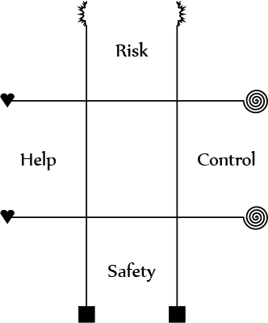

Dungeon Vanguards
"Well, what now, O wise leader?" Tandar sneered at Sabharum. "We were cavorting down hallways with not one monster in sight, and then a dozen statues started chasing us!" "And so we are faced with a crossroads, with a wall of golems amassed behind us, and two paths left to take..." Sabhuram sat and pondered the uncertain corridors leading deeper into this Crawling Dungeon. "Let us ask the caravaners." Tandar rolled his eyes. "Oh, yes, bringing along a tailor and a fortuneteller was a great idea for a dip into sheer peril." With that, Tsuko slapped Tandar on the head. "It would be unseemly for my special suit to be damaged in battle. As a yakuza, I go into dangerous situations, and I must be accompanied by a tailor to care for my garments." Tandar shook his head and walked over to the caravan. "Hey, I don't suppose one of you's got a crystal ball that can see the future back here?" Ombogi stepped up eagerly and said, "No! But I have the next best thing!" He pulled out a noisy chicken and a knife. "Am I in a dungeon, or a madhouse..." muttered Tandar.
"I'll bite. What does a chicken have to do with seeing the future?" Tandar sighed. "Your friend with the turban asked for a fortuneteller, but he was not specific. I am a poison oracle," pronounced Ombogi. "I can see the future through the trail of blood a poisoned creature leaves behind." "Good Gods, you must run out of chickens fast!" "My ancestors did, but now we fix the chicken up with herbal cures. It lets me master one chicken's motions in vivid detail, plus it makes for better flavor when it eventually becomes dinner." "Well, we have two paths to pick, and –" "The left path is safe, the right path leads to riches. I heard you mention this some time ago so, I did the ritual then." "Right path it is!" "Also, the right path is likely to get one of us killed."
Tandar fretted nervously with his hat, unsure of what to tell Sabharum and Tsuko. He decided to tell them the truth, or at least part of it. "Your fortuneteller wants us to go right, there's more loot that way." "How did he learn this?" Sabharum inquired, "I do not know this Ombogi fellow." "He bled a chicken half to death then healed it back up. Magic sure is wonderful..." grumbled Tandar, as the caravan wheeled behind them down the right path. As they passed down the corridor, the dungeon became more and more featureless, with blank, flat walls and the occasional open stone door. As they turned a corner, Tandar and Tsuko stood agape at the mounds of silver coins, and almost didn't notice the tall gray creature that floated on a disc of light at the top of the room. "INTRUDERS! ቿ ቔጯ ኇቝፏ!" squawked the creature in a foreign tongue, as it pulled out a glowing device and pointed it at the group. "He can't be that tough, can h–" Tandar's words stopped suddenly as a bolt of energy shot out of the creature's device and turned the swashbuckler to ash. Tsuko drew his katana and rushed at the assailant, while Sabharum hailed a priest from the caravan to see if Tandar could be revived. All signs pointed to no, but magic can be wonderful...
Dungeon Vanguards is a tabletop RPG set in a fantasy world beset by massive, growing, slow-moving structures called Crawling Dungeons. To prevent a Crawling Dungeon from squashing a town, kingdoms send out teams of Vanguards into the monstrosities with a caravan of supporting characters to halt the evil from inside. Many of these characters would be seen as very strange or oddly specific to people unfamiliar with this world, but a baffling man who specializes in attacking with a cape or a magician who specializes in reflecting magic back at enemy mages are common sights here. And "here" is a broad term, because where you enter a Crawling Dungeon is not the same place that you exit, and people from around the globe mingle because they have been transported from their home to foreign lands. Of course, many of these people want to get back home, and the only way they know to do that is to go into dungeons until one of the exits takes them to their homeland. It should get easier once a Vanguard loots magical items from dungeons, but that's only if he doesn't die in the process. And those that aren't careful will die... But the dungeons must be stopped.
Primer

Dungeon Vanguards by Tommy Ettinger is licensed under a Creative Commons Attribution 3.0 Unported License.
In Dungeon Vanguards, your goal is to venture into perilous moving structures and stop their rampage through the world. To accomplish this, a player creates a character to scout ahead (a Vanguard) and a character to support the team from the sidelines (a Caravaner). When in town, there's the option to recruit other characters for the Caravan. The Caravan is a magically fortified wagon that is very difficult to enter without a key, and the Caravaners are normally safe inside unless a Vanguard's key is taken. If a player's Vanguard dies, however, one of the Caravaners must be promoted to Vanguard for that player to keep playing. All characters can do something in combat in this game, so even a Jeweler or Cheesemaker can be of some use in a fight. Both combat and traps can be dangerous, even lethal, to an unprepared character, so you need to plan ahead and stay vigilant.
A character has 4 stats: Toughness, Agility, Persona, and Expertise. They range from 1 to as high as 9 for very powerful characters, and a new character has a maximum of 4 in any one stat.
- Toughness makes you do more and take less physical damage, and makes you harder to kill.
- Agility makes you hit more often and be hit less often for both weapon and magical attacks.
- Persona lets you inspire allies, intimidate enemies, resist magic, and ignore fear.
- Expertise lets you precaution allies, outwit enemies, cast magic, and see through trickery.
All of these effects are covered in the Actions summaries below, except for magical actions, which are covered in the Magic section.
Character Creation
To create a character, assign 10 points across the four stats, with a maximum number of 4 and a minimum of 1. You start with 25 HP (Health Points), plus your Toughness. Then, you choose a Class from the list of 200. This gives you several abilities, which are split into Passives, Talents, and Items, each themselves split into Innate and Access. Passives grant a constant numerical bonus to some actions you take, Talents grant new choices for actions or have specialized effects on other actions, and Items are what you carry with you into a dungeon, including weapons, armor, equippable artifacts, magic potions, and consumables like food.
An Innate ability can be an Innate Passive or an Innate Talent, and Innate Items are a bit different (not abilities, but rather equipment you get for free from your class guild). When you pick a Class, you start with all the Innate Passives and Innate Talents your class lists, at the listed Ranks. Read the effects of the Passive and Talent for what the Rank does; higher Ranks are better. You start each run through a Dungeon with all your Innate Items at the listed Rank; though an Item can run out of uses (such as by drinking a Potion), or be broken in a fight, Innate Items will be refreshed when you can rest in a town.
Access abilities are things your class lets you learn, and Access Items are objects your class gives you the connections to buy (via a guild). When you complete a Dungeon and survive, then you can either increase the Rank of an existing Innate Passive or Talent by 1 or add one of your class' Access Passives or Access Talents as a new Rank 1 Innate ability. Your max HP also goes up after completing a dungeon; add your Toughness again to your max HP. You get a chance to buy Access Items before you go into a dungeon. Each character starts with 400 gold, and can use this to acquire things that his class lists as Access Items, as well as whatever happens to be sold in town. This is covered in the Items section. Occasionally, you can add to the Rank of the Access Items you can acquire, or gain a new or better Innate Item. You do this by selling treasure back to your guild. Mysterious sites within Crawling Dungeons may grant the ability to increase a whole party's stats, but these are rare and sought-after.
Some characters can Cast spells, which are treated differently from other actions. You learn a spell by taking a Rank in a Magic Talent, such as Fire Magic or Fortune Magic, and many classes start with multiple Magic Talents. Each spell you learn can be cast once per encounter (a fight or a rest period between fights), and then it's gone until the encounter ends. You can learn the same spell more than once to let you cast it more times. Spells must be cast as part of a Cast Challenge, which can take multiple turns and can be interrupted. In exchange for their limited usage, most spells are very potent.
Glossary of Terms
- Action: Something a character does, like attacking or inspiring. You get two actions per turn; one standard and one talk action, with the option to convert either or both to minor actions.
- Adaptation: Your ability to figure out enemies' tricks and avoid being Outwitted. Your Adaptation starts with 10 + your Expertise and is improved by some Passives and items.
- Animal: A type of creature, Animals include both natural creatures and giant or modified versions of ordinary beasts. The kinds that can be encountered in dungeons are either Scavengers (like Dire Rats and Shadow Chimps) or Carnivores (like Wind Wolves and Velociraptors). All the Animals in Crawling Dungeons are highly aggressive, as if the Dungeon is driving them mad.
- Attack: An aggressive attempt to damage an opponent, which can be made with a weapon, bare hands, a natural weapon such as a monster's claws or fangs, or a spell. Attacking with anything but a spell is a physical attack, and is a standard action. Physical attacks involve a roll to hit vs. the opponent's Dodge, and those that deal damage can have that damage Soaked.
- Barrier: Your ability to resist the effects of magic, including damage from spells. Your Barrier starts with 10 + your Persona and is improved by some Passives and items. Gun-type weapons reduce your Barrier at higher Ranks; this is a known danger of wielding high-tech items. It seems like Barrier is closely tied to how well-liked a character is by divine or ancestral spirits, and those beings do not like weapons invented purely by mortals rather than given to humanity by the gods.
- Cast: Magic Spells can be powerful, but they use up mystical fuel called Mana. To gain Mana, you need to chant, utter incantations, or pray (the exact method depends on the character), as well as make some motions or gestures; this ritual is called Casting. Perfoming the ritual involves making a roll or series of rolls to Cast, each as a standard action. Rolls start with 3d6 + your Expertise, and some Passives, some Items, and all Magic Talents improve your rolls to Cast. The bonus you add to the 3d6 is important, because it determines how powerful some Spells you cast are.
- Celestial: A type of creature, Celestials come from the sky, and are believed to be angels. Not much is known about them, but there are many conflicting religions in the world, and all of them recognize that a Celestial is some kind of servant of a god. Still, since so many gods from various pantheons are evil, all reasonable churches have given permission to destroy Celestials that defend Crawling Dungeons.
- Class: Characters always have Classes, which cover both a character's physical and magical powers as well as his or her role in the world, as shown by the guilds that each class is associated with. Classes in Dungeon Vanguards are chosen from a list of 200, in the Classes section.
- Construct: A type of creature, Constructs are mobile machines, golems, animate objects, and other artificial things given a semblance of life. Constructs are typically resistant to both physical and magical damage, but are slow-moving and lack much intellect. Rumors persist of Celestial-built Constructs that are more intelligent than the brightest Human mages, but these have never been verified.
- Courage: Your ability to ignore fear effects and stay calm when foes Intimidate you. Your Courage starts with 10 + your Persona and is improved by some Passives and items.
- Creature: This is a general term for both people and monsters, and is used to differentiate these from inanimate objects and terrain features. Creatures at least have stats, and sometimes have Passives, Talents, or other abilities.
- Damage: Physical injury. Unlike some other fantasy games, damage is applied to Health Points rather than "hit" points, meaning you are actually physically harmed by attacks you fail to soak.
- Dodge: Your ability to avoid attacks, both physical and magical. Your Dodge starts with 10 + your Agility, and is improved by some Passives and equipment but made worse by weighty armor.
- Fiend: A type of creature, Fiends come from Hell or are descendants of things that invaded from Hell, and are always evil and sadistic. Particularly malicious people or monsters sometimes return to a semblance of life as Fiends; they may take a ghostly form or simply have their rotting corpse rise from the grave. Most common religions are dedicated to stamping out Fiends from the world, but they have had little success. For some reason, both Fiends and Celestials (natural enemies) can be found within Crawling Dungeons, though they don't seem to cooperate.
- Humanoid: A type of creature, Humanoids are people that are Humans or are like Humans, including Elves, Dwarves, Goblins, and Orcs. Humanoids are defined by their class, and all adult Humanoids have a class. A Humanoid's species doesn't have any concrete gameplay effect, but a player can choose a species for his character that he thinks fits his character concept. In the game world, Dwarves tend to have high Toughness, Elves tend to have high Agility, and so on, but these are not absolute rules, and you can create (or encounter) a sickly Dwarf with Toughness 1 or a clumsy Elf with Agility 1.
- Mana: A mystical resource used to power spells, Mana is siphoned from the surrounding area by Casting, but depletes quickly if not used. You lose Mana when you leave a zone and when you are damaged. The maximum Mana anyone can have is 200, and the minimum is 0.
- Mode: Weapons and some attack spells can have modes, which modify their effects in some way and may be optional or required (e.g. Poles have Reach mode as an option, but Bombs are Burst mode only). The modes are Stun (which simply knocks an enemy unconscious instead of killing them at 0 HP), Burst (which lets one attack hit multiple enemies, but also sometimes harms allies), and Reach (which lets you make a delayed attack that waits until you approach an enemy or until an enemy approaches you). Modes are described in the Basics of Items section.
- Ooze: A type of creature, Oozes are mindless (or at their best, very stupid) puddles of slime, acid, or elemental material. Mundane Oozes are usually slow-moving, hungry for living flesh, and very resistant to physical damage. Elemental Oozes may be quite different from their Mundane counterparts, and include everything from Mud Elementals to Nuclear Elementals.
- Passive: A Passive grants a constant numerical bonus to some actions you take in combat. Examples include Aggression, which increases the damage you deal, and Warded, which helps you avoid attack spells and lessens the power of harmful magic.
- Plant: A type of creature and also a type of terrain feature, Plants can be animate or stationary, and include fungi as well as things like trees and flowers. Animate Plants have a reputation of not being very bright even when they can talk, though some are very in-tune with a particular place and can answer questions about their home in great detail. Many animate Plants entered Crawling Dungeons to defend their territory, but like Animals, they tend to become very aggressive inside. Crawling Dungeons also have strange stationary Plant life inside, mostly vines and ground cover, and almost every such Plant glows softly.
- Rank: Almost every part of a character has a Rank, including Passives, Talents, and Items. A Passive's Rank multiplies the bonus the Passive provides. Rank 1 in a Talent gives you a preliminary benefit, while additional Ranks make those benefits much stronger. Items are referred to as either Rank X or +X, and any Rank above 0 means the Item is enchanted, and provides specific bonuses. High-Ranked items also cost much more when purchased. The Rank of an item can be temporarily reduced by curses.
- Soak: Reduction of physical damage, usually by virtue of being bulky, inured to pain, or armored. A Soak roll starts with 3d6 + your Toughness. Soak rolls are improved by armor and by some Passives.
- Spell: A specific use of magic that requires Mana to work. A spell can be cast any number of times per encounter, but uses Mana each time.
- Stats: The four stats, Toughness, Agility, Persona, and Expertise (abbreviated TAPE), define the core of who your character is. Most die rolls add one stat to the result and are opposed by something also modified by one stat.
Tactics Grid System
 Each major character (such as a PC) or each group of minor characters (such as a cluster of evil slimes) has a playing piece on a sheet of paper called a tactics grid. The position of a character's piece on the grid shows what kind of tactic they favor that round, and grants bonuses and penalties for actions that relate to that tactic. There may be multiple tactics grids on different sheets of paper if a fight takes place in different zones (one zone represents a room or hallway, usually), with each zone a separate grid, but characters can move between zones/grids without difficulty. A tactics grid is a 3-by-3 set of boxes (much like the one used in Tic-Tac-Toe) with the top, bottom, left, and right edges marked with different ways of approaching combat. The tactics grid has three rows, the top one marked Risk and representing reckless or risky tactics, the bottom one marked Safety and representing stealthy or careful tactics, and the middle one representing tactics that lie between the other two, such as shooting from around a corner or blocking and parrying with a sword. There are three columns, the left one marked Help and representing supportive or leading tactics, the right one marked Control and representing manipulative or frightening tactics, and the center one representing tactics that avoid influence from enemies.
The GM describes what zones are present and what they mean when a fight begins, and also states which zone the Vanguards start in. The Caravan is its own zone, and though some Caravaners may choose to start outside of their fortified vehicle, it is time-consuming to enter or exit the Caravan during a fight. You put a playing piece representing your character on any square in your starting zone when combat begins, and don't move it until you take your turn (you can change square on the same grid at the start of each of your turns, but can't change which grid you are on without spending an action). The position of your playing piece determines what actions you get bonuses or penalties on and which actions have bonuses or penalties when used against you. If a fight has more than one zone, you can spend a minor action (giving up your talk or standard action that turn) to move your playing piece to any box on any grid. Movement is important because you need to be on the same grid as your target to attack in melee, but ranged attacks are more difficult to make against enemies on the same grid. Some actions are affected by row (whether a piece is closer to Risk or Safety), while others are affected by column (how close a piece is to Help or Control).
Appeal Grid System
The same sheet of paper used for the tactics grid can also be used for social encounters, adapting the kinds of tactics in combat to the kinds of appeal that can be made in a discussion. This means that you place a playing piece on the grid to say whether you are trying to get someone to take a Risk, seek Safety or do something that falls in the middle ground. The piece's position also explains the reason you give them to do this, such as to Help others, to Control others, or somewhere in-between. In an encounter with a group of young goblins breaking windows, you could appeal to the rowdy vandals' Risk (implying a reward for going into danger) to get them to start a riot elsewhere and let you avoid a fight, or whether you choose to appeal to the hungry kids' desire for Safety and buy them food, so that you can start a dialogue with them and get the lay of the land. At the same time, you can describe another aspect to your Appeal. In a talk with a constable, this other aspect could be whether you are trying to appeal to the officer's desire to Help people, or his desire to be in Control and have power. Like with Risk and Safety, every individual will react to different Appeals differently. A pompous officer in an authoritarian empire will probably not try to Help citizens if asked, but will care about his Safety and his level of Control. On the other hand, a policeman in a small, sleepy village may want to Help citizens, but he could be too humble to desire Control over others, and might even take an Appeal to Control as an insult. There are too many kinds of appeal to cover on a 3x3 grid, so each of the four Appeals actually covers a wider scope than the name implies on its own.
- Risk covers all kinds of self-destructive behavior, whether this is someone getting into a fight, or a criminal turning himself into police (which is almost always the top left box, Help/Risk, because doing something that harms yourself falls under Risk even if it helps people).
- Safety covers all kinds of personal comfort, such as wealth, companionship, material possessions, and of course freedom from danger. Seducing or bribing someone is an appeal to Safety.
- Help covers obeying reason, loyalty, and "doing the right thing", but from the perspective of the NPC being convinced. "Help" for an evil orc means helping others in his group, not anyone else.
- Control covers negative emotions that may or may not be self-destructive; telling someone to go scare some theives out of town is an appeal to Risk and Control (top right), but telling a mob boss, "I'll do anything," to survive is an Appeal to Safety and Control (bottom right), where the control is over you.
In a social encounter, an NPC needs a certain Persuasion Number(PN) to do what you want, raised by Appeals made of the right kind and reduced by Appeals of the wrong kind. Put a playing piece on the Appeals Grid to show what you are Appealing to that round, and put a counter down on that box when the round ends. Good role-playing may count as a good Appeal if the GM thinks it fits. The GM tracks the progress toward the PN, but you fail a social encounter if you use the wrong kinds of appeals too often, and this may start a fight or force the PCs to find another path. NPCs will often have transitions where if a particular Appeal is used or something is mentioned, their behavior changes, like repeating a deceased friend's wishes to cause someone to rethink his life. An example might be: Jim the Border Guard, PN 4 succeeds (lets you cross), -3 PN fails (attacks), Safety +1, Help +1, Risk -1. Giving a bribe ends in success unless Jim has negative PN, then it ends in failure. Failing to give a legal, reasonable answer for why you want to pass causes a transition: PN 5 succeeds, -2 PN fails, Safety +1, Control +1, Risk -2. Bribes are still effective post-transition, but cost more.
Actions
- (Standard) Attack: You attack an enemy using a weapon at hand. If you are using a melee weapon, choose an enemy in the same zone as you; if your weapon is ranged, the enemy can be in any zone. Next, roll 3d6, adding your Agility and any bonuses from Passives like Finesse. Add all of the following that apply: +2 if you are in the top row (marked Risk), +2 if your target is in the top row, -2 if you are in the bottom row (marked Safety), -2 if your target is in the bottom row, and -2 if you are using a ranged weapon and your target is on the same zone as you. Remember any dice that come up as 1 or as 6. Your weapon may grant a bonus or impose a penalty on rolls to hit. If the result at least equals the enemy's Dodge (10 plus their Agility and any bonuses from Passives like Evasion), you can deal damage, reducing the target's Health. All weapons deal fixed base damage, plus the attacker's Toughness and any bonuses from Passives like Aggression. For each 6 that you rolled, the target takes an additional 2 damage on a hit. The target always Soaks some damage. To Soak damage you took, roll 3d6 and add your Toughness plus any bonuses from armor or Passives like Resist, and reduce the damage you receive by the result (minimum 0). Remember any dice that come up as 1 on your Soak roll as well. Dice that came up as 1 on rolls to hit or to Soak may affect your items in unpleasant ways; see the Basics of Items section.
- (Standard) Sneak: You get out of harm's way and may become difficult to find. Roll 3d6, adding your choice of Agility or Persona. Add +2 if you are in the bottom row, or -2 if you are in the top row. If the result is at least 14, write the total result down on some scratch paper; this is your Concealment Score (CS), and until an enemy Detects you (see below) and gets a result that at least equals your CS, you are Hidden, and cannot be directly targeted (by allies or enemies) until you take any action, at which point you lose (cross out) your CS. Burst attacks and other abilities that affect everyone in a zone (or everyone in the encounter) can still affect you while Hidden.
- (Talk) Detect: You smash possible hiding places or probe for hidden enemies. Roll 3d6, adding your choice of Toughness or Expertise. Add +2 if you are in the top row, or -2 if you are in the bottom row. If the result at least equals the Concealment Score (CS) of an enemy, each enemy whose CS is beaten by your result is noticed, and those enemies have their Scores crossed off. Then they are no longer Hidden, and can be targeted by anyone.
- (Talk) Inspire: You try to convince an ally to overcome fear and attack fiercely. Roll 3d6, adding your Persona and any bonuses from Passives like Leadership. If you are in the left column (marked Help), add 2. If the result is 13 or higher, an ally in any row but the bottom goes up 1 step on the condition meter. If the result is 18 or higher, all allies in any row but the bottom go up 1 step on the condition meter.
- (Talk) Intimidate: You try to strike fear into an enemy and discourage them from boldly attacking. Choose an enemy in any row but the bottom and roll 3d6, adding your Persona and any bonuses from Passives like Terrify. If you are in the right column (marked Control), add 2; if your target is in the center column (between Help and Control), subtract 2. If the result at least equals the enemy's Courage, which is 10 plus his Persona (and any bonuses from Passives like Devotion), the enemy goes down one step on the condition meter.
- (Talk) Precaution: You try to support one of your allies by warning them of incoming danger. Roll 3d6, adding your Expertise and any bonuses from Passives like Instincts. If you are in the left column (marked Help), add 2. If the result is 13 or higher, an ally in any row but the top goes up 1 step on the condition meter. If the result is 18 or higher, all allies in any row but the top go up 1 step on the condition meter.
- (Talk) Outwit: You try to confuse an enemy while blocking his escape routes. Choose an enemy in any row but the top and roll 3d6, adding your Expertise and any bonuses from Passives like Analysis. If you are in the right column (marked Control), add 2; if your target is in the center column (between Help and Control), subtract 2. If the result at least equals the enemy's Adaptation, which is 10 plus the enemy's Expertise (and any bonuses from Passives like Unpredictable), the enemy goes down one step on the condition meter.
Passive List
A Passive is an ability that provides a simple boost to die rolls on specific actions or a flat bonus to a number value that determines part of your character. For example, Finesse gives a bonus on all rolls to hit, and Aggression increases the damage you deal with all attacks. Some are more specialized, like Sniper, which gives a bonus on rolls to hit and to the damage you deal, but only with ranged attacks, and Alertness, which increases your Dodge (how hard to hit you are) in the first round of combat. A character has a rank in each of his Passives, ranging from 1 to 6, that multiplies the effect of the Passive. The Glossary defines some of the new terms here.
- Aggression: You deal +2 damage.
- Alertness: Your Dodge increases by +4 against attacks in the first round.
- Ambusher: You deal +4 damage on your attacks in the first round.
- Analysis: You gain +2 on rolls to Outwit.
- Basher: You gain +1 on rolls to hit and deal +2 damage, but only with melee physical attacks.
- Brawler: You deal +4 damage, but only with Unarmed attacks using Stun mode.
- Devotion: Your Courage (the difficulty to Intimidate you) is increased by +4.
- Energized: You gain +3 on rolls to Cast.
- Evasion: Your Dodge (the difficulty to hit you) increases by +2.
- Finesse: You gain +2 on rolls to hit.
- Instincts: You gain +2 on rolls to Precaution.
- Leadership: You gain +2 on rolls to Inspire.
- Maniac: You deal +3 damage, but only when using Burst mode or using Slayer spells.
- Mercy: You deal +3 damage, but only when using Stun mode. All weapons you wield and attack spells you Cast have Stun mode.
- Mobility: Your Dodge increases by +2 and you gain +2 on rolls to Soak, but only against ranged physical attacks.
- Mysterious: Your Adaptation and Courage are increased by +2.
- Parry: Your Dodge increases by +2 and you gain +2 on rolls to Soak, but only against melee physical attacks.
- Resist: You gain +2 on rolls to Soak.
- Sniper: You gain +2 on rolls to hit and deal +1 damage, but only with ranged physical attacks.
- Terrify: You gain +2 on rolls to Intimidate.
- Unpredictable: Your Adaptation (the difficulty to Outwit you) is increased by +4.
- Warded: Your Dodge increases by +1 and your Barrier increases by +3, but only against spells.
Basics of Talents
A Talent is an ability a character has that is more specialized than a Passive, or provides a new action the character can take. Examples include Sword Mastery, which gives significant bonuses when wielding a sword or sword-like weapon, Fiend Bane, which gives a very large bonus to damage against Fiend monsters and lets you make items from Fiends' corpses, and Counterattack, which gives you a new action that puts you in a state where you attack people who attack you. Many Talents are useful out of combat as well, such as Maintenance, which restores damaged items to working order while you aren't in combat, and Artifact Craft, which lets you craft items in down-time and appraise the value and powers of items. Your ability to use magic is determined in large part by your Magic Talents, which are summarized here and described in detail in the Magic section.
A Talent grants a benefit at Rank 1, such as the ability to mock enemies with Taunt or bonus damage vs. Animals and the knowledge of how to butcher their corpse to make usable meat with Animal Bane. Each non-Magic Talent grants a different benefit to you at each additional Rank after 1, usually an incremental increase to how effective you are when using that Talent. Some talents need rolls to perform; these rolls are usually improved with each Rank you take after the first, as well as by a stat, i.e. Toughness, and often having Ranks in a specific Passive will boost the roll to perform the talent. Magic Talents do not have a different benefit for the first Rank vs. additional Ranks; they let you choose a spell to learn from a spell list and grant a bonus to Cast rolls with every Rank you take.
To help navigate the large list, Talents can be split into a few special categories of similar effects: Weapon Mastery, Magic, Item Craft, and Creature Bane Talents.
- The Weapon Mastery Talents are Axe Mastery, Blade Mastery, Bludgeon Mastery, Bomb Mastery, Bow Mastery, Gun Mastery, Knife Mastery, Spear Mastery, Spike Mastery, and Whip Mastery.
- The Magic Talents can be split into elemental magic and general magic.
- The Elemental Magic Talents are Atom Magic, Dark Magic, Earth Magic, Fire Magic, Ice Magic, Light Magic, Metal Magic, Poison Magic, Sound Magic, Storm Magic, Water Magic, and Wind Magic.
- The General Magic Talents are Anathema Magic, Charm Magic, Dispel Magic, Fortune Magic, Guard Magic, Heal Magic, Hex Magic, Ritual Magic, and Time Magic.
- The Item Craft Talents are Apparel Craft, Armor Craft, Artifact Craft, Food Craft, Potion Craft, and Weapon Craft.
- The Creature Bane Talents are Animal Bane, Celestial Bane, Construct Bane, Fiend Bane, and Ooze Bane.
Talent List
- Acrobatics: You can move with great speed and make mighty leaps. If you succeed on an Agility roll vs. difficulty 13, you can move 2 zones, jumping over the one in the middle, when moving as a minor action. If you fail, you land in a square of the GM's choice in the middle zone. With each additional Rank: Gain a +3 bonus on the roll to perform. Rolls are also modified by Mobility, at +1 per Rank.
- Aim: You can take your time to make a very deadly attack. You can enter an Aiming stance and designate a target as a standard action. The stance ends if you are damaged. If you are still in the stance at the start of your next turn, you can make a ranged attack at the target immediately, dealing +4 damage and ending the stance. With each additional Rank: Deal an extra +4 damage on the aimed attack.
- Anathema Magic: You can cast spells that are the bane of specific groups; these spells are lethal enough that they are nicknamed "death magic." Spell list: Doom, Wither, Man Eater, Ooze Begone, Pet Cemetery, Go Back To Hell, Angels Fall, Sabotage, Brain Burst. With each Rank: Learn a new spell and gain a +2 bonus on rolls to cast.
- Animal Bane: You are a master hunter of Animals. You deal +5 damage to animals and can create a single Rank 2 Meat or Fish from an Animal's corpse, as appropriate for the creature. With each additional Rank: Deal an extra +5 damage to Animals.
- Apparel Craft: You can craft apparel and repair such items. Each rest period, you make an Expertise roll; the result is the price in gold of the apparel you create (you can add multiple results to one price). Alternatively, you can repair existing apparel, restoring one use to it. With each additional Rank: Apparel you create gain an extra +1 Rank. Rolls are also modified by Finesse, at +1 per Rank.
- Armor Craft: You can craft armor (including shields) and repair such items. Each rest period, you make an Expertise roll; the result is the price in gold of the armor you create (you can add multiple results to one price). Alternatively, you can repair existing armor, restoring one use to it. With each additional Rank: Armor you create gains an extra +1 Rank. Rolls are also modified by Resist, at +1 per Rank.
- Artifact Craft: You can craft special artifacts and evaluate unknown items. Each rest period, you make an Expertise roll; the result is the price in gold of the artifacts you create (you can add multiple results to one price). When you find an item, you know its powers and cost. With each additional Rank: Artifacts you create gain an extra +1 Rank. Rolls are also modified by Warded, at +1 per Rank.
- Atom Magic: You can cast spells infused with nuclear power. Spell list (Atom Element): Explosion, Wither, Toxicity, Pet Cemetery, Man Eater, Doom, Block Enchantment, Disrupt Cast, Bolt. With each Rank: Learn a new spell and gain a +2 bonus on rolls to cast.
- Axe Mastery: You have mastered the brutal axe. You can reroll the lowest die when making attack rolls with Axe-type weapons, and deal +2 damage per crit die. With each additional Rank: Deal an extra +6 damage per crit die with Axes.
- Blade Mastery: You have mastered a wide variety of heavy swords and blades. You can reroll the lowest die when making attack rolls with Blade-type weapons, and gain +1 Dodge against physical attacks when wielding such weapons. With each additional Rank: Gain an extra +3 Dodge against physical attacks.
- Bludgeon Mastery: You have mastered all kinds of bludgeoning weapons, such as clubs and hammers. You can reroll the lowest die when making attack rolls with Bludgeon-type weapons, and deal +1 damage with such weapons. With each additional Rank: Deal an extra +3 damage with Bludgeons.
- Bomb Mastery: You have mastered the dangerous bomb. You can reroll the lowest die when making attack rolls with Bomb-type weapons, and deal +2 damage against armored targets with such weapons. With each additional Rank: Deal an extra +6 damage vs. armored targets with Bombs.
- Bow Mastery: You have mastered the bow and crossbow. You can reroll the lowest die when making attack rolls with Bow-type weapons, and gain +1 on rolls to hit with such weapons. With each additional Rank: Gain an extra +3 on rolls to hit.
- Breaker: You can damage an enemy's weapon or armor with your attacks. When you roll a crit die or decide to attack a character's weapon or armor, you can remove 1 use from that opponent's targeted item (if you didn't attack an item, you harm what the target is wearing on his Body slot, like armor). With each additional Rank: Remove 1 more use.
- Celestial Bane: You are a master slayer of Celestials. You deal +5 damage to Celestials and can create a single Rank 2 Healing Potion or Pure Water from a Celestial's corpse, in addition to any loot the Celestial was carrying. With each additional Rank: Deal an extra +5 damage to Celestials.
- Charm Magic: You can cast spells that alter the mind. Spell list: Clear Mind, Pacify, Euphoria, Slumber, Fury, Mind Wipe, Befriend, Brain Burst, Paralyze. With each Rank: Learn a new spell and gain a +2 bonus on rolls to cast.
- Cleanse: You can remove curses on items, people, and places. Make a Persona roll as a standard action vs. a difficulty set differently for each curse; if you succeed, one curse is removed, but if you fail, you cannot remove that curse until the next rest period. With each additional Rank: Gain a +3 bonus on the roll to perform. Rolls are also modified by Devotion, at +1 per Rank.
- Command: You can order allies to act immediately. As a standard action, you can instruct an ally to attack a foe you can both see. If the ally obeys, he physically attacks immediately, and adds your Persona on the attack roll. With each additional Rank: The ally's attack roll gains a +3 bonus.
- Confusion: You can cause an enemy to mistakenly attack another enemy some of the time. As a talk action, make a Persona roll vs. one enemy's Adaptation; on a success, any time that enemy misses a single target on his next turn, he hits an enemy of your choice (don't roll to hit). With each additional Rank: Gain a +3 bonus on the roll to perform. Rolls are also modified by Mysterious, at +1 per Rank.
- Construct Bane: You are a master destroyer of Constructs. You deal +5 damage to Constructs and can create a single Rank 1 Heavy Armor or Shield from a construct's disabled or destroyed form, in addition to any loot the Construct was carrying. With each additional Rank: Deal an extra +5 damage to Constructs.
- Counterattack: You can punish those who hit you with weapons. As a standard action you can enter a Counter stance until your next turn. While in this stance, once/round you can immediately attack back with a physical attack against anyone who physically attacks you and hits. Add your Toughness to the attack roll. With each additional Rank: Make an extra immediate attack per round. Rolls to hit with counterattacks are also modified by Parry, at +1 per Rank.
- Counterspell: You are trained in fighting other magicians, and can absorb power from their spells. As a standard action you can enter a Counter stance that lasts until you take damage from something other than a spell. While in this stance, once/round you can Cast to gain Mana when you are targeted by an enemy's spell and your Barrier exceeds his Casting bonus. Add your Expertise to Barrier while in this stance. With each additional Rank: Gain an extra +4 Mana with the granted Cast roll.
- Dark Magic: You can cast spells infused with darkness. Spell list (Dark Element): Doom, Man Eater, Pet Cemetery, Angels Fall, Slumber, Invisibility, Void Field, Block Enchantment, Wither. With each Rank: Learn a new spell and gain a +2 bonus on rolls to cast.
- Defile: You can place curses on items and places. Make a Persona roll as a standard action; if it exceeds 10 you curse one item or zone and set the total as the difficulty to remove the curse. A cursed item has a +0 rank until the curse is removed, and a cursed zone has varying mild effects. With each additional Rank: Gain a +3 bonus on the roll to perform. Rolls are also modified by Terrify, at +1 per Rank.
- Dispel Magic: You can cast spells that remove the effects of magic. Spell list: Clear Mind, Banish, Null Fortune, Mighty Barrier, Void Field, Block Enchantment, Disrupt Cast, Invisibility, Sabotage. With each Rank: Learn a new spell and gain a +2 bonus on rolls to cast.
- Earth Magic: You can cast spells infused with stone and soil. Spell list (Earth Element): Solid Tomb, Paralyze, Toxicity, Ooze Begone, Go Back To Hell, Sabotage, Mighty Armor, Remedy, Thrust. With each Rank: Learn a new spell and gain a +2 bonus on rolls to cast.
- Element Tweak: You can change the element type of any attack you make or spell you cast (if it already has a type, such as for Bombs and spells from spell lists that have an Element) as a free action. You deal +1 damage if the target is vulnerable to the element you chose. With each additional Rank: Deal an extra +3 damage if the target is vulnerable.
- Endurance: You can withstand extremes in the environment. When confronted with an environmental hazard (not a trap, but something like lava or snow), you can make a Toughness roll when you first encounter it; subtract the result from all damage caused by the hazard, and if you get at least 15, you are immune to the hazard's condition effects. With each additional Rank: Gain a +3 bonus on the roll to perform. Rolls are also modified by Resist, at +1 per Rank.
- Feint: You can fake out enemies with a quick motion. If an enemy enters a stance within the same zone as you (including continuing to Cast a spell if the Challenge is not met with the first roll), you can make an Agility roll vs. that enemy's Adaptation to end that stance immediately. With each additional Rank: Gain a +3 bonus on the roll to perform. Rolls are also modified by Finesse, at +1 per Rank.
- Fiend Bane: You are a master crusader against Fiends. You deal +5 damage to Fiends and can create a single Rank 1 Armor Spikes or Medium Armor from a Fiend's corpse, as appropriate for the creature, in addition to any loot the Fiend was carrying. With each additional Rank: Deal an extra +5 damage to Fiends.
- Fire Magic: You can cast spells infused with fire. Spell list (Fire Element): Explosion, Bolt, Energy Wall, Man Eater, Wither, Doom, Haste, Fury, Brain Burst. With each Rank: Learn a new spell and gain a +2 bonus on rolls to cast.
- Flurry: You can make two attacks or cast two spells in a flurry of motion. Spend both of your actions this turn and make an Agility roll vs. difficulty 20; if you succeed, you can either make two attacks or two Cast rolls. Wielding a second weapon adds its Rank to your Rank in Flurry, but you make both attacks or Cast rolls with one weapon. With each additional Rank: Gain a +3 bonus on the roll to perform. Rolls are also modified by Evasion, at +1 per Rank.
- Food Craft: You can craft food items, and gain extra benefits when using them. Each rest period, you make an Expertise roll; the result is the price in gold of the food you create (you can add multiple results to one price). When you use food items, they gain +1 Rank. With each additional Rank: Items you create gain an extra +1 Rank. Rolls are also modified by Basher, at +1 per Rank.
- Fortune Magic: You can cast spells that bring good luck to allies. Spell list: Haste, Remedy, Euphoria, Foresee, Mighty Barrier, Mighty Armor, Clear Mind, Invisibility, Null Fortune. With each Rank: Learn a new spell and gain a +2 bonus on rolls to cast.
- Guard Magic: You can cast spells that protect you and your allies. Spell list: Paralyze, Mighty Barrier, Mighty Armor, Sanctum, Energy Wall, Pacify, Solid Tomb, Invisibility, Thrust. With each Rank: Learn a new spell and gain a +2 bonus on rolls to cast.
- Gun Mastery: You have mastered the emerging technology of firearms. You can reroll the lowest die when making attack rolls with Gun-type weapons, and gain +2 Dodge against ranged physical attacks when wielding such weapons. With each additional Rank: Gain an extra +4 Dodge against ranged physical attacks.
- Hard Style: You have learned a combat martial art style. When you make an unarmed attack against an enemy who is wielding a manufactured weapon, you can force the enemy to reroll a die of your choice on his soak roll, and you deal +1 damage. With each additional Rank: Deal an extra +3 damage with such unarmed attacks.
- Heal Magic: You can cast spells that heal allies and affect enemies' vigor. Spell list: Sanctum, Quick Cure, Miracle Cure, Pacify, Remedy, Toxicity, Euphoria, Clear Mind, Mighty Armor. With each Rank: Learn a new spell and gain a +2 bonus on rolls to cast.
- Herbalism: You can use plants for good or ill. You can instantly identify what Herbs will do, and in each rest period you can distill two herbs into poultices (combining their boost to HP) or poisons (combining their effects and adding them to the first damage with a weapon). With each additional Rank: You can distill an extra good or bad herb.
- Hex Magic: You can cast spells that bring bad luck to enemies. Spell list: Slumber, Doom, Paralyze, Toxicity, Befriend, Null Fortune, Block Enchantment, Disrupt Cast, Euphoria. With each Rank: Learn a new spell and gain a +2 bonus on rolls to cast.
- Ice Magic: You can cast spells infused with ice. Spell list (Ice Element): Solid Tomb, Wither, Ooze Begone, Go Back To Hell, Paralyze, Mighty Armor, Mighty Barrier, Thrust, Bolt. With each Rank: Learn a new spell and gain a +2 bonus on rolls to cast.
- Impromptu Craft: You have a knack for quickly making low-quality items from whatever is on hand. You can craft any single item as a standard action by making an Expertise roll vs. its price in gold, but the item is always rank 0 and only has 1 use. You cannot add multiple results to one price with this. With each additional Rank: The item has +1 use. Rolls are also modified by Unpredictable, at +1 per Rank.
- Improvise Weapon: You are never without a reasonable facsimile of a weapon. You can treat any weapon or item as a Rank 0 Club, and do not lose uses from those items when attacking with or throwing them. You deal +1 damage with such weapons. With each additional Rank: Deal an extra +2 damage with improvised weapons, and choose an additional weapon to improvise (beyond the Club), which can be Armor Spikes, Magic Staff, Pole, Net, Shuriken, or Whip.
- Insight: You can gauge magical power. Once per turn, if you succeed on an Expertise roll vs. difficulty 18, you learn the Cast bonuses of all enemies in a radius of one zone beyond the one you are in (enemies who cannot Cast have a bonus of +0). You can tell which bonuses are present in which zones, but you don't know which enemy has each bonus. With each additional Rank: Radius expands by 1 zone and gain a +2 bonus. Rolls are also modified by Instincts, at +1 per Rank.
- Knife Mastery: You have mastered the simple-but-deadly knife. You can reroll the lowest die when making attack rolls with Knife-type weapons, and deal +2 damage per crit die. With each additional Rank: Deal an extra +6 damage per crit die with Knives.
- Light Magic: You can cast spells infused with light. Spell list (Light Element): Illusion, Invisibility, Foresee, Miracle Cure, Go Back To Hell, Ooze Begone, Euphoria, Pacify, Bolt. With each Rank: Learn a new spell and gain a +2 bonus on rolls to cast.
- Maintenance: You can restore the spent uses of items, both for yourself and others. Once per rest period, make an Expertise roll vs. a difficulty of 10; if you succeed, one item gains back 1 use. With each additional Rank: The item gains back an extra use. Rolls are also modified by Analysis, at +1 per Rank.
- Metal Magic: You can cast spells infused with metal and the forge. Spell list (Metal Element): Sabotage, Mighty Armor, Mighty Barrier, Solid Tomb, Explosion, Clear Mind, Paralyze, Illusion, Bolt. With each Rank: Learn a new spell and gain a +2 bonus on rolls to cast.
- Ooze Bane: You are a master at mopping up Oozes. You deal +5 damage to Oozes and can create a single Rank 2 Candy or Alcohol from an Ooze's remains. With each additional Rank: Deal an extra +5 damage to Oozes.
- Pain Surge: You can enter a Control stance as a standard action. Any damage you take while in this stance is added to your next roll to Cast, including self-inflicted damage. You can self-inflict 1d6 damage as a free action once/turn. You gain +1 on rolls to cast while in this stance. With each additional Rank: Gain an extra +3 on rolls to Cast.
- Paint Target: You can call out the weaknesses of an enemy to your teammates. You can enter an Aiming stance and designate a target as a standard action. The stance ends if you are damaged or you are no longer able to see the target. All ranged attacks against the target gain +2 on rolls to hit. This stance doesn't end until you enter another stance. With each additional Rank: Ranged attacks gain an extra +2 on rolls to hit the target.
- Plant Bane: You are a master at uprooting Plants, including Plant monsters and ordinary vegetation. You deal +5 damage to Plants and can create a single Rank 2 Herbs or Spear from a Plant monster's remains. With each additional Rank: Deal an extra +5 damage to Plants.
- Poison Magic: You can cast spells infused with poison. Spell list (Poison Element): Toxicity, Man Eater, Ooze Begone, Pet Cemetery, Remedy, Euphoria, Paralyze, Mind Wipe, Wither. With each Rank: Learn a new spell and gain a +2 bonus on rolls to cast.
- Potion Craft: You can craft potions and drinks, and gain extra benefits when using them. Each rest period, you make an Expertise roll; the result is the price in gold of the potions you create (you can add multiple results to one price). When you use potions, they gain +1 Rank. With each additional Rank: Items you create gain an extra +1 Rank. Rolls are also modified by Analysis, at +1 per Rank.
- Protect Ally: You can guard an ally as a free action on your turn, taking attacks (both physical and magical) that hit them and having them hit you instead. This lasts until the start of your next turn. You can add your Toughness to soak rolls and to Barrier when receiving these attacks. With each additional Rank: Gain a +3 bonus to soak rolls and Barrier against attacks you receive for the ally you are guarding.
- Quick Draw: You are lightning-fast with your attacks. You can draw a weapon as a free action. Once/encounter, you can draw and attack with a weapon as a free action by making an Agility roll vs. difficulty 15. If you are wielding a Reloadable Weapon, you can replace the free action to draw-and-attack with a free action to reload that weapon. With each additional Rank: Make an extra free attack per encounter. Rolls are also modified by Finesse, at +1 per Rank.
- Rage: You can fly into a frenzied rage. This takes a Talk action, rendering you unable to avoid attacks (Dodge 0), but granting you incredible strength and resilience. Until you end your rage as a talk action, you gain +2 on Soak rolls and deal double damage with melee physical attacks (before Soaking). With each additional Rank: Gain an extra +2 on Soak rolls while in Rage.
- Ritual Magic: You can cast spells that take a while to prepare but have incredible effects. Spell list: Sanctum, Miracle Cure, Banish, Illusion, Brain Burst, Mind Wipe, Foresee, Angels Fall, Go Back To Hell. With each Rank: Learn a new spell and gain a +2 bonus on rolls to cast.
- Roar: You can let out a loud noise, usually a bellowing roar, that disrupts everyone's concentration. As a standard action, you target every character in a stance, and make a Toughness roll against their Courage (allies get +5 Courage vs. this). Success ends their stance. With each additional Rank: Gain a +3 bonus on this roll; allies get +5 Courage vs this. Rolls are also modified by Terrify, at +1 per Rank.
- Scan: You have a knack for spotting hidden things. You can roll Expertise as a free action once/turn to find hidden foes, doors, and items, as well as reveal traps, as long as you beat the relevant Concealment Score. This is a modified version of the Detect action. With each additional Rank: Make an extra roll per turn and gain a +2 bonus. Rolls are also modified by Alertness, at +1 per Rank.
- Snatch: You can snatch an item or weapon out of an enemy's hand. Make an unarmed attack roll with a free hand opposed by the target's Dodge; if you succeed, you can take a one-handed weapon, thrown weapon, consumable or potion from the target and wield or hold it. With each additional Rank: Gain a +3 bonus on this unarmed attack roll. Rolls are also modified by Finesse, at +1 per Rank.
- Sneak Attack: You can hit-and-run, slinking into the shadows after attacking. After attacking, you can Sneak as a talk action, and you add your Agility to the roll to Sneak. With each additional Rank: Gain a +3 bonus on rolls to Sneak. Rolls are also modified by Ambusher, at +1 per Rank.
- Soft Style: You have learned a calm martial art style. When an enemy physically attacks you with a manufactured weapon, you can force the enemy to reroll a die of your choice on his attack roll, and you gain +1 Dodge against such weapons. With each additional Rank: Gain an extra +3 Dodge against manufactured weapons.
- Sound Magic: You can cast spells infused with sound. Spell list (Sound Element): Slumber, Euphoria, Disrupt Cast, Befriend, Doom, Clear Mind, Fury, Brain Burst, Explosion. With each Rank: Learn a new spell and gain a +2 bonus on rolls to cast.
- Spear Mastery: You have mastered the spear and polearm. You can reroll the lowest die when making attack rolls with Spear-type weapons, and gain +1 Soak against melee attacks when wielding such weapons. With each additional Rank: Gain an extra +4 on melee Soak rolls with Spears.
- Spike Mastery: You have mastered the use of armor and shield spikes. You can reroll the lowest die when making attack rolls with Spike-type weapons, and gain +1 on rolls to hit when wielding such weapons. With each additional Rank: Gain an extra +3 on rolls to hit with Spikes.
- Storm Magic: You can cast spells infused with thunder and lightning. Spell list (Lightning Element): Haste, Angels Fall, Sabotage, Paralyze, Disrupt Cast, Explosion, Quick Cure, Brain Burst, Bolt. With each Rank: Learn a new spell and gain a +2 bonus on rolls to cast.
- Sustenance: You can sustain yourself without food or water, but gain extra benefits when eating or drinking. You never have to make rolls vs. hunger or thirst. When you use food items or potions, they gain +1 Rank. With each additional Rank: Foods or potions you use gain an extra +1 Rank.
- Taunt: You can infuriate enemies. As a minor action, you can make a Persona roll opposed by Adaptation to end a single enemy's current stance and apply a -2 penalty on rolls to Cast for the next round. With each additional Rank: Gain a +2 bonus and worsen penalty by -1. Rolls are also modified by Unpredictable, at +1 per Rank.
- Telekinesis: You can move objects with your mind. As a standard action you can enter a Control stance; you remain in this stance until damaged. You can make attacks as a standard action from any zone, with any item (even others' held items), and add your Persona to attack rolls. With each additional Rank: Gain a +3 bonus on attack rolls with this.
- Time Magic: You can cast spells that affect time itself. Spell list: Quick Cure, Paralyze, Disrupt Cast, Foresee, Haste, Mighty Armor, Banish, Sanctum, Wither. With each Rank: Learn a new spell and gain a +2 bonus on rolls to cast.
- Vile Morph: You can enter combat in Demon Form, becoming a Fiend. Your equipment is unusable while you are morphed but returns to normal when you change back after the fight. In Demon Form, you gain +1 on Soak rolls, rolls to hit, and rolls to Terrify, and deal +1 damage. With each additional Rank: Gain an extra +1 on everything this affects.
- Water Magic: You can cast spells infused with the river and ocean. Spell list (Water Element): Doom, Quick Cure, Ooze Begone, Remedy, Paralyze, Sabotage, Mighty Barrier, Foresee, Thrust. With each Rank: Learn a new spell and gain a +2 bonus on rolls to cast.
- Weapon Craft: You can craft weapons and repair damaged ones. Each rest period, you make an Expertise roll; the result is the price in gold of the weapons you create (you can add multiple results to one price). Alternatively, you can repair an existing weapon, restoring one use to it. With each additional Rank: Weapons you create gain an extra +1 Rank. Rolls are also modified by Basher, at +1 per Rank.
- Whip Mastery: You have mastered the cruel whip. You can reroll the lowest die when making attack rolls with Whip-type weapons, and deal +2 damage against unarmored targets with such weapons. With each additional Rank: Deal an extra +6 damage vs. unarmored targets with Whips.
- Wild Morph: You can enter combat in Wild Form, becoming an Animal. Your equipment is unusable while you are morphed but returns to normal when you change back after the fight. In Wild Form, your Courage, Dodge, and Barrier go up by +1, you gain +1 on Soak rolls, and you deal +1 damage. With each additional Rank: Gain an extra +1 on everything this affects.
- Wind Magic: You can cast spells infused with the air and wind. Spell list (Wind Element): Haste, Angels Fall, Doom, Mighty Barrier, Void Field, Disrupt Cast, Clear Mind, Invisibility, Thrust. With each Rank: Learn a new spell and gain a +2 bonus on rolls to cast.
- Worshipped: Your allies revere you and can quickly choose to be hit in place of you. When you are attacked, any ally in the same zone can choose to take an attack or spell that requires an attack roll that hits you and have it hit them instead. If the attack or spell had multiple targets, the ally cannot choose to suffer it in your place. You add your Persona to their soak rolls and Barrier when they receive these attacks. With each additional Rank: The ally gains a +3 bonus on soak rolls and Barrier with this.
Basics of Items
Item is the general term for an object that has a Rank from 0 to 6 and a category, which can be a Weapon, a piece of Armor, a piece of Apparel, an equippable Artifact, a piece of Food, and/or a Potion. Examples include a Shortsword, which is a Weapon, a Suit, which is Apparel, and a Fish, which is both a Food and a semi-viable Weapon (if you whack someone with it). An Item's categories determine what Item Craft Talents apply to it, as well as some additional effects. You equip Armor, Apparel, and Artifacts, and only a few of these cannot be worn together; these are noted as having a Slot (either Head, Body, One Hand, or Two Hands) in the Item's description. You can hold one One-Handed item in each hand, but you must choose only one of the two items to be wielding or using at the start of each turn (but see the Flurry Talent for the benefits of wielding two Weapons). Weapons have a further subcategory that determines what kind of Weapon Mastery Talent applies to them, such as Knife or Bow; a single weapon may have one or two subcategories. A Knife is only in the Knife category, but a Flail is both a Bludgeon and a Whip, for example. Other than Mastery Talents, there is no "level of proficiency" needed to use an item; any adventurer can use a Bow, Pistol, Heavy Armor, Katana, etc. with no penalties.
An Item's Rank represents its level of quality, including magical enhancements. A commonplace item is Rank 0, while a well-forged or magically-augmented item has a higher Rank, up to 6 for legendary Items. Rank 0 Items are commonly available on the open market, but Items from Ranks 0 to 4 are typically available to characters through their guilds, with higher Ranks becoming available as a character's standing improves in a guild. All Items get better at higher Rank, and Items other than Weapons rarely have any effect if they are less than Rank 1. For each Rank above 0, an Item's Rank Bonus goes up. Rank Bonuses have some numbers with an 'R' appended; substitute this 'R' for the Item's Rank and multiply that number by the Rank. For example, a Battleaxe has the Rank Bonus "You gain +2R on rolls to hit and deal +4R damage, but only with melee physical attacks, and you lose -2R Dodge." At Rank 3, that Battleaxe would provide you with +6 on rolls to hit (+2 times Rank 3) and would deal +12 damage on your melee physical attacks (+4 times Rank 3), but you would lose -6 Dodge (-2 times Rank 3). Because some items impose penalties at higher Ranks (usually as a result of being larger and heavier to be more effective at one thing), it may be a good idea to avoid very-high-Ranked axes, guns, and heavier armors until you have a well-rounded set of defenses.
Your primary means of acquiring good items is through your guild. Guilds have all sorts of ways to contact and be contacted by members; this varies by class and character, but while a Paladin would contact his guild through divine magic during his morning prayers, a Hooligan (yes, they have a guild too, though it's more of a fraternity) would go out drinking and find by sheer dumb luck that he purchased a +3 Knife in a period of the prior night of carousing he can't remember. You can make up whatever story for how your character contacts his guild, as long as it only happens in towns (otherwise you could have the entire guild show up in a dungeon, and then things get ugly).
You use gold to purchase Access Items from your guild, as well as any Rank 0 Items you want on the open market. A character starts with 400 gold at character creation, and can use this to buy equipment from his Guild or the open market, or to pool money to hire an extra Caravaner. An Item has a listed cost in gold for a Rank 0 version of that Item; a Rank 1 Item costs 10 times what the listed cost is, a Rank 2 Item costs 20 times, a Rank 3 costs 30 times and so on, up to a Rank 6 (if you can acquire one) costing 60 times the listed cost in gold. Items like Cloaks and Light Armor have no benefit at Rank 0, but Weapons and Food do. Hiring a new Caravaner NPC costs 500 gold, and most will immediately spend much of 400 gold on starting equipment, investing or gambling with the rest (a common bet is that the Caravaner will make it out of a Crawling Dungeon alive, which typically has 2-1 odds against the Caravaner's survival; collecting on the other gamblers may be difficult without long-range magic because of how Crawling Dungeons transport adventurers). The recruited Caravaner can become any player's Vanguard or Caravaner if either of that player's current characters dies.
Once an Item is purchased, it usually starts with a set number of uses. Each of these Items has circumstances that reduce its uses, such as attacking with a Bomb, rolling poorly and missing with an attack with a Longsword, throwing one of the bladed discs called Chakrams (but not attacking with one in melee), and being hit hard by a weapon but rolling poorly to Soak the damage while wearing Light Armor. A poor roll on an attack is an Attack Fumble, and you get one Fumble per '1' on the dice if you miss. A poor roll to Soak is a Soak Fumble, and you get one Fumble per '1' on the dice if you take 10 or more damage after Soaking. A poor roll to use magic is a Cast Fumble, and you get one Fumble per '1' on the dice if you roll to Cast with an Item that affects such rolls and you still get less than half the number needed for the Cast Challenge (such as rolling a total of 14 or less to Cast Slumber, which has a Challenge of 30). You can only Fumble (on any kind of roll) in combat or other hazardous situations, such as falling into a trap. Some Items never lose uses (such as most Artifacts) but others lose uses every time they are thrown (using a throwing weapon for a ranged attack) or every time they are used to attack. Some consumable Items lose a use every time they are consumed in some way specific to the Item, such as drinking a Potion, eating a slice of Cake, applying a weapon to a Trapping Kit to make a trap, baiting a room or trap with Cheese to lure out Giant Rats, or laying a trail with crumbs from Bread. Drinking, eating, and applying are standard actions, baiting takes a full round but is only effective out of combat, and laying a trail is a free action that is also only effective out of combat. As a special usage, some items rot if not consumed in the first Dungeon after purchasing them (or if the item becomes cursed); this changes the item's function to power up the Defile Talent (which curses enemy Items, rendering them far less usable until purified with the Cleanse Talent), and reduces the Item's uses to 1.
Some Items have descriptors with their usage circumstances. Durable usage means that any time the Item would lose a use, it loses one less, to a minimum of 0. Flexible means whenever the item is repaired, restoring its uses, it gains three times the restoration, and can be repaired from a destroyed or used-up state as if it were at -10 uses. Reload describes Weapons that carry ammunition, such as Pistols and Crossbows, and can fire shots without the gun or crossbow being used itself; you track uses from a Reloadable Weapon as normal, but when you run out, you simply spend a standard action to refill the Weapon's chambers (ammunition for life is included in a Reloadable Weapon's cost).
Weapons are considered either Melee, Ranged, Thrown, or Magic, with Magic Staffs as the only Items that are both Magic and Melee. Melee weapons can only be used in melee (against a target in the same zone), ranged weapons target a character in any zone but take a penalty when used in melee, throwing weapons can be used in melee or thrown to make an attack into any zone one movement step away (and are slightly weaker, relative to a melee or ranged weapon), and magic weapons give a bonus to rolls to Cast, including when used out of combat. All weapons have a modifier they apply on rolls to hit, and melee, ranged, and thrown weapons have a base amount damage they deal. Rolls to hit also consider your Agility and several Passives, while damage considers your Toughness and other Passives. Magic weapons modify your rolls to hit with attack spells and also provide a bonus on Cast rolls. Weapons can have Modes, which can be optional (the default if unspecified) or required.
- Stun Mode lets you knock an enemy unconscious for several hours instead of killing them when you reduce them to 0 HP (Construct and Ooze monsters, as well as some Fiends such as Zombies, cannot be knocked unconscious and take half lethal damage instead from Stun Mode). Stun Mode cannot be used with many elemental attacks, but Earth, Ice, Lightning, Light, Poison, and Water attacks are all usable in Stun Mode if the weapon/spell specifies it or if you have the Mercy Talent. The Talent Mercy powers up Stun Mode damage and makes all your attacks have the option of Stun Mode, while the Talent Brawler gives a larger bonus to Stun Mode damage, but only for Unarmed attacks.
- Reach Mode can only be used for melee attacks, but lets you ready an attack as a standard action; this readied attack goes off immediately when you enter a zone with an enemy in it or when an enemy enters the zone you are in, but the readied attack cannot be used against an enemy already in your zone. Only one attack can be readied at a time (for as many rounds as you like in the same combat), and you can choose which enemy to attack with the readied attack, including holding off until another chance comes up. Out of combat, you can use a weapon in Reach Mode to trigger potential traps without putting yourself in the same zone as the trap.
- Burst Mode can be applied to Weapons or some spells, and lets you attack everyone in a zone, friend or foe, with a -4 penalty to hit. Out of combat, Burst Mode attacks with the Fire or Atom Element (such as those made with Bombs and Cannons, or the spell Explosion when cast by an Atom Mage) can be used to blow up obstacles.
Some Items have special traits. This could mean an Item could be used as bait for certain creatures, used to lay a trail through a dungeon, could be easy to find in the wilderness (such as Herbs of dubious quality), or could occupy a slot (meaning you can't wear Heavy Armor on top of Light Armor on top of a Dress, since each occupies the body slot). Some weapons have other special traits, such as firearms that ignore the target's armor (making it so they cannot use armor bonuses to Soak), axes that do additional damage against unarmored targets, and Hammers that are more effective against armored targets. Some monsters are considered to be wearing armor due to their physical hardness, even if you can't take this "armor" from them; this makes axes less effective against such monsters and makes firearms more effective.
Weapon subcategories are important mainly for the purposes of Weapon Mastery Talents. The subcategories are Axe (including thrown and chopping axes), Blade (a wide category of large swords and other slashing weapons), Bludgeon (another wide category of clubs, hammers, and other blunt instruments), Bomb (only including explosives and cannonry), Bow (including bows and crossbows), Gun (only including firearms), Knife (a narrow category of the common short stabbing weapons), Spear (including throwing spears and polearms), Spike (including spikes on shields and armor), and Whip (including all flexible weapons, like nets and capes). If your weapon has two subcategories and you have both Weapon Mastery Talents for them, both can apply; the reroll applies to the lowest two dice instead of the lowest die in that case, and you gain both of the Talents' additional benefits.
Item List: Worn Items
- Dress: This piece of apparel may not seem practical to wear into battle, but it does protect against magic and many enemies don't know what to do when confronted with someone wearing high fashion into a dungeon. Men can wear Dresses as well as women can, but more commonly they are togas or other unisex garments that use the same rules. Apparel-kind. Costs 10 gold and starts with 5 uses. Used upon Soak Fumble (Flexible). Slot occupied: Body. Special Traits: None. Rank bonus: Your Adaptation is increased by +2R and you gain +2R Barrier.
- Heavy Armor: Whether it's knightly plate armor or the utilitarian stone coating some dwarves wear, Heavy Armor slows you down, but provides unparalleled resistance to physical damage. Armor-kind. Costs 15 gold and starts with 15 uses. Used upon Soak Fumble (Durable). Slot occupied: Body. Special Traits: None. Rank bonus: You gain +4R on rolls to Soak, but you lose -2R Dodge.
- Light Armor: Including leather jackets, chainmail shirts, and excessively frilly ceremonial wear, Light Armor does not slow you down, but provides significantly less protection than its weightier counterparts. Armor-kind. Costs 5 gold and starts with 5 uses. Used upon Soak Fumble (Durable). Slot occupied: Body. Special Traits: None. Rank bonus: You gain +2R on rolls to Soak.
- Medium Armor: It may be the breastplate commonly worn by Justiciars, the layered lamellar armor of the Samurai, or the thick furs and hides worn by Marauders, but Medium Armor always is a tradeoff between protection from damage and avoiding it entirely. Armor-kind. Costs 10 gold and starts with 10 uses. Used upon Soak Fumble (Durable). Slot occupied: Body. Special Traits: None. Rank bonus: You gain +3R on rolls to Soak, but you lose -1R Dodge.
- Suit: This piece of apparel is always in style, and anyone who wears it feels more confident. In addition, it's designed to allow a good range of motion and fit well. Women typically wear Suits less often than men, but it isn't difficult for someone with Apparel Craft to make a suit fit just about anyone. Apparel-kind. Costs 20 gold and starts with 10 uses. Used upon Soak Fumble (Flexible). Slot occupied: Body. Special Traits: None. Rank bonus: Your Courage is increased by +2R and your Dodge increases by +1R.
- Turban: This head covering is considered exotic in some parts of the world, but in others they are ominpresent. Enchanted Turbans enhance your awareness. Apparel-kind. Costs 20 gold and is never used up or broken. Slot occupied: Head. Special Traits: None. Rank bonus: Your Dodge increases by +2R against attacks in the surprise round and you gain +1R on rolls to Precaution.
Item List: Artifacts
- Banner: This flag helps rally your friends to the cause, and helps you feel better about what you are doing. Artifact-kind. Costs 20 gold and is never used up or broken. Slot occupied: None. Special Traits: None. Rank bonus: Your Courage is increased by +2R and you gain +1R on rolls to Inspire.
- Belt: A signifier of skill with martial arts, a Belt amplifies the power of a martial artist's technique. Artifact/Apparel-kind. Costs 20 gold and is never used up or broken. Slot occupied: None. Special Traits: None. Rank bonus: You deal +4R damage, but only with Unarmed attacks using Stun.
- Cloak: This warm garment can be worn over the rest of your equipment, which is handy because most Cloaks have drab patterns to help hide. Artifact/Apparel-kind. Costs 20 gold and is never used up or broken. Slot occupied: None. Special Traits: None. Rank bonus: Your Dodge increases by +1R and you gain +2R on rolls to Sneak.
- Crown: Though they are supposed to only be worn by royalty, Crowns can be found in use by anyone with a high enough opinion of themselves, and enchanted Crowns greatly help in the role of a leader. Artifact-kind. Costs 20 gold and is never used up or broken. Slot occupied: None. Special Traits: None. Rank bonus: You gain +1R on rolls to Inspire and Precaution.
- Gloves: Enchanted Gloves help with your manual dexterity, making it easier for you to direct your attacks. Artifact/Apparel-kind. Costs 20 gold and is never used up or broken. Slot occupied: None. Special Traits: None. Rank bonus: You gain +2R on rolls to hit.
- Mask: Wearing a mask in public is generally a good way to seem suspicious, but in a dungeon, it's a very different story. Enchanted Masks are frightening, and make your reactions and emotions harder for enemies to gauge (and thus manipulate you). Artifact-kind. Costs 20 gold and is never used up or broken. Slot occupied: None. Special Traits: None. Rank bonus: Your Adaptation and Courage are increased by +1R, and you gain +1R on rolls to Intimidate.
- Quicksilver: This flowing silvery liquid can be enchanted to greatly boost the powers of shape-changers. Artifact-kind. Costs 20 gold and is never used up or broken. Slot occupied: Two Hands. Special Traits: None. Rank bonus: When you use a Morph talent, add this item's rank to your rank in the talent.
- Utility Harness: This climbing harness/utility belt can be work over armor or other clothing, and helps you evade enemies by it hard to predict just where you'll go next. Artifact-kind. Costs 20 gold and is never used up or broken. Slot occupied: None. Special Traits: None. Rank bonus: Your Adaptation is increased by +2R, and your Dodge is increased by +1R.
- Whistle: While it isn't commonly carried into dungeons, the sound of a Whistle is handy if the Vanguards split up from each other or the Caravan. Artifact-kind. Costs 5 gold and is never used up or broken. Slot occupied: None. Special Traits: None. Rank bonus: Add this item's rank to your rank in Roar if you equip it as a minor action. While equipped, you cannot Cast spells or speak, preventing most talk actions.
Item List: Consumables
- Alcohol: Whether it's beer, wine, liquor, ale, mead, sake, or any of the thousands of other kinds of hard drink, people all around the world feel the need to become intoxicated with Alcohol. Rival adventurers you encounter in Crawling Dungeons are like moths to the flame when it comes to Alcohol as bait, and against other enemies, Alcohol can be used to make molotov cocktails. Of course, you can just drink enchanted Alcohol, which makes you fearless for a while but still intoxicates you and makes you less precise. Potion-kind. Costs 2 gold and starts with 3 uses. Used upon Drinking, Baiting, Attacking. Slot occupied: One Hand. Special Traits: Bait for Humanoids. If fire is available, can be used as a Bomb, destroying the Alcohol. Rank bonus: Drink as a standad action to gain +3R Courage in your next fight but lose -1R on rolls to hit.
- Barrier Potion: A good Barrier Potion can be better protection than armor that costs 10 times as much -- for one combat. Potion-kind. Costs 2 gold and starts with 1 use. Used upon Drinking. Slot occupied: One Hand. Special Traits: None. Rank bonus: Drink as a standard action to gain +2R Barrier and +2R on rolls to Soak until the end of the encounter.
- Bread: A loaf of bread that is filling and useful to lay a trail of breadcrumbs in case you get lost. Enchanted Bread makes you tougher for a while after eating it. Good for ducks! Food-kind. Costs 1 gold and starts with 5 uses. Used upon Eating, Trailing. Slot occupied: Two Hands. Special Traits: Can be used to lay a trail. Rank bonus: Eat to become sated and gain +1R on rolls to Soak in your next fight.
- Cake: A whole cake or pie, this luxurious food lures out animals that like sweets as well as Celestials, who seem to be drawn to food befitting the rich. Enchanted Cake enhances your leadership, and all Cake can be used to lay a trail of crumbs, like Bread can. Food-kind. Costs 5 gold and starts with 5 uses. Used upon Eating, Baiting, Trailing. Slot occupied: Two Hands. Special Traits: Bait for Celestials and Scavenger Animals. Can be used to lay a trail. Rank bonus: Eat over 3 rounds to become sated and gain +1R on rolls to Inspire or Cast in your next fight.
- Candy: Favorite of children, as well as demons and angels everywhere, Candy can be used to as bait for Celestials and Fiends. Eating enchanted Candy makes you hyperactive and better at outwitting enemies. Food-kind. Costs 1 gold and starts with 5 uses. Used upon Eating, Baiting. Slot occupied: One Hand. Special Traits: Bait for Celestials and Fiends. Rank bonus: Eat as a standard action to gain +1R on rolls to Outwit in your next fight.
- Cheese: A wheel of smelly cheese is superior bait for rat-like Animals, as well as Oozes. Eating enchanted Cheese makes your very odor repel magic. Spoiled enchanted cheese is not wasted if you have someone with the Cleanse Talent, since you can smear rotten Cheese on an enemy to curse his Items with pure stench; the Cleanser is to make the curse go away and the Item usable again. Food-kind. Costs 1 gold and starts with 3 uses. Used upon Eating, Baiting, Rotting. Slot occupied: One Hand. Special Traits: Bait for Scavenger Animals and Mundane Oozes. Rots if unused or Defiled. Rank bonus: Eat over 3 rounds to become sated and gain +1R Barrier in your next fight. When rotten, you can use it to Defile with +1R ranks.
- Healing Potion: Almost everyone carries a Healing Potion into Crawling Dungeons, simply because it provides emergency recovery when you desperately need it. Potion-kind. Costs 1 gold and starts with 1 use. Used upon Drinking. Slot occupied: One Hand. Special Traits: None. Rank bonus: Drink as a standard action to gain +5R HP and gain +1R Condition.
- Herbs: Unless you have the Herbalism Talent, it can be a very bad idea to eat Herbs you picked in the wilderness. While easy to find, eating an herb may poison you or heal you slightly, and someone who knows Herbalism can identify which Herbs do which and concentrate their effects. Food-kind. Costs 1 gold and starts with 1 use. Used upon Eating, Applying. Slot occupied: One Hand. Special Traits: Eat as a standard action to gain +1d6-3 HP (if negative, you lose -1 condition). Easy to find. Rank bonus: Add this item's rank to your rank in Herbalism when you apply it (you must have at least Rank 1 in Herbalism to gain this benefit).
- Meat: A piece of cooked or cured meat such as a steak or sausage, Meat is the only thing that can lure carnivorous Animals where you want them, but also serves as bait for Fiends and flesh-eating Oozes. Eating enchanted Meat makes you feel fierce and more intimidating. Rotten enchanted Meat can be smeared on an enemy's Items to curse those Items with the Blood God's Curse; this can be easily removed with the Cleanse Talent. Food-kind. Costs 1 gold and starts with 2 uses. Used upon Eating, Baiting, Rotting. Slot occupied: Two Hands. Special Traits: Bait for Fiends, Carnivore Animals, and Mundane Oozes. Rots if unused or Defiled. Rank bonus: Eat over 3 rounds to become sated and gain +1R on rolls to Intimidate in your next fight. When rotten, you can use it to Defile with +1R ranks.
- Motion Potion: This potion makes the drinker faster and more nimble for a while, which can be very valuable. Potion-kind. Costs 2 gold and starts with 1 use. Used upon Drinking. Slot occupied: One Hand. Special Traits: None. Rank bonus: Drink as a standard action to gain +2R Dodge and +2R on rolls to hit until the end of the encounter.
- Pure Water: Including both holy water sanctified by a church naturally purified water from melted snow in pristine lands, and any magically-purified water, Pure Water is the worst thing for Fiends and curses. Enchanted Pure Water can be used to help Cleanse items, thrown to scald Fiends, or drank to gain wisdom. Potion-kind. Costs 1 gold and starts with 3 uses. Used upon Drinking, Applying, Attacking. Slot occupied: Potion or One Hand when attacking. Special Traits: Can be used as a Water Element Bomb that only hurts Fiends. Rank bonus: Apply to Cleanse with +1R ranks. Drink as a standard action to gain +1R on rolls to Precaution in your next fight.
- Strength Potion: This potion makes the drinker much stronger and makes it likely he will break enemy equipment. Potion-kind. Costs 2 gold and starts with 1 use. Used upon Drinking. Slot occupied: One Hand. Special Traits: None. Rank bonus: Drink as a standard action to deal +2R damage with weapon attacks and gain +1R ranks in Breaker until the end of the encounter.
- Trapping Kit: A collection of wire, rope, hooks, pulleys, and other miscellaneous tools, a Trapping Kit is a must-have to set traps. Artifact-kind. Costs 10 gold and starts with 10 uses. Used upon Applying. Slot occupied: Two Hands. Special Traits: Apply with a weapon (and optionally bait) to trap a zone. If an enemy takes the bait or you trigger it, you instantly attack with the weapon. Rank bonus: The attack with the trap's weapon deals +3R damage.
Item List: Weapons
- Armor Spikes: These carefully-placed spines and blades coat a piece of armor or apparel, and cannot be equipped without the coated item. They make unintelligent monsters and martial artists loath to attack the wearer, and can be used to make painful strikes. Armor/Weapon-kind. Melee Weapon, subcategories: Spike. Costs 20 gold and starts with 10 uses. Used upon Attack Fumble (Durable). Slot occupied: None. Imposes -1 to hit and deals 14 damage. Special Traits: None. Rank bonus: You gain +4R on rolls to Soak against Unarmed and Natural attacks, and deal +1R damage with melee physical attacks.
- Auto Crossbow: This unusual weapon fires bolts, much like an ordinary crossbow, but unlike its common counterpart, it fires 10 at a time, creating a wild burst of shrapnel. It is designed to carry many bolts in a cartridge, and needs to be reloaded rarely, but is quite rare and expensive. Weapon-kind. Ranged Weapon, subcategories: Bow. Costs 24 gold and starts with 5 uses. Used upon Attacking (Reload). Slot occupied: Two Hands. Grants +4 to hit and deals 10 damage. Special Traits: Burst Mode. Rank bonus: You gain +3R on rolls to hit, but only with ranged physical attacks.
- Battleaxe: This one-handed axe is heavy and unwieldy compared to a Longsword, but deals more damage and is devastating to targets not wearing armor (Suits and Dresses are not armor). Weapon-kind. Melee Weapon, subcategories: Axe. Costs 10 gold and starts with 10 uses. Used upon Attack Fumble. Slot occupied: One Hand. Imposes -3 to hit and deals 15 damage. Special Traits: Deals +4 damage against unarmored targets. Rank bonus: You gain +2R on rolls to hit and deal +4R damage, but only with melee physical attacks, and you lose -2R Dodge.
- Beamsaber: This simple hilt emits a blade of solid light that pierces through armor as if it wasn't there. These weapons were gifted to the Dawnblade guild in ancient times by Celestials, but have since spread to other groups, including the exiled Dawnblades that fittingly call themselves Duskblades, and a number of mentalists. Weapon-kind. Melee Weapon, subcategories: Blade. Costs 30 gold and is never used up or broken. Slot occupied: One Hand. Imposes -2 to hit and deals 11 damage. Special Traits: The target cannot use armor bonuses to Soak. Light Element. Rank bonus: Your Dodge increases by +1R and you gain +1R on rolls to Inspire.
- Bomb: It goes boom! Bombs need a free hand to light the fuse or pull the pin (depending on the level of sophistication) and a second hand to throw (Bombs that don't do Fire damage do not need to be lit, for example Pure Water). Don't throw it anywhere near your allies if you want them to give you a share of the Dungeon's spoils. Weapon-kind. Ranged Weapon, subcategories: Bomb. Costs 1 gold and starts with 5 uses. Used upon Attacking. Slot occupied: Two Hands. Grants +0 to hit and deals 14 damage. Special Traits: Burst Mode only. Fire Element. Rank bonus: You deal +3R damage, but only with ranged physical attacks.
- Bow: It could be a longbow, a shortbow, or a composite whatever, but really it's just a Bow. It's easy to fix if it gets damaged, and it lets you keep firing without reloading, unlike supposedly-more-advanced weapons like guns. Weapon-kind. Ranged Weapon, subcategories: Bow. Costs 10 gold and starts with 5 uses. Used upon Attack Fumble (Flexible). Slot occupied: Two Hands. Grants +2 to hit and deals 13 damage. Special Traits: None. Rank bonus: You gain +1R on rolls to hit and deal +2R damage, but only with ranged physical attacks.
- Cannon: A fortified tube that fires heavy shells forward, rather than skyward like the mortar it was based upon, a Cannon can issue more destructive force that almost any other ranged weapon... That is, if it hits. It does get a lot of chances to hit, since it can be used to target a single enemy or a whole zone by loading an explosive shell, but you can't move far from where you fire it, and enchanted Cannons are both heavier and more dangerous due to the volatile enhanced black powder in the shells. Weapon-kind. Ranged Weapon, subcategories: Gun, Bomb. Costs 12 gold and starts with 1 uses. Used upon Attacking (Reload). Slot occupied: Two Hands. Imposes -3 to hit and deals 17 damage. Special Traits: Burst Mode. Fire Element. Rank bonus: You deal +7R damage with ranged physical attacks, but you lose -2R Dodge and -1R Barrier.
- Cape: While its primary use is to deflect arrows and bolts fired at you, a Cape can also be used as a precise but weak Weapon. A Cape can have Armor Spikes added to it, and grants Reach Mode to those Spikes as well. Capes that are actually useful as Weapons and as deflecting tools must be made from light, strong fiber, such as spider silk, and this makes quality Capes very expensive but impossible to break. Demonwearers technically wear a Cape, but their Cape is also a detached part of a living Fiend; they take advantage of Armor Spikes in the form of barbs and monster fangs to enhance their demonic garment. Apparel/Weapon-kind. Melee Weapon, subcategories: Whip. Costs 35 gold and is never used up or broken. Slot occupied: None. Grants +2 to hit and deals 8 damage. Special Traits: Reach Mode and/or Stun Mode. Grants Reach Mode to Unarmed attacks. Rank bonus: Your Dodge increases by +4R, but only against ranged physical attacks.
- Chakram: Chiefly carried by Nihang warriors from the mountainous, bandit-infested Land of the Vigilant, Chakrams are bladed rings, worn around the arms and used for both melee and the occasional thrown attack. Training with Knives, as well as training with spiked armor, will provide valuable aid when using these. A Chakram that is only used in melee will never break or be lost. Weapon-kind. Throwing Weapon, subcategories: Knife, Spike. Costs 21 gold and starts with 5 uses. Used upon Throwing. Slot occupied: One Hand. Imposes -1 to hit and deals 14 damage. Special Traits: None. Rank bonus: Your Adaptation is increased by +2R, and you deal +1R damage.
- Club: It's just about the simplest weapon possible, but a Club is fairly versatile, and can be used to knock an enemy unconscious, can be thrown to hit an enemy out of reach, or if enchanted, used to provide natural warding from magic. Clubs are very fragile and cost almost nothing, even for enchanted ones. Weapon-kind. Throwing Weapon, subcategories: Bludgeon. Costs 2 gold and starts with 3 uses. Used upon Attack Fumble, Throwing. Slot occupied: One Hand. Imposes -1 to hit and deals 13 damage. Special Traits: Stun Mode. Rank bonus: You deal +1R damage and gain +2R Barrier.
- Crossbow: A ranged weapon that fires bolts made of wood and steel, Crossbows must be reloaded frequently, but are never damaged from a bad shot. A Crossbow can be fired with one hand, but is challenging to reload with one hand; an experienced wielder of both a melee Weapon and a Crossbow simultaneously (such as a Swashbuckler) can figure out how to do it, but most other people would be ineffective the first several times they attempt it. Weapon-kind. Ranged Weapon, subcategories: Bow. Costs 10 gold and starts with 1 uses. Used upon Attacking (Reload). Slot occupied: One Hand. Grants +4 to hit and deals 10 damage. Special Traits: None. Rank bonus: You gain +2R on rolls to hit and deal +1R damage, but only with ranged physical attacks.
- Fine Sand: Yes, sand. The kind you pick up on the side of the road, or anywhere in a desert. It's an unusual color, so it can be used to lay a trail through a dungeon much like breadcrumbs can, as well as being a useful weapon (when enchanted) against Oozes, who turn to mush when attacked with such sand. Jewelers can craft enchanted Fine Sand using gem shavings, and this can easily kill a room full of dangerous slimes. Artifact/Weapon-kind. Throwing Weapon, subcategories: none. Costs 1 gold and starts with 1 uses. Used upon Trailing, Throwing. Slot occupied: One Hand. Grants +5 to hit and deals 8 damage. Special Traits: Burst Mode only. Can be used to lay a trail. Easy to find. Earth Element. Rank bonus: Add this item's rank to your rank in Ooze Bane when you attack with it.
- Fish: A large, whole Fish such as a trout or stingray may seem an odd choice to bring into a dungeon, but carnivorous Animals will be lured by it as well as they will by Meat, and it really hurts to be slapped with a scaly 8-pound fish. You can eat part of an enchanted Fish to feel a rush of strength from this lean protein, and deal more physical damage for a while. Food/Weapon-kind. Melee Weapon, subcategories: Bludgeon. Costs 2 gold and starts with 4 uses. Used upon Eating, Baiting, Attack Fumble. Slot occupied: Two Hands. Imposes -1 to hit and deals 15 damage. Special Traits: Stun Mode only, bait for Carnivore Animals. Water Element. Rank bonus: Eat to become sated and deal +1R damage with weapon attacks in your next fight.
- Flail: Also called a ball-and-chain by those who prefer a more literal description, or a Mace by those who don't know what that term means, a Flail is a heavy, often spiked ball on the end of a chain attached to a handle. The weight of a Flail is good for harming armored targets, as well as being quite fearsome, and it is hard to break the thick metal chain. Weapon-kind. Melee Weapon, subcategories: Bludgeon, Whip. Costs 12 gold and starts with 5 uses. Used upon Attack Fumble (Durable). Slot occupied: One Hand. Imposes -3 to hit and deals 16 damage. Special Traits: Deals +2 damage against armored targets. Rank bonus: You gain +1 on rolls to Intimidate and deal +3R damage with melee physical attacks, but you lose -1R Dodge.
- Greataxe: An incredibly dangerous weapon to both the wielder and his enemies, a Greataxe is a massive two-handed axe that is very hard to hit with, but absolutely destroys targets who aren't wearing armor. Enchanted Greataxes are even larger and heavier, making them reduce your ability to avoid attacks, like Heavy Armor does. Weapon-kind. Melee Weapon, subcategories: Axe. Costs 10 gold and starts with 10 uses. Used upon Attack Fumble. Slot occupied: Two Hands. Imposes -4 to hit and deals 16 damage. Special Traits: Deals +6 damage against unarmored targets. Rank bonus: You deal +6R damage, but only with melee physical attacks, and you lose -2R Dodge.
- Greatsword: Only the largest of two-handed swords can be called Greatswords, and these weapons are versatile, high-quality, and fairly damaging, even to armored targets. Enchanted Greatswords simply are more damaging, and unlike Greataxes or Hammers, they really are equally useful in just about any melee combat. Weapon-kind. Melee Weapon, subcategories: Blade. Costs 15 gold and starts with 15 uses. Used upon Attack Fumble. Slot occupied: Two Hands. Grants +0 to hit and deals 15 damage. Special Traits: None. Rank bonus: You deal +3R damage, but only with melee physical attacks.
- Halberd: A standard-issue polearm for many guards, a Halberd combines the length of a long Spear with the hacking power of an axe, but cannot be thrown and requires two hands to wield effectively. Enchanted Halberds enhance the wielder's guard-related qualities, such as warning allies and avoiding tricks. Weapon-kind. Melee Weapon, subcategories: Axe, Spear. Costs 12 gold and starts with 10 uses. Used upon Attack Fumble. Slot occupied: Two Hands. Imposes -2 to hit and deals 14 damage. Special Traits: Reach Mode, deals +4 damage against unarmored targets. Rank bonus: Your Adaptation is increased by +2R and you gain +1R on rolls to Precaution.
- Hammer: A solid steel Hammer is among the heaviest one-handed weapons before enchantment, but this weight is due in large part to the durable construction of the Weapon. A Hammer is dangerous to armored targets, and can stun foes, but is imprecise. Weapon-kind. Melee Weapon, subcategories: Bludgeon. Costs 10 gold and starts with 5 uses. Used upon Attack Fumble (Durable). Slot occupied: One Hand. Imposes -4 to hit and deals 15 damage. Special Traits: Stun Mode. Deals +4 damage against armored targets. Rank bonus: You deal +3R damage and an additional +3R damage against armored targets, but only with melee physical attacks, and you lose -1R Dodge.
- Handaxe: Called a tomahawk in some areas, a Handaxe is a versatile tool discovered early on the road to advanced technology, but often kept in use for a long time due to its effectiveness in melee, at short range, and against unarmored targets, as well as its low price to build or enhance. Many wielders will carry a dozen or more handaxes on their person to account for the many that will be lost from throwing. Weapon-kind. Throwing Weapon, subcategories: Axe. Costs 2 gold and starts with 3 uses. Used upon Attack Fumble, Throwing. Slot occupied: One Hand. Imposes -2 to hit and deals 14 damage. Special Traits: Deals +2 damage against unarmored targets. Rank bonus: You deal +2R damage.
- Hat: A Hat isn't of much use as a weapon, though it can be thrown to stun foes at a distance, but enchanted Hats help enhance the wearer's cunning and alertness. Apparel/Weapon-kind. Throwing Weapon, subcategories: Bludgeon. Costs 35 gold and is never used up or broken. Slot occupied: One Hand. Grants +1 to hit and deals 10 damage. Special Traits: Stun Mode. Occupies Head Slot (and doesn't need a free hand) when not used as a Weapon. Rank bonus: Your Dodge increases by +2R against attacks in the surprise round and you gain +1R on rolls to Outwit.
- Katana: The most finely-crafted swords the world around, Katanas are normally handed down over many generations, and their precise blade rarely shows a scratch from centuries of use. Enchanted Katanas (and it is nearly impossible to find one that isn't enchanted) fill the wielder with the courage of a warrior and help him parry enemy weapons in melee combat. Weapon-kind. Melee Weapon, subcategories: Blade. Costs 20 gold and starts with 10 uses. Used upon Attack Fumble (Durable). Slot occupied: Two Hands. Grants +2 to hit and deals 13 damage. Special Traits: None. Rank bonus: Your Courage is increased by +2R and your Dodge increases by +2R, but only against melee physical attacks.
- Knife: A short stabbing blade that can be thrown or used for melee strikes on vulnerable areas, a Knife is versatile, precise, and cheap, but fragile and not very damaging except in the hands of a master. Enchanted Knives help avoid all kinds of weapon attack. Weapon-kind. Throwing Weapon, subcategories: Knife. Costs 2 gold and starts with 3 uses. Used upon Attack Fumble, Throwing. Slot occupied: One Hand. Grants +3 to hit and deals 10 damage. Special Traits: None. Rank bonus: Your Dodge increases by +2R against physical attacks, and you gain +1R on rolls to hit with melee physical attacks.
- Longsword: A very common one-handed sword, Longswords are well-built and tend not to come cheap. They are precise and fairly damaging, and an enchanted Lonsword helps deflect weapon attacks while being even sharper and more deadly. Weapon-kind. Melee Weapon, subcategories: Blade. Costs 15 gold and starts with 15 uses. Used upon Attack Fumble. Slot occupied: One Hand. Grants +1 to hit and deals 13 damage. Special Traits: None. Rank bonus: Your Dodge increases by +1R against physical attacks, and you deal +2R damage with melee physical attacks.
- Mace: A metal or stone club with a heavy head, making it too unwieldy to be thrown but making it devastating vs. armored enemies. Maces are often covered in jewels and precious metals, and used as ornamental symbols with the subtext of being brutal weapons. Weapon-kind. Melee Weapon, subcategories: Bludgeon. Costs 10 gold and starts with 5 uses. Used upon Attack Fumble (Durable). Slot occupied: One Hand. Imposes -3 to hit and deals 14 damage. Special Traits: Stun Mode, deals +4 damage against armored targets. Rank bonus: You deal +1R damage and an additional +4R damage against armored targets, but only with melee physical attacks.
- Magic Book: Not just any book, a Magic Book is used to Cast spells and cannot be used for normal weapon attacks. It requires two hands and drastically improves your Casting ability, even more so when enchanted. Artifact/Weapon-kind. Magic Weapon, subcategories: none. Costs 10 gold and starts with 10 uses. Used upon Cast Fumble. Slot occupied: Two Hands. Imposes -2 to hit and grants +7 on Cast rolls. Special Traits: None. Rank bonus: You gain +3R on rolls to Cast, but only with spells.
- Magic Ring: Commonly worn by mages as a backup aid to Casting spells, a Magic Ring cannot be wielded in the same hand as another magic Weapon, but the Rank bonus of a Magic Ring applies even while either or both hands are wielding weapons, magic or otherwise. This mostly means you can't get the bonus from wielding a Magic Ring and a Magic Wand/Staff/Book/Talisman/etc. on one cast roll, but if you have one such magic Weapon snatched from your hands (or you choose to wield the Ring instead), you can still use a Magic Ring. Artifact/Weapon-kind. Magic Weapon, subcategories: none. Costs 35 gold and is never used up or broken. Slot occupied: None. Grants +1 to hit and +2 on Cast rolls. Special Traits: None. Rank bonus: You gain +1R on rolls to hit and Cast, but only with spells, and gain +1R Barrier.
- Magic Staff: Both a melee weapon and a magic weapon, a Staff is unwieldy for physical attacks and magic attacks alike, but is fairly effective when it hits. Enchanted Staffs help defend against magic and are more useful as both kinds of weapon. Artifact/Weapon-kind. Melee/Magic Weapon, subcategories: Bludgeon. Costs 20 gold and starts with 20 uses. Used upon Cast Fumble, Attack Fumble. Slot occupied: Two Hands. Imposes -3 to hit and grants +4 on Cast rolls, and deals 14 damage. Special Traits: None. Rank bonus: You gain +1R Barrier, gain +1R on rolls to Cast with spells, and deal +1R damage with melee physical attacks.
- Magic Talisman: A Magic Talisman is a deeply personal item that varies in appearance depending on how its wielder uses it, but always provides a tremendous boost to Cast rolls but is hard to use for attack spells. Bards' Magic Talismans are musical instruments, Shapers' ones are crystals, Gamblers' Talismans are decks of cards, and so on. Enchanted Magic Talismans grant great protection against enemy magic. Artifact/Weapon-kind. Magic Weapon, subcategories: none. Costs 30 gold and starts with 15 uses. Used upon Cast Fumble (Durable). Slot occupied: Two Hands. Imposes -3 to hit and grants +8 on Cast rolls. Special Traits: None. Rank bonus: You gain +2R Barrier and gain +1R on rolls to Cast, but only with spells.
- Magic Wand: The most common (in fact, the only) one-handed magic Weapon, Magic Wands last longer than Magic Books (but less so that Magic Staffs or Magic Talismans), and can be in the shape of a wooden twig, a metal or stone rod, or a carved bone, among other designs. Artifact/Weapon-kind. Magic Weapon, subcategories: none. Costs 15 gold and starts with 15 uses. Used upon Cast Fumble. Slot occupied: One Hand. Grants +0 to hit and grants +4 on Cast rolls. Special Traits: None. Rank bonus: You gain +2R on rolls to hit and +1R on rolls to Cast, but only with spells.
- Musket: A two-handed, double-barreled firearm, a Musket punches through armor as if it were paper. A Musket is more damaging and requires less time spent reloading than a Pistol, but is also more expensive and less precise. Enchanted Muskets have volatile black powder that reduces your Barrier against magic. Weapon-kind. Ranged Weapon, subcategories: Gun. Costs 15 gold and starts with 2 uses. Used upon Attacking (Reload). Slot occupied: Two Hands. Imposes -4 to hit and deals 14 damage. Special Traits: The target cannot use armor bonuses to Soak. Rank bonus: You gain +1R on rolls to hit and deal +3R damage, but only with ranged physical attacks, and you lose -1R Barrier.
- Net: A simple weapon often used in traps, Nets are cumbersome, but cheap and easily repaired. They cannot be used to kill, but are useful for ambushes. Weapon-kind. Ranged Weapon, subcategories: Whip. Costs 1 gold and starts with 3 uses. Used upon Attacking (Flexible). Slot occupied: Two Hands. Imposes -3 to hit and deals 13 damage. Special Traits: Stun Mode only, the target cannot use armor bonuses to Soak. Rank bonus: You gain +4R on rolls to hit with your attacks in the surprise round.
- Piercer Magnet: A strong metal magnet with stone spikes at one end, a Piercer Magnet is attracted to metal armor, and the stone spikes punch through said armor as the magnet part is attracted as close as possible. It can be very difficult to pull a Piercer Magnet out of a target, so enchanted ones use special non-magnet coils to push the Weapon back out. Constructs tend to be severely damaged by enchanted Piercer Magnets. Weapon-kind. Throwing Weapon, subcategories: Knife, Spear. Costs 18 gold and starts with 5 uses. Used upon Throwing. Slot occupied: One Hand. Imposes -3 to hit and deals 10 damage. Special Traits: Deals +6 damage and gains +6 on rolls to hit against armored targets. Rank bonus: Add this item's rank to your rank in Construct Bane when you attack with it.
- Pike: Longer than the average Spear by quite a bit, a Pike is a challenging weapon to wield. Because it is so long, it cannot be used to attack targets who start in the same zone as the wielder. It is less fragile (and more expensive) than a normal Spear, and does much more damage. Enchanted ones are even longer and harder to maneuver with, but are more deadly as well. Weapon-kind. Melee Weapon, subcategories: Spear. Costs 10 gold and starts with 10 uses. Used upon Attack Fumble. Slot occupied: Two Hands. Imposes -3 to hit and deals 18 damage. Special Traits: Reach Mode only. Rank bonus: You gain +2 on rolls to hit and deal +4R damage, but only with melee physical attacks, and you lose -2R Dodge.
- Pistol: A one-handed, single-barreled firearm, a Pistol can easily pierce armor, but requires frequent reloading unless you carry multiple Pistols and have the Quick Draw Talent, which many expert gunslingers do. Pistols have more and more volatile black powder the more they are enchanted. Weapon-kind. Ranged Weapon, subcategories: Gun. Costs 10 gold and starts with 1 uses. Used upon Attacking (Reload). Slot occupied: One Hand. Imposes -3 to hit and deals 12 damage. Special Traits: The target cannot use armor bonuses to Soak. Rank bonus: You gain +2R on rolls to hit and deal +2R damage, but only with ranged physical attacks, and you lose -1R Barrier.
- Pole: The ten-foot pole is an ideal tool to carry into a dungeon, not only because it makes a decent weapon, but also because it can be used to press buttons and open doors without risking being hit by unseen traps. Enchanted Poles can be used to deflect weapon attacks with a whirling motion. Weapon-kind. Melee Weapon, subcategories: Bludgeon. Costs 10 gold and starts with 10 uses. Used upon Attack Fumble. Slot occupied: Two Hands. Imposes -1 to hit and deals 15 damage. Special Traits: Reach Mode. Rank bonus: Your Dodge increases by +3R against physical attacks.
- Rapier: An elegant, very thin one-handed sword, a Rapier is very useful against mobile targets, but is less useful against armored foes because it needs visible weak points to be effective. Though it's quite a stretch, Rapiers can also be used to lunge and gain Reach mode. Enchanted Rapiers are even more precise, and help deflect weapon attacks somewhat. Weapon-kind. Melee Weapon, subcategories: Blade. Costs 10 gold and starts with 10 uses. Used upon Attack Fumble. Slot occupied: One Hand. Grants +3 to hit and deals 10 damage. Special Traits: Reach Mode. Rank bonus: Your Dodge increases by +1R against physical attacks, and you gain + 2 on rolls to hit with melee physical attacks.
- Ray Gun: Impossible to find on the open market and almost exclusively carried by Celestials, Ray Guns are futuristic-looking weapons that fire a beam of atomic energy, which can have adjustable effects. Though a Ray Gun needs to be reloaded after 20 shots, reloading may be a challenge; Celestials who carry these weapons do not carry ammunition, since the items naturally recharge under unknown circumstances. The better Ray Guns severely reduce a wielder's Barrier, much more so than any known firearm does. Weapon-kind. Ranged Weapon, subcategories: Gun. Costs 40 gold and starts with 20 uses. Used upon Attacking (Reload). Slot occupied: One Hand. Imposes -1 to hit and deals 10 damage. Special Traits: The target cannot use armor bonuses to Soak. Atom Element. Rank bonus: You deal +6R damage with ranged physical attacks, but you lose -3R Barrier.
- Shield: While it can be used as a weapon, a Shield is primarily a defensive aid. Carrying a Shield does not count as wearing armor for the purposes of weapons like Battleaxes and Maces, but an enchanted one does help avoid or resist all kinds of attacks. Rolling a Soak Fumble while carrying a Shield and wearing another Item that is used on Soak Fumbles removes a use from both. Armor/Weapon-kind. Melee Weapon, subcategories: Bludgeon. Costs 10 gold and starts with 15 uses. Used upon Soak/Attack Fumble. Slot occupied: One Hand. Imposes -1 to hit and deals 14 damage. Special Traits: Stun Mode. Rank bonus: Your Dodge increases by +1R and you gain +1R on rolls to Soak.
- Shortsword: Somewhere between a Knife and a Longsword and usable for stabbing and slashing alike, a Shortsword provides both good accuracy and decent damage. Masters of both Knives and Blades find a Shortsword to be familiar and easy to use. Enchanted Shortswords help deflect enemy weapons and are slightly better all-around with every higher Rank. Weapon-kind. Melee Weapon, subcategories: Knife, Blade. Costs 12 gold and starts with 10 uses. Used upon Attack Fumble. Slot occupied: One Hand. Grants +2 to hit and deals 12 damage. Special Traits: None. Rank bonus: Your Dodge increases by +1R against physical attacks, and you gain + 1 on rolls to hit and deal +1R damage with melee physical attacks.
- Shuriken: A tiny throwing star that can be drawn in a flash, a Shuriken is comfortable to Knife-wielders, but compared to a Knife, it is even cheaper and is used up even faster. Shuriken are much more effective against unarmored enemies, like axes, but unlike axes, enchanted ones can be drawn and thrown even when it isn't your turn. Weapon-kind. Ranged Weapon, subcategories: Knife. Costs 1 gold and starts with 5 uses. Used upon Attacking. Slot occupied: One Hand. Grants +3 to hit and deals 9 damage. Special Traits: Deals +4 damage against unarmored targets. Rank bonus: Add this item's rank to your rank in Quick Draw while you wield only this item.
- Spear: A 5-foot length of wood topped with a sharp point, the Spear is simple, cheap, and deadly in the right hands, at least for a few attacks before it breaks. Spears have a few options against nearby foes, and can be thrown (always losing a use) or used in Reach mode as a melee weapon if they approach. Enchanted Spears are more accurate and damaging, both in melee and when thrown. Weapon-kind. Throwing Weapon, subcategories: Spear. Costs 2 gold and starts with 3 uses. Used upon Attack Fumble, Throwing. Slot occupied: One Hand. Imposes -2 to hit and deals 14 damage. Special Traits: Has Reach Mode when used in melee. Rank bonus: You gain +1R on rolls to hit and deal +1R damage.
- Spiked Shield: Combining the benefits of Armor Spikes vs. monsters and martial artists with some of the protection of a shield, Armor/Weapon-kind. Melee Weapon, subcategories: Spike. Costs 12 gold and starts with 15 uses. Used upon Soak/Attack Fumble. Slot occupied: One Hand. Imposes -2 to hit and deals 16 damage. Special Traits: None. Rank bonus: You gain +3R on rolls to Soak against Unarmed and Natural attacks and your Dodge increases by +1R.
- Unarmed: Though your bare fists and feet aren't actually Items, Unarmed attacks are treated as Weapons for the purposes of attacking. Weapon-kind, subcategories: Unarmed. You can fight with your bare fists for free, and never run out of uses. You can make an Unarmed attack at any time, even while holding a Two-Handed weapon, and obviously this "Weapon" occupies no Slot. Grants +0 to hit and deals 10 damage. Special Traits: Stun Mode. Has no Rank and cannot be enchanted, but see the Belt Artifact under Equipment for how to improve your unarmed attacks.
- Whip: Favored by those who like to be in charge, these one-handed lengths of leather are very useful against unarmored targets, but next-to-useless against armored foes and any monsters who can't be Stunned. Enchanted Whips are even more intimidating. Weapon-kind. Melee Weapon, subcategories: Whip. Costs 10 gold and starts with 5 uses. Used upon Attack Fumble (Flexible). Slot occupied: One Hand. Grants +2 to hit and deals 8 damage. Special Traits: Stun Mode only, Reach Mode, deals +6 damage against unarmored targets. Rank bonus: You gain +2R on rolls to Intimidate.
- Zap Spikes: Rarely found on the open market, Zap Spikes attach themselves to armor almost as if they are a Construct, and zap anyone who tries punching, clawing, or biting the wearer with a nasty shock that can be used to Stun if so desired. Having sparking armor tends to be intimidating, and enchanted Zap Spikes improve this. Armor/Weapon-kind. Melee Weapon, subcategories: Spike. Costs 4 gold and starts with 20 uses. Used upon Attacking. Slot occupied: None. Grants +1 to hit and deals 11 damage. Special Traits: Stun Mode. Lightning Element. Rank bonus: You gain +3R on rolls to Soak against Unarmed and Natural attacks and +1R on rolls to Intimidate.
Basics of Magic
Magic is a very broad term, but in Dungeon Vanguards almost all magical abilities other than enhancements to Items are spells, and spells follow strict but simple rules. To use a spell you must first have Mana, and each spell has a specified Mana cost. To gain Mana, you need to chant, utter incantations, or pray (the exact method depends on the character), as well as make some motions or gestures; this ritual is called Casting. Perfoming the ritual involves making a roll or series of rolls to Cast, each as a standard action, and making a Cast roll exposes you to all characters who can see you if you were Hidden. A Cast roll is a standard action that consists of rolling 3d6 and adding Expertise plus bonuses from your items, Passives, and Magic Talents; what is added to the 3d6 is your Casting bonus. You gain Mana with each Cast roll equal to your total. The maximum Mana you can have is 200 (the minimum is 0), but stockpiling it isn't very useful because every time you enter or are forced into a different zone, you lose half your current Mana (rounded down). You also lose 5 Mana each time you are damaged.
To learn a spell, you must take a Rank in a Magic Talent, such as Hex Magic or Water Magic, and this lets you learn a spell from that Talent's list. Casting a spell is a standard action, which means no magic can typically be cast at the start of a fight until some Casting has been performed. Elemental Magic Talents apply an Element to all spells on their list; this is usually only relevant when monsters have a resistance or weakness to a specific Element, but tell your GM when a spell you cast has an Element. If you have multiple Elemental Magic Talents and have learned the same Spell from more than one, you can choose what Element it has; for example, a Natural Cleric that learned the spell Thrust from Earth Magic, Wind Magic, and Water Magic might face a Fire Ooze. The flaming jelly is probably vulnerable to the Thrust from the Water list, so that Cleric could choose the Water spell that time and another Element against a different foe later.
Spell List
- Angels Fall: Descriptors: Slayer, Divine. Cast Challenge 40. You deal massive damage to a Celestial. Once you complete the Cast Challenge, make a roll to hit a single Celestial. On a hit, the creature takes damage equal to 15 + the total of your Cast rolls, minus its Barrier.
- Banish: Descriptors: Divine. Cast Challenge 50. You can remove a Celestial or Fiend from this world. Once you complete the Cast Challenge, make a roll to hit a single such creature. On a hit, if the creature's HP + Barrier is less than 20 + the total of your cast rolls, it is permanently banished from this existence, dropping all its possessions.
- Befriend: Descriptors: Mental. Cast Challenge 35. You can befriend an Animal or Humanoid. Once you complete the Cast Challenge, compare the total to the creature's Barrier + 10. On a success, the creature becomes friendly and will provide help to you. Humanoids will not fight for you without pay, however.
- Block Enchantment: Descriptors: Curse. Cast Challenge 20. You can curse a magical item, reducing its effectiveness. Once you complete the Cast Challenge, the item is reduced to Rank 0, and the total becomes the difficulty to remove the curse.
- Bolt: Descriptors: Energy. Cast Challenge 25. You can attack with a projectile of magical energy. Once you complete the Cast Challenge, make an ranged roll to hit a single creature. If you hit, the creature takes damage equal to your total minus its Barrier.
- Brain Burst: Descriptors: Mental. Cast Challenge 45. You will blow their minds. Once you complete the Cast Challenge, compare the total to one creature's Barrier + 30. On a success, the target is harmed. If the creature is a Minion, it dies explosively and deal 5 unsoakable damage to everyone in the zone, otherwise, the creature takes 50 damage minus its Barrier.
- Clear Mind: Descriptors: Mental. Cast Challenge 25. You can remove Mental effects from creatures. Once you complete the Cast Challenge, all Mental spells are removed from one target, as well as the effects of Rage, Confusion, and Taunt.
- Disrupt Cast: Descriptors: Curse. Cast Challenge 25. You can hamper an enemy's spell from being cast. Once you complete the Cast Challenge, select an enemy who is currently Casting. Subtract your total from their current Cast Challenge total. If their total is reduced to 0, their spell fails.
- Doom: Descriptors: Curse, Slayer. Cast Challenge 25. You can unceasingly assault an enemy. Once you complete the Cast Challenge, select an enemy, but do not stop casting. Once an enemy is selected, each time you cast, add the modified roll to your total, subtract 15 from the total, and if your new total meets the Challenge, make an attack against the selected enemy. Any hits deal damage equal to your total, minus the target's Barrier.
- Euphoria: Descriptors: Mental. Cast Challenge 25. You can fill an enemy with a hazy euphoria. Once you complete the Cast Challenge, compare the total to one creature's Barrier. On a success, the target loses all actions for one round or until damaged, whichever comes first.
- Explosion: Descriptors: Energy. Cast Challenge 30. You can create an explosion of magical energy. Once you complete the Cast Challenge, make a Burst roll to hit for all creatures in a zone. Each creature you hit takes damage equal to your total minus its Barrier.
- Energy Wall: Descriptors: Energy. Cast Challenge 35. You can create a blockade of magical energy that endangers entry or exit from a zone. Once you complete the Cast Challenge, a set of immobile walls form between up to 5 adjacent zones. Any creature that moves through a wall takes damage equal to your total minus its Barrier.
- Foresee: Descriptors: Divine. Cast Challenge 100. You can gain knowledge of a possible future resulting from a course of action. Once you complete the Cast Challenge, you can ask the results of a course of action, and you see hazy omens from those results before they happen. Any outcomes that include the likely death of an ally are clear, as are possible great successes.
- Fury: Descriptors: Mental. Cast Challenge 25. You can cause a creature to enter a berserk fury, ignoring all actions but mayhem. Once you complete the Cast Challenge, compare the total to one creature's Barrier + 10. On a success, the target's Dodge drops to 0, he deals double damage on melee physical attacks, and he cannot Cast, Outwit, or Precaution.
- Go Back To Hell: Descriptors: Slayer, Divine. Cast Challenge 40. You deal massive damage to a Fiend. Once you complete the Cast Challenge, make a roll to hit a single Fiend. On a hit, the creature takes damage equal to 15 + the total of your Cast rolls, minus its Barrier.
- Haste: Descriptors: Energy, Boon. Cast Challenge 25. You can accelerate an ally's motion. Once you complete the Cast Challenge, select a creature. They gain an extra standard action each round until the fight ends, but take -2 condition at the end of each turn from the disorienting side effects.
- Illusion: Descriptors: Mental. Cast Challenge 35. You can create a convincing illusion (deceiving everything but touch) of anything you have seen. Once you complete the Cast Challenge, an illusion appears in a zone of your choice. It cannot move within that zone, but not out of it. It can be disbelieved with Insight, by damaging it, or by touching it. It lasts until disbelieved.
- Invisibility: Descriptors: Boon. Cast Challenge 25. You can turn yourself or an ally invisible. Once you complete the Cast Challenge, select a creature. They become invisible, gaining a Concealment Score of 25. If the creature does anything other than move, their Concealment Score drops by 5, but the spell does not end until the target is damaged or the encounter ends.
- Man Eater: Descriptors: Slayer. Cast Challenge 35. You deal massive damage to a Humanoid. Once you complete the Cast Challenge, make a roll to hit a single Humanoid. On a hit, the creature takes damage equal to 5 + the total of your Cast rolls, minus its Barrier.
- Mighty Armor: Descriptors: Energy, Boon. Cast Challenge 25. You can protect yourself or an ally with a force field that blocks physical attacks. Once you complete the Cast Challenge, select a creature. They become protected, gaining a +10 bonus to Soak rolls, for 3 turns.
- Mighty Barrier: Descriptors: Energy, Boon. Cast Challenge 25. You can protect yourself or an ally with an energy field that blocks harmful magic. Once you complete the Cast Challenge, select a creature. They become protected, gaining a +20 bonus to Barrier, for 3 turns.
- Mind Wipe: Descriptors: Mental. Cast Challenge 35. You can alter a Humanoid's memory. Once you complete the Cast Challenge, compare the total to a Humanoid creature's Barrier + 15. On a success, the creature forgets encountering you and your allies, and you can tell it a short story (3 sentences at most) that it will then believe is a true memory of what just happened.
- Miracle Cure: Descriptors: Boon, Divine. Cast Challenge 50. You can bring someone back from the brink of death. Once you complete the Cast Challenge, select a creature, who can be alive or dying, but not dead. A living creature gains HP equal to your total; a dying creature regains consciousness and gains HP equal to half the total (rounded down).
- Null Fortune: Descriptors: Divine. Cast Challenge 25. You can negate Boons and Curses on a creature. Once you complete the Cast Challenge, select a creature. They lose the effects of any Boon spells affecting them, and all Curses on them and their items are removed if your total at least equals their remove difficulty. The stance.of anyone casting Doom on the target ends.
- Ooze Begone: Descriptors: Slayer. Cast Challenge 35. You deal massive damage to an Ooze. Once you complete the Cast Challenge, make a roll to hit a single Ooze. On a hit, the creature takes damage equal to 10 + the total of your Cast rolls, minus its Barrier.
- Pacify: Descriptors: Mental. Cast Challenge 25. You can make an enemy avoid offensive action. Once you complete the Cast Challenge, compare the total to an intelligent creature's Barrier + 5. On a success, for the rest of the fight the creature will not attack, cast harmful spells, or use the Terrify action, though it may use other actions. This ends if the creature is attacked.
- Paralyze: Descriptors: Curse. Cast Challenge 25. You can freeze an enemy in his place. Once you complete the Cast Challenge, compare the total to a creature's Barrier + 5. On a success, the creature cannot move from his current position in his zone, and loses -10 Dodge, for 2 rounds.
- Pet Cemetery: Descriptors: Slayer. Cast Challenge 35. You deal massive damage to an Animal. Once you complete the Cast Challenge, make a roll to hit a single Animal. On a hit, the creature takes damage equal to 5 + the total of your Cast rolls, minus its Barrier.
- Quick Cure: Descriptors: Boon. Cast Challenge 20. You can quickly heal an injured ally. Once you complete the Cast Challenge, select a creature, who must be alive, not dying or dead. The creature gains HP equal to your total.
- Remedy: Descriptors: Boon. Cast Challenge 25. You can cure a single Curse or affliction on a creature. Once you complete the Cast Challenge, select a creature and either a Curse spell affecting them or their status. If you select a spell, its effects end. If you select their status, they gain +2 condition.
- Sabotage: Descriptors: Slayer. Cast Challenge 35. You deal massive damage to a Construct. Once you complete the Cast Challenge, make a roll to hit a single Construct. On a hit, the creature takes damage equal to 10 + the total of your Cast rolls, minus its Barrier.
- Sanctum: Descriptors: Boon, Divine. Cast Challenge 100. You can create a purified safe area. Once you complete the Cast Challenge, select a zone. All allies heal 1 hp per hour while in the zone, and Fiends lose -2 condition the first time they enter the zone. All cursed items are restored to normal in the zone. This lasts one day.
- Slumber: Descriptors: Mental, Curse. Cast Challenge 30. You can put an enemy to sleep. Once you complete the Cast Challenge, compare the total to a creature's Barrier + 15. On a success, the creature falls asleep, losing all actions and dropping his Dodge to 0, until he takes damage, or an ally spends a standard action to wake him up.
- Solid Tomb: Descriptors: Energy. Cast Challenge 35. You can encase an enemy in a coffin of solid material. Once you complete the Cast Challenge, compare the total to a creature's Barrier + 15. On a success, the creature is entombed, losing all actions but gaining +50 on Soak rolls and on Barrier vs. Energy spells, for 2 rounds.
- Thrust: Descriptors: Energy. Cast Challenge 25. You can push a creature in any direction you choose with a thrust of magical energy. Once you complete the Cast Challenge, compare the total to a creature's Barrier. On a success, the creature is forcefully moved into an adjacent zone, and can be moved an additional zone if you exceed its Barrier by 5 or more.
- Toxicity: Descriptors: Curse. Cast Challenge 25. You can expose an enemy to toxic magic. Once you complete the Cast Challenge, make an attack roll vs. a non-Construct, non-Ooze creature. If you hit, the creature takes damage equal to your total, minus 5, minus its Barrier, and loses 1 condition even if it takes 0 damage.
- Void Field: Descriptors: Energy. Cast Challenge 30. You can create an area without magic. Once you complete the Cast Challenge, select a zone. All spells take -10 on rolls to Cast when targeting creatures in that zone. All items are effectively cursed (they are temporarily at Rank 0) while they remain in the zone. This lasts for one encounter.
- Wither: Descriptors: Slayer. Cast Challenge 35. You deal massive damage to a Plant. Once you complete the Cast Challenge, make a roll to hit a single Plant. On a hit, the creature takes damage equal to 10 + the total of your Cast rolls, minus its Barrier.
Basics of Classes
Each person in Dungeon Vanguards always has a class, which determines a lot about that character. Unintelligent monsters (and some intelligent ones) do not have classes, instead having their Passives and Talents determined by their species. Since for humanoids (people), species has no game effect, you can encounter or play as a Dwarf Acrobat or an Elf Brute just as easily as an Orc Anarchist or a Human Swashbuckler. A class starts off determining your general strengths (Innate Passives), your specific skills (Innate Talents), and your guild (which gives you Innate Items and lets you purchase better Access Items). If a character gains experience from finishing a Crawling Dungeon, he can improve his Innate Passives or Innate Talents or add an Access Passive or Access Talent from his class to either of those groups, as described in the Primer section.
Many of the classes have a regional flavor tied to an area of the world; because Crawling Dungeons relocate people who successfully escape, you can play as a region-specific class anywhere in the world. In fact, the relocations are frequent enough that villagers know if someone is dressed in foreign garb, he's probably a competent adventurer, and not some invader from distant shores. A class guild has ways to contact adventurers who are far from home, even sending items through magical ways if the adventurer can offer the right payment for them.
To better understand the classes, here's a detailed explanation of each part of a class description:
- {The description starts with the class name and flavor text.} Abjurer: A specialist in protective magic, the Abjurer is very difficult to harm with spells. They can learn defensive martial arts to protect their body and techniques to protect the group's Items as well.
- {These are the Passives you start with and the Ranks they start at.} Innate Passives [Warded 4, Evasion 1, Energized 1];
- {These Passives can be gained after completing a Dungeon, becoming Innate Passives.} Access Passives [Alertness, Analysis, Resist];
- {These are the Talents you start with and the Ranks they start at.} Innate Talents [Guard Magic 4, Counterspell 2, Heal Magic 1];
- {These Talents can be gained after completing a Dungeon, becoming Innate Talents.} Access Talents [Soft Style, Dispel Magic, Maintenance];
- {These are the Items, with Ranks given in a +1 format and a quantity given in a x1 format, that you always have on you. You always get these Items given to you by your guild in town before entering a Crawling Dungeon; they must be given back if still intact, but will be refreshed with identically-Ranked versions once the old ones are returned to the guild.} Innate Items [+2 Magic Book x1, +1 Light Armor x1, +1 Barrier Potion x2, +1 Healing Potion x2];
- {These are the Items and the maximum Ranks for such Items that you can purchase from your guild. An Abjurer could buy a Rank 0-4 Magic Book from his guild, but can only purchase up to a Rank 2 Healing Potion from them at the start.} Access Items [+4 Magic Book, +3 Cloak, +2 Magic Ring, +2 Barrier Potion, +2 Healing Potion, +1 Belt].
Class List
- Abjurer: A specialist in protective magic, the Abjurer is very difficult to harm with spells. They can learn defensive martial arts to protect their body and techniques to protect their group's Items as well. They can sometimes be too cautious, wearing armor, quaffing Barrier Potions, and casting spells to shield themselves from even minor danger. Innate Passives [Warded 4, Evasion 1, Energized 1]; Access Passives [Alertness, Analysis, Resist]; Innate Talents [Guard Magic 4, Counterspell 2, Heal Magic 1]; Access Talents [Soft Style, Dispel Magic, Maintenance]; Innate Items [+2 Magic Book x1, +1 Light Armor x1, +1 Barrier Potion x2, +1 Healing Potion x2]; Access Items [+4 Magic Book, +3 Cloak, +2 Magic Ring, +2 Barrier Potion, +2 Healing Potion, +1 Belt].
- Acrobat: A nimble whirlwind of activity, the Acrobat carries little other than a Utility Harness and some small Items. This doesn't prevent them from fighting, because they can easily Snatch a weapon from an enemy. The royalty of the Land of the Lordly Scepter and the Land of the Shining Ziggurat both welcome Acrobats as entertainers. Innate Passives [Evasion 4, Mobility 3, Finesse 2, Unpredictable 1]; Access Passives [Alertness, Parry]; Innate Talents [Acrobatics 4, Snatch 2, Flurry 1]; Access Talents [Soft Style, Quick Draw, Sneak Attack]; Innate Items [+1 Knife x1, +1 Motion Potion x1, +1 Utility Harness x1]; Access Items [+3 Knife, +2 Utility Harness, +1 Motion Potion].
- Adept: A faith healer with no ties to an organized church, the Adept usually is or was the leader of a small group of people, and learned some more dangerous magic to protect them from real evil. Innate Passives [Devotion 3, Energized 1, Warded 1, Leadership 1]; Access Passives [Mercy, Mysterious]; Innate Talents [Heal Magic 2, Hex Magic 2, Worshipped 2]; Access Talents [Ritual Magic, Cleanse, Guard Magic]; Innate Items [+2 Knife x1, +1 Magic Ring x1, +1 Light Armor x1, +1 Healing Potion x3]; Access Items [+4 Knife, +4 Magic Ring, +3 Cloak, +3 Light Armor, +3 Healing Potion, +2 Pure Water].
- Agent: A cautious soldier who was altered with mental conditioning and arduous physical training, an Agent goes into dangerous situations with only the bare minimum of equipment to avoid being tied to his masters if captured. Agents are known and feared for their ability to attack without a weapon, knock out a guard, and vanish into the shadows. They are commonly from the Land of the Psychic Citadel, or are sent on long missions to other lands from there. Innate Passives [Brawler 3, Evasion 3, Unpredictable 2, Ambusher 2]; Access Passives [Alertness, Analysis]; Innate Talents [Hard Style 3, Sneak Attack 2, Feint 2, Insight 1]; Access Talents [Acrobatics, Scan]; Innate Items [+1 Healing Potion x1]; Access Items [+3 Belt, +2 Knife, +1 Healing Potion, +1 Gloves].
- Alchemist: A somewhat deranged creator of potions and explosives, the Alchemist is still useful to have on a team because of his ability to plow through obstacles and because of the many potions he carries, intended for his allies as well as himself. The craft of alchemy is considered distasteful in the Land of the Holy River, but nearby in the Land of the Shining Ziggurat, it is a point of national pride. Innate Passives [Analysis 2, Maniac 1, Unpredictable 1]; Access Passives [Finesse, Mysterious, Resist]; Innate Talents [Potion Craft 4, Maintenance 1, Bomb Mastery 1]; Access Talents [Sneak Attack, Herbalism, Element Tweak]; Innate Items [+1 Bomb x4, +1 Knife x1, +1 Healing Potion x3, +1 Strength Potion x1, +1 Motion Potion x1]; Access Items [+4 Bomb, +4 Healing Potion, +3 Knife, +3 Strength Potion, +3 Barrier Potion, +3 Motion Potion].
- Anarchist: A divine knight who loosely remains in the service of a god of chaos, the Anarchist can be very good at wreaking havoc on his enemies' Items, concentration, and peace of mind. Anarchists are found worldwide, but not in even concentrations; the guild moves members around to foment lawlessness in different locations every few years. Innate Passives [Unpredictable 3, Aggression 2, Terrify 2]; Access Passives [Devotion, Basher, Ambusher]; Innate Talents [Breaker 3, Confusion 2, Taunt 1]; Access Talents [Sneak Attack, Quick Draw, Defile]; Innate Items [+2 Hammer x1, +1 Bomb x2, +1 Medium Armor x1, +1 Strength Potion x1]; Access Items [+4 Hammer, +3 Bomb, +3 Medium Armor, +3 Strength Potion, +2 Banner, +2 Mask].
- Arborist: An expert on plants, the Arborist is just as good at growing trees as he is cutting them down and making things out of their lumber. There may not be trees in most Crawling Dungeons, but there are plants, fungi, and Plant monsters, and Arborists fear their introduction into natural biomes. An Arborist is never without a wide variety of tools for chopping down trees, stripping branches of medicinal bark, or poking down fruit. Innate Passives [Instincts 2, Evasion 2, Mobility 1, Analysis 1]; Access Passives [Devotion, Mercy]; Innate Talents [Plant Bane 4, Herbalism 2, Breaker 1, Scan 1]; Access Talents [Impromptu Craft, Axe Mastery]; Innate Items [+2 Greataxe x1, +1 Pole x1, +1 Utility Harness x1, +1 Knife x1, +1 Healing Potion x1]; Access Items [+3 Greataxe, +2 Pole, +2 Knife, +2 Utility Harness, +2 Healing Potion, +1 Pure Water].
- Archer: A master of ranged combat who is both stealthy and hard to sneak up on, the Archer represents the pinnacle of specialization in bows. Innate Passives [Sniper 4, Alertness 2, Finesse 1]; Access Passives [Evasion, Analysis, Mobility]; Innate Talents [Bow Mastery 4, Scan 2, Aim 2, Sneak Attack 1]; Access Talents [Paint Target, Maintenance]; Innate Items [+2 Bow x1, +1 Healing Potion x1]; Access Items [+4 Bow, +2 Healing Potion, +2 Light Armor, +2 Cloak, +1 Motion Potion].
- Architect: An expert in buildings and dungeons, the Architect is a natural fit to venture into a Crawling Dungeon as part of a Caravan. Architects are good at setting traps in positions that take advantage of the existing layout of a room. Architects in the Land of the Jade Dynasty work closely with Geometers to ensure a building is of sound physical construction and is also arranged according to the principles of feng shui. Innate Passives [Analysis 3, Leadership 2, Finesse 1, Alertness 1]; Access Passives [Evasion, Mobility]; Innate Talents [Maintenance 3, Scan 2, Command 2, Construct Bane 1]; Access Talents [Breaker, Protect Ally]; Innate Items [+1 Trapping Kit x1, +1 Light Armor x1, +1 Hammer x1, +1 Healing Potion x1]; Access Items [+3 Trapping Kit, +2 Light Armor, +2 Hammer, +2 Healing Potion, +2 Bomb, +2 Utility Harness].
- Ardent: A psychic commander, the Ardent carries a fabled Beamsaber and wears special Heavy Armor, making him a force to be reckoned with even before his Telekinesis and resistance to magic are factored in. They are commonly from the Land of the Psychic Citadel. Innate Passives [Leadership 3, Alertness 2, Warded 2, Resist 1]; Access Passives [Energized, Analysis]; Innate Talents [Telekinesis 2, Command 2, Dispel Magic 1, Insight 1]; Access Talents [Guard Magic, Protect Ally]; Innate Items [+2 Heavy Armor x1, +1 Shield x1, +1 Beamsaber x1, +1 Healing Potion x2]; Access Items [+4 Heavy Armor, +3 Beamsaber, +2 Healing Potion, +2 Shield, +1 Magic Ring].
- Armorer: A craftsman who creates superior armor and shields, the Armorer is an excellent choice for most Caravans because of his knack for creating and maintaing protective Items. Innate Passives [Resist 4, Warded 2]; Access Passives [Finesse, Analysis, Instincts, Basher]; Innate Talents [Armor Craft 4, Maintenance 2, Bludgeon Mastery 1]; Access Talents [Impromptu Craft, Protect Ally, Construct Bane]; Innate Items [+2 Heavy Armor x1, +2 Shield x1, +1 Hammer x1, +1 Healing Potion x1]; Access Items [+4 Heavy Armor, +4 Shield, +4 Hammer, +3 Strength Potion, +2 Healing Potion].
- Arrow Sage: A magician who can shoot both arrows and rays of deadly magic from his bow, the Arrow Sage makes a valued member of teams that are short on either magicians or ranged combatants. Innate Passives [Sniper 3, Energized 3, Evasion 1, Alertness 1]; Access Passives [Finesse, Analysis]; Innate Talents [Bow Mastery 3, Anathema Magic 2, Wind Magic 2]; Access Talents [Scan, Dispel Magic, Time Magic]; Innate Items [+2 Bow x1, +1 Magic Ring x1, +1 Healing Potion x1]; Access Items [+4 Bow, +4 Magic Ring, +3 Gloves, +2 Healing Potion].
- Artificer: A skilled builder of magical items, the Artificer wears a suit of enchanted armor, which he usually made himself, into battle. His protections are usually much better than the average mage or craftsman, and an Artficer makes a good Caravaner and a capable Vanguard. Innate Passives [Resist 4, Warded 1, Analysis 1]; Access Passives [Mobility, Basher, Parry]; Innate Talents [Artifact Craft 3, Armor Craft 3, Scan 1, Guard Magic 1]; Access Talents [Maintenance, Breaker]; Innate Items [+2 Heavy Armor x1, +1 Hammer x1, +1 Bomb x1, +1 Healing Potion x1]; Access Items [+4 Heavy Armor, +3 Hammer, +3 Cloak, +2 Bomb, +2 Healing Potion, +1 Magic Ring].
- Ascetic: A cryptic but wise mystical master, the Ascetic is hard for both allies and enemies to understand, but those who stay with one find that an Ascetic's puzzling sayings carry great weight and knowledge behind them. Ascetics can subsist on little more than air, but they often guzzle down food before a major fight because they can greatly benefit from such nutrition. They are commonly from the Land of the Holy River or the Land of the Vigilant. Innate Passives [Mysterious 4, Instincts 4, Warded 2, Evasion 2]; Access Passives [Devotion, Analysis]; Innate Talents [Soft Style 2, Sustenance 2, Cleanse 1]; Access Talents [Confusion, Herbalism, Endurance]; Innate Items [+1 Belt x1, +1 Healing Potion x1, +1 Pure Water x1]; Access Items [+2 Belt, +2 Healing Potion, +2 Pure Water].
- Assassin: A nearly silent expert in death-dealing, the Assassin may simply kill for money or may believe in some creed. Assassins may choose to use a number of weapons to carry out their violent missions. Though their guild originated in the Land of the Shining Ziggurat, Assassins have spread worldwide, and they compete with Ninjas for the most lucrative jobs. Innate Passives [Ambusher 4, Finesse 2, Sniper 1, Evasion 1]; Access Passives [Basher, Analysis]; Innate Talents [Sneak Attack 3, Bow Mastery 2, Knife Mastery 1, Hard Style 1]; Access Talents [Flurry, Acrobatics]; Innate Items [+1 Crossbow x1, +1 Knife x1, +1 Belt x1, +1 Healing Potion x1]; Access Items [+3 Crossbow, +3 Knife, +3 Belt, +2 Gloves, +2 Healing Potion].
- Astrologer: A frighteningly potent magician with control over fate and time, the Astrologer wields versatile spells but possesses only the bare minimum of equipment. Astrologers have the unfortunate distinction of having a poorly-run guild that fritters away money by sending members on often-ridiculous missions based on visions or omens, leaving the rank and file with barely enough equipment to get by. Innate Passives [Energized 3, Warded 2, Terrify 2]; Access Passives [Instincts, Analysis, Mysterious]; Innate Talents [Hex Magic 3, Time Magic 3, Fortune Magic 3, Dispel Magic 1]; Access Talents [Insight, Scan]; Innate Items [+1 Magic Book x1, +1 Healing Potion x1]; Access Items [+3 Magic Book, +2 Healing Potion, +2 Magic Ring, +1 Barrier Potion, +1 Cloak].
- Atomic Mage: A wielder of poorly-understood elemental power, the Atomic Mage does understand that atomic radiation is incredibly dangerous and can fry the enchantments used by other mages. They tend to seem more like mad scientists than other Mages do, and often delight in destruction. Innate Passives [Energized 4, Analysis 2, Terrify 1, Maniac 1]; Access Passives [Sniper, Unpredictable]; Innate Talents [Atom Magic 4, Dispel Magic 2, Defile 1]; Access Talents [Confusion, Paint Target, Scan]; Innate Items [+2 Magic Wand x1, +1 Bomb x1, +1 Healing Potion x1]; Access Items [+4 Magic Wand, +3 Magic Ring, +2 Bomb, +2 Barrier Potion, +2 Healing Potion].
- Avenger: A part of a church's elite inquistors, the Avenger seeks betrayers of his faith (which conveniently includes all Fiends), and sends them to meet their maker. An Avenger is very good at taking vengeance against those who attack him, but can also sneak through the shadows to find his target. Innate Passives [Basher 3, Devotion 3, Ambusher 1, Mobility 1]; Access Passives [Mysterious, Unpredictable]; Innate Talents [Sneak Attack 2, Counterattack 2, Acrobatics 1, Fiend Bane 1]; Access Talents [Breaker, Flurry]; Innate Items [+1 Greatsword x1, +1 Light Armor x1, +1 Knife x1, +1 Healing Potion x2]; Access Items [+4 Greatsword, +3 Light Armor, +3 Cloak, +2 Knife, +2 Healing Potion, +1 Mask].
- Baffler: An odd master of using a Cape as a tool and a Weapon, the Baffler is an enigma to most people he meets, and that's the way he likes it. Bafflers are good at stopping enemy magicians from Casting powerful spells, but are also hard to hit, both in melee and at range. Innate Passives [Unpredictable 4, Evasion 3, Parry 2, Finesse 1]; Access Passives [Ambusher, Mobility]; Innate Talents [Feint 4, Snatch 1, Confusion 1]; Access Talents [Acrobatics, Hard Style, Maintenance]; Innate Items [+2 Cape x1, +1 Light Armor x1, +1 Healing Potion x1]; Access Items [+4 Cape, +2 Light Armor, +2 Healing Potion].
- Baker: A skilled maker of filling foods, the Baker makes Bread and Cakes, but also is comfortable in the heat of an oven and familiar with herbs in the field. As a trained masher of dough, the knowledge of how to fight doughy Ooze monsters can be picked up quickly by these cooks. Innate Passives [Instincts 2, Finesse 1, Basher 1]; Access Passives [Brawler, Analysis, Resist]; Innate Talents [Food Craft 4, Cleanse 1, Herbalism 1, Endurance 1]; Access Talents [Ooze Bane, Command]; Innate Items [+2 Cake x2, +1 Knife x1, +1 Bread x4, +1 Healing Potion x1]; Access Items [+4 Cake, +4 Bread, +3 Knife, +2 Gloves, +2 Healing Potion].
- Balancer: A divine knight of sorts, the Balancer serves no god but instead seeks to balance the various cosmic forces that are always at war, ensuring that the status quo of war between Heaven and Hell, and of non-intervention between those groups and mortals, stays as-is. Balancers see the appearance of Crawling Dungeons as evidence of large-scale Celestial intervention in the mortal realm, and they seek to stop the Dungeons for philosophical reasons as much as for the safety of their world. Balancers can be found in most regions in very low numbers, but are more common in the Land of the Mad Bear, where many believe the world will end if Heaven and Hell stop fighting. Innate Passives [Instincts 3, Resist 3, Mercy 1, Devotion 1]; Access Passives [Warded, Mysterious]; Innate Talents [Counterattack 2, Protect Ally 2, Command 1, Insight 1]; Access Talents [Fiend Bane, Celestial Bane]; Innate Items [+1 Heavy Armor x1, +1 Shield x1, +1 Battleaxe x1, +1 Healing Potion x1]; Access Items [+4 Heavy Armor, +4 Shield, +4 Battleaxe, +3 Healing Potion, +2 Mask, +1 Cloak].
- Barbarian: A furious force of destruction who is usually in a fearsome Rage, the Barbarian revels in violence, no matter who's being hurt. A Barbarian typically needs heavy support from healing spells, because his signature Rage Talent makes him unable to avoid any attacks. Barbarians can be found around the world in great numbers total, but their guild is unorganized and wastes a surprising amount of money because they are so often defrauded by more clever guilds. Innate Passives [Basher 4, Aggression 3, Resist 2, Terrify 1]; Access Passives [Mobility, Unpredictable]; Innate Talents [Rage 4, Breaker 2, Axe Mastery 1]; Access Talents [Roar, Counterattack, Construct Bane]; Innate Items [+1 Greataxe x1, +1 Medium Armor x1, +1 Healing Potion x1]; Access Items [+3 Greataxe, +2 Medium Armor, +1 Healing Potion].
- Bard: A musician whose notes are sublime; the Bard can cause magical effects with an instrument (his Magic Talisman), or simply use his skill on the stage to conduct his allies into battle. Innate Passives [Leadership 4, Unpredictable 1, Energized 1]; Access Passives [Instincts, Analysis, Mysterious]; Innate Talents [Sound Magic 4, Charm Magic 3, Heal Magic 1, Taunt 1]; Access Talents [Roar, Confusion]; Innate Items [+2 Magic Talisman x1, +1 Light Armor x1, +1 Shortsword x1, +1 Healing Potion x1]; Access Items [+4 Magic Talisman, +2 Light Armor, +2 Healing Potion, +2 Shortsword].
- Bartender: A surly barkeep with a substantial supply of liquor, the Bartender is more than capable of battering unruly patrons -- or monsters. Bartenders have heard all sorts of things in their time, and know just what to say to make enemies lose their concentration. Innate Passives [Unpredictable 1, Finesse 1, Basher 1, Instincts 1]; Access Passives [Resist, Parry]; Innate Talents [Potion Craft 3, Improvise Weapon 2, Taunt 2]; Access Talents [Quick Draw, Maintenance, Counterattack]; Innate Items [+1 Alcohol x4, +1 Healing Potion x2, +1 Barrier Potion x1, +1 Strength Potion x1, +1 Motion Potion x1]; Access Items [+4 Alcohol, +4 Healing Potion, +3 Barrier Potion, +3 Strength Potion, +3 Motion Potion, +1 Pure Water].
- Beguiler: A versatile dabbler in a number of kinds of magic, the Beguiler can wield a duelist's sword at the same time as a Magic Wand, and can trick enemies into attacking each other. Innate Passives [Energized 4, Evasion 3, Mysterious 2, Ambusher 1]; Access Passives [Unpredictable, Terrify]; Innate Talents [Confusion 2, Charm Magic 2, Dispel Magic 1, Fortune Magic 1]; Access Talents [Feint, Command]; Innate Items [+1 Magic Wand x1, +1 Healing Potion x1, +1 Rapier x1]; Access Items [+4 Magic Wand, +3 Rapier, +2 Magic Ring, +2 Healing Potion].
- Berserker: A person who can become so enraged that he takes the form of a bear or other fierce animal, the Berserker rarely carries much into his frequent battles other than an amulet with Morph-enhancing Quicksilver inside, and sometimes Potions and Alcohol. Contrary to popular belief, Berserkers do not actively seek combat like Barbarians do, but instead fight in the circumstances that a bear would: to protect his territory, friends, and family, or to take prey for food. They are commonly from the Land of the Mad Bear, which takes its name from these warriors. Innate Passives [Aggression 3, Resist 3, Terrify 2, Instincts 1]; Access Passives [Basher, Evasion]; Innate Talents [Wild Morph 4, Breaker 2, Rage 2]; Access Talents [Confusion, Counterattack, Roar]; Innate Items [+1 Quicksilver x1, +1 Healing Potion x1]; Access Items [+4 Quicksilver, +3 Healing Potion, +2 Alcohol].
- Binder: A sinister occultist who binds the shape of a still-living demon to his own, the Binder is very good at doing what Fiends do -- destroying and defiling. He uses Quicksilver to improve his Morph ability, but has no use for most other equipment. Innate Passives [Terrify 3, Analysis 2, Mysterious 2, Resist 1]; Access Passives [Basher, Finesse]; Innate Talents [Vile Morph 4, Defile 3, Breaker 2]; Access Talents [Counterattack, Celestial Bane, Endurance]; Innate Items [+2 Quicksilver x1, +1 Healing Potion x1]; Access Items [+4 Quicksilver, +2 Healing Potion].
- Bladesmith: A skilled blacksmith who specializes in swords, the Bladesmith can quickly figure out how a sword is weighted and gain almost instant mastery with it. Some of the most talented Bladesmiths move on to learn similar mastery with Knives. Bladesmiths are unusually good at combat for what are normally Caravaners, so they make a good backup if a Vanguard has weak defenses and is more likely to die (like a Barbarian who Rages too much). Innate Passives [Finesse 3, Parry 3, Resist 1]; Access Passives [Analysis, Basher, Instincts]; Innate Talents [Weapon Craft 4, Blade Mastery 4, Maintenance 1]; Access Talents [Breaker, Scan, Knife Mastery]; Innate Items [+2 Longsword x1, +1 Knife x1, +1 Healing Potion x1]; Access Items [+4 Longsword, +3 Knife, +1 Healing Potion].
- Blighter: A fallen Shaman or someone who swore an occult pact to destroy nature, the Blighter is very good at killing natural creatures and at cursing the equipment of those who get in his way. Most Blighters are quite scary to be around, and their guild is so unpopular with churches and craftsmen because of all their Defiling that they can't acquire even the cheapest Healing Potions for their members. Blighters are partly to blame for the dessication of once-fertile areas of the Land of the Shining Ziggurat, and are loathed there. Innate Passives [Terrify 4, Energized 3, Unpredictable 2, Maniac 1]; Access Passives [Resist, Mobility]; Innate Talents [Defile 4, Anathema Magic 2, Plant Bane 1, Animal Bane 1]; Access Talents [Sneak Attack, Hex Magic]; Innate Items [+1 Magic Wand x1, +1 Battleaxe x1]; Access Items [+2 Magic Wand, +2 Battleaxe].
- Blood Mage: A magician whose power comes from his own blood, the Blood Mage risks his life to perform incredibly powerful magic, incredibly quickly. Blood Mages all know spells that can heal as well as spells that can harm, and have excellent tolerance to physical pain, which makes up for their lack of other defenses. Innate Passives [Energized 4, Resist 2, Terrify 1, Unpredictable 1]; Access Passives [Maniac, Mysterious]; Innate Talents [Pain Surge 4, Anathema Magic 2, Heal Magic 2]; Access Talents [Poison Magic, Herbalism, Potion Craft]; Innate Items [+1 Magic Wand x1, +1 Healing Potion x2]; Access Items [+4 Magic Wand, +4 Healing Potion, +3 Magic Ring].
- Bodyguard: A defender of someone important who never steals the spotlight, the Bodyguard rarely carries a weapon and instead makes unarmed assaults against those who menace his master. If another character is in danger, a Bodyguard can leap into harm's way to take hits for his ally. Innate Passives [Resist 4, Evasion 4, Devotion 2, Brawler 2]; Access Passives [Parry, Analysis, Alertness]; Innate Talents [Protect Ally 4, Hard Style 1]; Access Talents [Snatch, Endurance, Insight, Scan]; Innate Items [+1 Healing Potion x2, +1 Belt x1]; Access Items [+4 Healing Potion, +2 Belt].
- Bomber: An excellent example of why you should be careful with explosives, the Bomber is a shrapnel-scarred lunatic who also happens to be extremely effective in combat against large numbers of foes. He can make his own Bombs, but prefers to buy them from his guild, which lets him get very potent explosives on the cheap. The Bomber guild is notoriously secretive, probably because so many of its members are wanted criminals. Though the first Bombers came from the Land of the Jade Dynasty, these days more come from the Land of the Lordly Scepter. Innate Passives [Maniac 4, Unpredictable 1, Terrify 1, Analysis 1]; Access Passives [Finesse, Ambusher]; Innate Talents [Bomb Mastery 4, Breaker 2, Weapon Craft 2]; Access Talents [Quick Draw, Endurance, Confusion]; Innate Items [+1 Bomb x3, +1 Barrier Potion x1, +1 Healing Potion x1]; Access Items [+4 Bomb, +3 Healing Potion, +2 Knife, +1 Barrier Potion].
- Bone Mage: A magician whose power comes from his own bones, the Bone Mage has turned his very skeleton into a hardened, spiky defense against monsters. His Items described as Light Armor and Armor Spikes are made of bones, which could be his own skeleton extending through the skin to provide very obvious protection. When a Bone Mage buys better versions of those Items, he is buying plating and additional layers of metal or stone to put on the existing bones. Innate Passives [Resist 2, Energized 2, Terrify 2, Parry 1]; Access Passives [Aggression, Analysis]; Innate Talents [Counterattack 4, Anathema Magic 2, Spike Mastery 2]; Access Talents [Sneak Attack, Breaker, Armor Craft]; Innate Items [+2 Armor Spikes x1, +1 Light Armor x1, +1 Magic Wand x1, +1 Healing Potion x1]; Access Items [+4 Armor Spikes, +2 Light Armor, +2 Magic Wand, +2 Healing Potion].
- Bowyer: A craftsman who primarily makes bows and crossbows, the Bowyer is very good at both making and using such weapons. Like the Bladesmith and the Armorer, the Bowyer makes a good fit both as a Caravaner and a Vanguard. Innate Passives [Finesse 3, Sniper 2, Analysis 1]; Access Passives [Alertness, Instincts, Evasion]; Innate Talents [Weapon Craft 4, Bow Mastery 4, Maintenance 1]; Access Talents [Bow Mastery, Impromptu Craft, Scan]; Innate Items [+2 Bow x1, +1 Knife x1, +1 Healing Potion x1]; Access Items [+4 Bow, +4 Crossbow, +2 Healing Potion, +2 Knife, +1 Gloves].
- Brahmin: A humble but holy member of a well-respected caste, the Brahmin is somewhat trained in defensive martial arts as a means of perfecting his body, but he primarily tries to perfect his soul and mind. They are almost always from the Land of the Holy River. Innate Passives [Devotion 4, Instincts 2, Analysis 2, Evasion 1]; Access Passives [Alertness, Leadership]; Innate Talents [Command 2, Soft Style 2, Cleanse 1]; Access Talents [Insight, Endurance, Scan]; Innate Items [+1 Belt x1, +1 Healing Potion x2, +1 Bread x1, +1 Pure Water x1]; Access Items [+4 Belt, +3 Cloak, +3 Healing Potion, +3 Pure Water, +2 Bread].
- Brewer: A skilled crafter of both Alcohol and Potions, the Brewer can be a valuable member of any Caravan. He carries many Potions and a Pole originally meant for stirring large vats, and can issue a Roar that is really more of a resounding belch. Innate Passives [Analysis 1, Instincts 1, Finesse 1]; Access Passives [Unpredictable, Leadership, Resist]; Innate Talents [Potion Craft 4, Herbalism 2, Roar 1, Endurance 1]; Access Talents [Food Craft, Sneak Attack]; Innate Items [+1 Pole x1, +1 Alcohol x2, +1 Healing Potion x2, +1 Barrier Potion x1, +1 Strength Potion x1, +1 Motion Potion x1]; Access Items [+4 Alcohol, +4 Healing Potion, +4 Strength Potion, +4 Barrier Potion, +3 Motion Potion, +2 Pole].
- Brute: A real bruiser with a knack for making weapons out of anything, the Brute is tough, strong, frequently drunk, and generally not too smart. A Brute is good at breaking things, then turning the broken bits into usable weapons, and has a fraction of the power of a Barbarian's Rage. Innate Passives [Basher 4, Resist 2, Aggression 2, Terrify 1]; Access Passives [Brawler, Parry]; Innate Talents [Improvise Weapon 4, Breaker 4, Rage 1]; Access Talents [Hard Style, Counterattack, Roar]; Innate Items [+1 Alcohol x1, +1 Healing Potion x1]; Access Items [+2 Alcohol, +2 Healing Potion].
- Butcher: A skilled producer of usable Meat from slaughtered Animals, the Butcher has great skill with a carving Knife and is good at scaring enemies by being covered in blood. Butchers can learn to improperly prepare Meat so as to create cursed blood, and use this gore to Defile enemy equipment. Innate Passives [Basher 2, Finesse 2, Terrify 1, Instincts 1]; Access Passives [Resist, Analysis]; Innate Talents [Food Craft 4, Knife Mastery 2, Animal Bane 2, Sneak Attack 1]; Access Talents [Defile, Endurance]; Innate Items [+1 Knife x1, +1 Meat x3, +1 Healing Potion x1]; Access Items [+4 Meat, +3 Knife, +3 Healing Potion].
- Cackling Witch: A dangerous occultist despite being completely off his rocker, the Cackling Witch is constantly laughing, chuckling, or guffawing at just about anything, and uses this incessant noise as the basis of his unpleasant, but rarely lethal, magic. Innate Passives [Energized 4, Terrify 2, Evasion 2]; Access Passives [Mysterious, Unpredictable, Analysis]; Innate Talents [Hex Magic 4, Roar 2, Sound Magic 2, Dispel Magic 1]; Access Talents [Defile, Potion Craft]; Innate Items [+1 Magic Wand x1, +1 Healing Potion x1]; Access Items [+4 Magic Wand, +3 Healing Potion, +2 Magic Ring].
- Cannoneer: A master of hazardous pieces of artillery with great destructive force, the Cannoneer has focused his skill in a rare weapon, but this makes him all the more surprising to the foes he kills with a shell that ricochets around corners. The Cannoneer guild invested in adapting their long-range mortars for close-quarters usage years ago, but only now has their research paid off. Innate Passives [Sniper 4, Unpredictable 2, Finesse 1, Analysis 1]; Access Passives [Resist, Alertness]; Innate Talents [Gun Mastery 4, Bomb Mastery 1, Aim 1, Quick Draw 1]; Access Talents [Roar, Breaker]; Innate Items [+2 Cannon x1, +1 Healing Potion x1]; Access Items [+4 Cannon, +3 Light Armor, +3 Healing Potion, +2 Hat, +2 Mask, +2 Bomb].
- Cantor: A musician who serves a faith rather than any fans, the Cantor plays brief pieces of music that bring the favor of his god. Cantors are very good at sanctifying cursed objects to Cleanse them of their befouled state. They are commonly from the Land of the Shining Ziggurat, but churches worldwide have begun to convert faithful Bards to Cantors. Innate Passives [Devotion 4, Leadership 2, Warded 1]; Access Passives [Instincts, Mercy, Energized]; Innate Talents [Cleanse 3, Charm Magic 2, Heal Magic 2, Sound Magic 1]; Access Talents [Worshipped, Dispel Magic]; Innate Items [+1 Magic Talisman x1, +1 Healing Potion x2, +1 Alcohol x1]; Access Items [+4 Magic Talisman, +3 Healing Potion, +2 Hat, +2 Cloak, +2 Alcohol].
- Cavalier: An inspiration for the legends of knights in shining armor, the Cavalier is normally a mounted jouster, but those that venture into Crawling Dungeons must leave their horse behind and rely on their sword, shield, excellent armor, and commanding attitude to survive in the Dungeon's perilous corridors. They are commonly found in The Land of the Lordly Scepter and Camel-mounted Cavaliers are common in the Land of the Shining Ziggurat. Innate Passives [Resist 4, Leadership 2, Devotion 1, Parry 1]; Access Passives [Alertness, Mercy]; Innate Talents [Maintenance 2, Counterattack 1, Taunt 1, Command 1]; Access Talents [Blade Mastery, Spear Mastery]; Innate Items [+2 Heavy Armor x1, +1 Longsword x1, +1 Shield x1, +1 Healing Potion x1]; Access Items [+4 Heavy Armor, +4 Shield, +4 Spear, +4 Longsword, +3 Healing Potion, +1 Bow].
- Chaser: A wild predator who hunts animals in the most exhausting, primeval way possible, the Chaser runs after nimble prey until the creatures are too fatigued to continue, then he thanks nature for its bounty and kills his prey with a Spear. Then the Chaser must bring the Meat back to his home, which is a long, long walk. Though Dungeon Vanguards doesn't strictly have rules for pursuits outside of Dungeons, it is safe to assume that anyone without a really high Rank in Endurance, who is chasing or being chased by a dedicated Chaser, will lose. Chasers are only usually found in places that haven't developed technology more complex than pointy sticks, which means they aren't found in places with national governments either; the fringes of the Land of Masks and Drums or the unincorporated areas beyond the Land of the Psychic Citadel hold most of them. Innate Passives [Mobility 3, Instincts 3, Resist 1]; Access Passives [Alertness, Unpredictable, Basher]; Innate Talents [Endurance 4, Spear Mastery 2, Acrobatics 2, Scan 1]; Access Talents [Animal Bane, Roar]; Innate Items [+1 Spear x1, +1 Meat x1, +1 Pure Water x1, +1 Healing Potion x1]; Access Items [+2 Spear, +2 Meat, +2 Pure Water, +2 Healing Potion].
- Cheesemaker: A connoisseur and crafter of creamy, pungent dairy products, the Cheesemaker is an extremely strange pick to enter a Crawling Dungeon with. However, he carries enough Cheese on his person that those who consume his signature product can stave off magic with their odor alone. Cheese does rot if unused, and when the guild would give him a replacement, a Cheesemaker can choose not to return a now-rotten Cheese he previously received as an Innate Item, instead keeping the moldy mess to power up his Defile Talent. Innate Passives [Analysis 2, Instincts 2, Resist 1, Finesse 1]; Access Passives [Unpredictable, Mercy]; Innate Talents [Food Craft 4, Defile 2, Endurance 1]; Access Talents [Knife Mastery, Herbalism, Sustenance]; Innate Items [+1 Knife x1, +1 Cheese x4, +1 Bread x1, +1 Healing Potion x1]; Access Items [+4 Cheese, +3 Knife, +2 Bread, +2 Healing Potion, +2 Gloves, +1 Alcohol].
- Chronomancer: A wielder of the confoundingly complex magic that alters time, the Chronomancer is always in a hurry. A Chronomancer's wand is festooned with seemingly broken hourglasses, sundials, and bits of clocks, but these timepieces work briefly when he Casts a spell. The Chronomancer guild claims to know the past and the future, but really they only know a few possible futures, and have scant context for their oddly-specific visions into the past. Innate Passives [Energized 4, Evasion 3, Mobility 3]; Access Passives [Ambusher, Analysis, Finesse]; Innate Talents [Time Magic 4, Quick Draw 1, Dispel Magic 1]; Access Talents [Sustenance, Endurance, Maintenance]; Innate Items [+1 Magic Wand x1, +1 Healing Potion x1, +1 Shuriken x1]; Access Items [+4 Magic Wand, +3 Magic Ring, +2 Healing Potion, +2 Shuriken].
- Churchless Cleric: A devotee to a forgotten or very small religion, the Churchless Cleric has very little ability to acquire quality equipment, but has strong convictions and is a potent faith healer. His guild's hierarchy is nearly non-existent, so other Churchless Clerics from different belief systems will try to work together as best they can to help members in need. Innate Passives [Devotion 4, Warded 2, Evasion 2, Instincts 2]; Access Passives [Unpredictable, Mercy]; Innate Talents [Heal Magic 4, Cleanse 2, Fortune Magic 2]; Access Talents [Worshipped, Insight, Ritual Magic]; Innate Items [+1 Magic Staff x1, +1 Healing Potion x1]; Access Items [+2 Magic Staff, +2 Healing Potion].
- Confectioner: A crafter of the highly addictive substance known as Candy, the Confectioner typically spends his time creating sugary masterpieces in a Caravan, but when the need arises, he gobbles down far too many sweets and rushes into battle in a hyperactive Flurry of poorly-thought-out stabs with Knives meant to cut Cake. Innate Passives [Finesse 1, Evasion 1, Alertness 1, Unpredictable 1]; Access Passives [Instincts, Analysis]; Innate Talents [Food Craft 4, Potion Craft 2, Flurry 1]; Access Talents [Sustenance, Confusion, Scan]; Innate Items [+1 Knife x2, +1 Cake x2, +1 Candy x4, +1 Healing Potion x1, +1 Motion Potion x1]; Access Items [+4 Candy, +4 Cake, +2 Knife, +2 Motion Potion, +2 Healing Potion, +1 Alcohol].
- Conjurer: A specialist in magic that creates something from nothing, the Conjurer would normally wade into battle accompanied by a swarm of creatures summoned from Heaven and Hell, but something about the appearance of Crawling Dungeons has severely hindered Conjurer powers worldwide. They have learned to get by with Earth and Water Magic, which both seem to be less prone to failure, and to issue Commands to allies rather than summoned monsters, but almost all Conjurers want the Crawling Dungeons gone and destroyed as soon as possible. Innate Passives [Energized 4, Leadership 3, Analysis 2]; Access Passives [Mysterious, Warded, Unpredictable]; Innate Talents [Command 4, Ritual Magic 2, Earth Magic 1, Water Magic 1]; Access Talents [Element Tweak, Metal Magic]; Innate Items [+1 Magic Book x1, +1 Healing Potion x1]; Access Items [+4 Magic Book, +3 Magic Ring, +2 Healing Potion].
- Crossbowman: An expert marksman with the highly accurate ranged Weapons known as Crossbows, the Crossbowman is always vigilant, and is deadly with his infrequent shots. Crossbowmen can all reload their signature Weapon in a hurry with Quick Draw, but they prefer to make fewer, more potent attacks using Aim. They are becoming less common in the Land of the Lordly Scepter as firearms grow more prevalent, and many Crossbowmen have moved to other lands to sell their skills. Innate Passives [Sniper 4, Alertness 2, Evasion 2]; Access Passives [Mysterious, Instincts, Analysis]; Innate Talents [Bow Mastery 4, Aim 2, Quick Draw 2]; Access Talents [Paint Target, Scan, Maintenance]; Innate Items [+2 Crossbow x1, +1 Healing Potion x1]; Access Items [+4 Crossbow, +3 Auto Crossbow, +2 Healing Potion, +2 Gloves].
- Daggermaster: A dextrous master of simple stabbing Weapons, the Daggermaster hurls Knife after Knife at his enemies before closing into melee. The Daggermaster guild publicly focuses less on the lethal aspects of their trade and more on the showmanship of Knife tricks, but behind closed doors they can easily be hired as shadowy killers. Innate Passives [Finesse 3, Evasion 3, Ambusher 2, Aggression 1]; Access Passives [Mobility, Parry]; Innate Talents [Knife Mastery 4, Quick Draw 1, Flurry 1]; Access Talents [Sneak Attack, Acrobatics, Feint]; Innate Items [+1 Knife x4, +1 Healing Potion x1]; Access Items [+4 Knife, +3 Gloves, +2 Healing Potion, +1 Cloak].
- Dark Mage: A magician whose element of choice lends itself to stealth and ambushes, the Dark Mage wields the elemental magic of darkness. Dark Mages can also use magic to curse enemies with nasty ailments, and can learn lethal Anathema Magic and disruptive Dispel Magic. Innate Passives [Energized 4, Evasion 2, Ambusher 2]; Access Passives [Mysterious, Analysis, Alertness]; Innate Talents [Dark Magic 4, Hex Magic 2, Sneak Attack 1, Snatch 1]; Access Talents [Anathema Magic, Dispel Magic]; Innate Items [+2 Magic Wand x1, +1 Cloak x1]; Access Items [+4 Magic Wand, +3 Cloak, +2 Healing Potion, +2 Magic Ring].
- Dawnblade: A master of sun-related magic and the legendary Beamsaber (which he calls a Sunrise Sword), the Dawnblade is a nimble combatant who can devastate armored foes. Dawnblades have been officially at war with an exiled sect of their guild known as Duskblades for a millennium, and though there seems to be no end to their feud in sight, Dawnblades and Duskblades who are fed up with their guilds' orthodoxy sometimes collaborate in secret. They are commonly from the Land of the Vast Temple, where the titular temple was built by hundreds of thousands of ancient guild members. Innate Passives [Parry 4, Mobility 2, Energized 2]; Access Passives [Mysterious, Warded, Basher]; Innate Talents [Blade Mastery 2, Light Magic 2, Fortune Magic 2, Acrobatics 2]; Access Talents [Insight, Counterspell]; Innate Items [+2 Beamsaber x1, +1 Healing Potion x1]; Access Items [+4 Beamsaber, +3 Magic Ring, +2 Healing Potion, +2 Cloak].
- Demonwearer: A creep wearing a Cape that's really a detached, still-moving part of a Fiend, the Demonwearer benefits greatly from the defenses his living garment provides, but normally stays on the fringes of society because he cannot ever remove his demonic garb. The Armor Spikes he has as an Innate Item, and those that he buys from his guild, directly attach to his living Cape. He can improve that Cape by paying for rituals to replace the worn demon without ever having to remove its hooks in his flesh. Innate Passives [Basher 3, Resist 2, Parry 2, Evasion 1]; Access Passives [Unpredictable, Warded]; Innate Talents [Counterattack 3, Spike Mastery 2, Snatch 1, Fiend Bane 1]; Access Talents [Confusion, Feint]; Innate Items [+2 Cape x1, +1 Armor Spikes x1, +1 Healing Potion x1]; Access Items [+4 Cape, +4 Armor Spikes, +2 Healing Potion, +1 Cloak, +1 Meat, +1 Mask].
- Diplomat: A politician who seeks peaceful solutions, the Diplomat might seem like an odd fit for combat-dependent journeys into Crawling Dungeons, but he does have treaties to uphold and citizens to defend, which may require him to take significant action to keep his appointed post. These non-violent characters typically travel as the leader of a team from the start, issuing orders from a more warlike perspective than one would think. Innate Passives [Leadership 4, Analysis 3, Instincts 2]; Access Passives [Mysterious, Devotion, Warded]; Innate Talents [Insight 3, Confusion 2, Command 2, Taunt 1]; Access Talents [Scan, Snatch]; Innate Items [+1 Healing Potion x1, +1 Alcohol x1]; Access Items [+3 Alcohol, +3 Healing Potion, +2 Cake, +1 Hat].
- Disciple: A serenely focused warrior even in the heat of battle, the Disciple carries a Beamsaber and uses it with his telekinetic powers to deflect away physical attacks. The Disciple guild is on good terms with Dawnblade guild, and they frequently swap knowledge and train each other in Beamsaber combat. They are commonly from the Land of the Psychic Citadel. Innate Passives [Mobility 4, Parry 3, Finesse 1, Devotion 1]; Access Passives [Instincts, Alertness]; Innate Talents [Telekinesis 3, Insight 2, Acrobatics 1, Flurry 1]; Access Talents [Soft Style, Feint]; Innate Items [+2 Beamsaber x1, +1 Healing Potion x1]; Access Items [+4 Beamsaber, +2 Healing Potion, +2 Cloak, +2 Belt, +1 Motion Potion].
- Diviner: A magician who claims to see the path the future will (or may) take, the Diviner carries both a Magic Book to power his spells and a Cannon to fire at foes he foresaw in visions. He is very hard to surprise, and notices most traps before his team steps in the room. Diviners can be found worldwide, but their use of Cannons was pioneered in the Land of the Jade Dynasty and spread guild-wide after Diviners with Cannons were critical during a war in the Land of the Shining Ziggurat. Innate Passives [Alertness 3, Energized 2]; Access Passives [Leadership, Sniper, Instincts, Analysis]; Innate Talents [Scan 4, Insight 4, Time Magic 3]; Access Talents [Sneak Attack, Fortune Magic, Aim]; Innate Items [+1 Magic Book x1, +1 Healing Potion x1, +1 Cannon x1]; Access Items [+3 Cannon, +3 Magic Ring, +3 Magic Book, +2 Healing Potion].
- Doctor: A healer without magic, the Doctor crafts poultices from Herbs and Potions from other plants so that he can heal those in urgent need. He is also trained in anatomy and knows how to craft poisons from herbs, so you don't want to get on his bad side. Medicine in this time period involves a lot of drinking brandy for patients, so a Doctor carries Alcohol to help dull the pain from surgery without anesthesia. Innate Passives [Finesse 2, Analysis 2, Instincts 1, Mercy 1]; Access Passives [Devotion, Leadership]; Innate Talents [Herbalism 4, Potion Craft 2, Insight 1, Cleanse 1]; Access Talents [Sneak Attack, Confusion]; Innate Items [+1 Knife x1, +1 Healing Potion x4, +1 Alcohol x1]; Access Items [+4 Healing Potion, +2 Knife, +2 Alcohol, +2 Strength Potion, +2 Motion Potion].
- Doomsayer: A fate-weaving seer who claims to have foreseen the Crawling Dungeons before they arrived, the Doomsayer has found his apocalyptic predictions to be believed more often these days. A Doomsayer's Magic Talisman is typically a large helmet made of crinkled metal, or a bold signboard instructing readers of the imminent destruction of the world, as seen in visions. Innate Passives [Energized 4, Terrify 3, Mysterious 2]; Access Passives [Analysis, Unpredictable, Instincts]; Innate Talents [Fortune Magic 4, Hex Magic 3, Counterspell 2]; Access Talents [Defile, Dispel Magic, Insight]; Innate Items [+1 Magic Talisman x1]; Access Items [+3 Magic Talisman, +2 Magic Ring, +2 Healing Potion].
- Dracomancer: A distant descendant of the (probably) extinct fire-breathing creatures known as Dragons, the Dracomancer looks like a normal humanoid who carries a Magic Staff made of a single massive bone. This primitive appearance belies the diverse magic powers and bodily strength his lineage grants him, and a Dracomancer can Befriend a stranger with magic, smash him with a bone Staff, or incinerate him with fiery breath. Innate Passives [Aggression 2, Leadership 2, Maniac 2, Resist 1]; Access Passives [Terrify, Energized]; Innate Talents [Fire Magic 3, Charm Magic 2, Endurance 1, Rage 1]; Access Talents [Counterattack, Sound Magic]; Innate Items [+2 Magic Staff x1, +1 Medium Armor x1, +1 Magic Ring x1, +1 Healing Potion x1]; Access Items [+4 Magic Staff, +4 Magic Ring, +3 Medium Armor, +3 Healing Potion, +1 Meat].
- Dressmaker: A skilled crafter of Dresses, Cloaks, and similar flowing garments, the Dressmaker is usually wearing a Dress (or toga, bathrobe, or other Item that follows identical rules), even into a Crawling Dungeon. Why he does this is no mystery; enchanted Dresses provide better resistance to magic than any armor, and they don't slow him down. Dressmakers are almost always in the Caravan, avoiding the front lines, because they don't usually carry weapons other than the occasional Cape. Innate Passives [Finesse 3, Evasion 2, Instincts 2]; Access Passives [Unpredictable, Analysis, Warded]; Innate Talents [Apparel Craft 4, Maintenance 2, Insight 2]; Access Talents [Flurry, Feint, Taunt]; Innate Items [+2 Dress x1, +1 Cloak x1, +1 Healing Potion x1]; Access Items [+4 Dress, +4 Cloak, +3 Cape, +2 Healing Potion].
- Druid: A child of the wilderness who can take the form of an Animal, the Druid has no training in magic other than his ability to transform, but can still call upon primal forces that make his howl unearthly and his touch purifying. Druids dabble in Herbalism primarily so they know what plants are good to eat, but can also craft poultices to heal others (or poisons, but they have a hard time applying them to their claws while transformed). They can be found wherever nature is healthy, and the Land of the Thousand Tribes and the Land of Masks and Drums hold many Druids. Innate Passives [Instincts 4, Warded 2, Basher 1, Resist 1]; Access Passives [Alertness, Mysterious]; Innate Talents [Wild Morph 4, Roar 2, Cleanse 2, Herbalism 1]; Access Talents [Flurry, Insight]; Innate Items [+1 Quicksilver x1, +1 Healing Potion x1]; Access Items [+4 Quicksilver, +3 Healing Potion, +1 Cloak, +1 Meat].
- Duskblade: A shadowy, Hex-slinging master of the Beamsaber (which he calls a Sunset Edge), the Duskblade strikes at enemies with a wide variety of skills, and he is especially strong against enemies who think their Heavy Armor protects them. The Duskblade guild split off from the Dawnblade guild in ancient times and the two groups have officially been at war for all of those many years. They are commonly found in the Land of the Jade Dynasty, having been exiled from their original home in the Land of the Vast Temple. Innate Passives [Finesse 3, Energized 3, Ambusher 1, Mysterious 1]; Access Passives [Parry, Analysis]; Innate Talents [Hex Magic 2, Blade Mastery 2, Dark Magic 2]; Access Talents [Anathema Magic, Counterattack, Feint]; Innate Items [+2 Beamsaber x1, +2 Magic Ring x1, +1 Healing Potion x1]; Access Items [+4 Beamsaber, +4 Magic Ring, +3 Mask, +2 Healing Potion, +2 Gloves].
- Earth Mage: A magician who controls dirt, sand, crystal, and stone, the Earth Mage is tough in his stony armor and can endure both physical and magical attacks while attacking with magically-conjured spikes and rocks. Innate Passives [Resist 3, Energized 3, Warded 2, Parry 1]; Access Passives [Alertness, Analysis]; Innate Talents [Earth Magic 4, Guard Magic 1, Impromptu Craft 1, Construct Bane 1]; Access Talents [Ooze Bane, Endurance]; Innate Items [+1 Magic Staff x1, +1 Heavy Armor x1, +1 Healing Potion x1]; Access Items [+4 Magic Staff, +4 Heavy Armor, +2 Healing Potion, +1 Magic Ring].
- Elite Trooper: An always-prepared commando who wears Heavy Armor and carries a Greatsword, the Elite Trooper can fight competently using martial arts if his Weapon is rendered unusable. They are found in most regions, but the mountain peaks of the Land of the Vigilant are home to some of the guild's most renowned training facilities. Innate Passives [Brawler 3, Basher 3, Parry 2, Resist 2]; Access Passives [Alertness, Evasion]; Innate Talents [Hard Style 1, Counterattack 1, Endurance 1, Maintenance 1]; Access Talents [Flurry, Scan]; Innate Items [+1 Greatsword x1, +1 Belt x1, +1 Heavy Armor x1, +1 Healing Potion x1]; Access Items [+4 Greatsword, +4 Belt, +4 Heavy Armor, +3 Healing Potion, +3 Mace].
- Empath: A mentalist with the mixed blessing of a supernatural comprehension of other people's emotions, the Empath goes through wild mood swings depending on those around him. He may persuade allies to be fierce combatants one moment and tell them to run and hide the next, and his psychic power makes the options he suggests more appealing, both emotionally and tactically. An Empath's Magic Talisman is a huge crystal that glows subtly when he wants it to. Unlike most other mentalists, Empaths can be found worldwide, and aren't more frequent in the Land of the Psychic Citadel, though their sixth sense may be more understood there. Innate Passives [Instincts 4, Leadership 2, Energized 2, Unpredictable 1]; Access Passives [Mysterious, Warded]; Innate Talents [Insight 4, Charm Magic 2, Taunt 1]; Access Talents [Heal Magic, Dispel Magic, Pain Surge]; Innate Items [+1 Magic Ring x1, +1 Magic Talisman x1, +1 Healing Potion x1]; Access Items [+4 Magic Ring, +4 Magic Talisman, +2 Healing Potion, +1 Candy].
- Eternalist: An occultist who has sought and found ways to prolong his lifespan unnaturally, the Eternalist has many minor magic abilities from a long career seeking eternal life. Though his magic abilities are diverse, they are not focused in any one area, and often the best thing an Eternalist can do in combat is to use his experience and sharp mind to Outwit opponents. As elders going into Crawling Dungeons, Eternalists wear armor and use healing abilities frequently to ensure they do not meet an early demise. The pharoahs of the Land of the Shining Ziggurat are all Eternalists, and the guild is unusually popular there for their knowledge. Innate Passives [Analysis 4, Resist 3, Energized 2, Terrify 1]; Access Passives [Mysterious, Leadership]; Innate Talents [Ritual Magic 2, Hex Magic 1, Time Magic 1, Heal Magic 1]; Access Talents [Anathema Magic, Maintenance]; Innate Items [+1 Magic Book x1, +1 Light Armor x1, +1 Healing Potion x2]; Access Items [+4 Magic Book, +4 Magic Ring, +4 Healing Potion, +1 Mask].
- Evangelist: A holy leader who chooses to preach through the fervent power of his words rather than the "gimmick" of spells, the Evangelist nonetheless is a faith healer, and can earn the respect of even staunch disbelievers through his inspiring rhetoric and refusal to cave to fear. They are commonly from the Land of the Lordly Scepter. Innate Passives [Leadership 4, Devotion 4, Warded 1]; Access Passives [Terrify, Instincts, Mercy]; Innate Talents [Worshipped 4, Cleanse 1, Insight 1]; Access Talents [Command, Confusion, Taunt]; Innate Items [+1 Suit x1, +1 Healing Potion x2, +1 Pure Water x1]; Access Items [+4 Healing Potion, +4 Pure Water, +3 Suit, +2 Hat].
- Evoker: A war-wizard trained to use diverse elemental magic to bring down monstrous and military targets, the Evoker may not be the most perceptive before a fight, but in the heat of battle he can make rapid adjustments to his spells to devastate the enemies he strikes. Innate Passives [Energized 4, Analysis 1, Maniac 1]; Access Passives [Leadership, Alertness, Resist]; Innate Talents [Fire Magic 2, Ice Magic 2, Storm Magic 2, Element Tweak 2]; Access Talents [Paint Target, Counterspell]; Innate Items [+2 Magic Staff x1, +1 Light Armor x1, +1 Healing Potion x1]; Access Items [+4 Magic Staff, +3 Magic Ring, +3 Cloak, +3 Light Armor, +3 Healing Potion, +2 Barrier Potion].
- Exemplar: A test subject in an experiment that sought to improve humanoids to near-monstrous power, the Exemplar makes up for his lack of training and miniscule guild with phenomenal strength, nimble reflexes, and a surprising intelligence. Unfortunately, the low number of successes in the experiment led those that made it out alive to believe they are far superior to other creatures, and most Exemplars quickly declared themselves kings of bandits and thieves. They were created in the Land of the Shining Ziggurat, but quickly fanned out to other regions, taking as much as possible for themselves. Innate Passives [Basher 4, Parry 4, Analysis 3, Resist 3]; Access Passives [Alertness, Evasion]; Innate Talents [Hard Style 1, Counterattack 1, Acrobatics 1, Taunt 1]; Access Talents [Flurry, Endurance]; Innate Items [+1 Healing Potion x1]; Access Items [+3 Belt, +3 Healing Potion, +1 Crown].
- Exorcist: A grim slayer of undead and other Fiends, the Exorcist serves a church but is given substantial leeway over his decisions and even has the right to exorcise Fiends from high-ranking clergy, even possibly killing the possessed people, should the need arise. They aren't terribly effective against non-Fiends, but can still fight with a Crossbow or Cleanse cursed equipment. Exorcists can be found around the world, but those from the Land of the Warrior Code are notable for sticking prayer scrolls to the corpse of every Fiend they defeat, ostensibly to prevent them from rising again, and those from the Land of the Shining Ziggurat are trained to protect nobles from curses, making them especially focused on Cleansing items and important sites. Innate Passives [Devotion 3, Warded 2, Energized 1]; Access Passives [Alertness, Analysis, Terrify]; Innate Talents [Fiend Bane 4, Ritual Magic 2, Cleanse 2]; Access Talents [Worshipped, Insight, Dispel Magic]; Innate Items [+1 Magic Book x1, +1 Pure Water x1, +1 Healing Potion x1, +1 Crossbow x1]; Access Items [+4 Magic Book, +4 Pure Water, +4 Crossbow, +3 Magic Ring, +3 Healing Potion].
- Fencer: A nimble duelist with an elegant sword, the Fencer delights in stopping his foes' attacks and looking good in the process. While Fencers are very hard to hurt in melee combat, they remain somewhat vulnerable to ranged and magic attacks, something that the average duelist only begrudgingly admits. They are commonly from the Land of the Lordly Scepter. Innate Passives [Parry 4, Evasion 3, Finesse 3]; Access Passives [Unpredictable, Basher, Alertness]; Innate Talents [Blade Mastery 4, Taunt 1, Feint 1]; Access Talents [Confusion, Counterattack, Flurry]; Innate Items [+2 Rapier x1, +1 Healing Potion x1]; Access Items [+4 Rapier, +3 Healing Potion, +2 Cape, +2 Gloves].
- Feytouched: A crazed mage who goes through stormy mood swings, the Feytouched has had his mind tweaked and clouded by the puzzling half-Fiend, half-Celestial creatures called Fey. Though he wields potent magic of a number of kinds, a Feytouched shies away from combat much of the time and actively seeks fights during the rest. They are, like the Pixies and Dryads who manipulated them, very fragile and vulnerable to physical attacks, but this doesn't stop them from pulling pranks on their enemies. Innate Passives [Unpredictable 4, Energized 3, Evasion 1]; Access Passives [Ambusher, Terrify, Mobility]; Innate Talents [Fortune Magic 3, Charm Magic 2, Taunt 2, Dispel Magic 1]; Access Talents [Heal Magic, Herbalism]; Innate Items [+1 Magic Wand x1, +1 Healing Potion x1]; Access Items [+4 Magic Wand, +3 Magic Ring, +3 Cloak, +2 Mask, +2 Healing Potion].
- Fire Mage: A wielder of elemental flame and little else, the Fire Mage can only learn Fire Magic, but his blasts of fire are especially fearsome, often igniting enemy Items as well. A Fire Mage's Magic Wand often looks like a solid gout of flame, and especially powerful Wands used by the guild's best members may actually be consumed with magical fire at all times. Fire Mages may not be considered criminals by the common people, like Bombers are, but they are regarded with a healthy suspicion. Innate Passives [Energized 4, Maniac 4, Unpredictable 2]; Access Passives [Terrify, Analysis, Aggression]; Innate Talents [Fire Magic 4, Breaker 1, Endurance 1]; Access Talents [Counterspell, Confusion, Cleanse]; Innate Items [+2 Magic Wand x1, +1 Healing Potion x1]; Access Items [+4 Magic Wand, +4 Magic Ring, +2 Healing Potion, +1 Mask].
- Fisherman: A simple harvester of the sea's bounty, the Fisherman may find himself in a Crawling Dungeon simply because those structures can appear walking on water in the middle of the ocean, and a fishing vessel would be the first to encounter it. In battle, Fishermen aren't very good at fighting anything but fish and other Animals, but before a fight they can set up fishing nets and hooks as traps for just about anything that approaches. He carries with him at least a Pole that's really a fishing pole, a Trapping Kit in a tackle box, a wide Net, and a bunch of tasty Fish to feed the team or use as bait. Innate Passives [Instincts 2, Finesse 1]; Access Passives [Alertness, Basher, Resist, Evasion]; Innate Talents [Animal Bane 3, Food Craft 3, Endurance 2, Scan 1]; Access Talents [Sneak Attack, Snatch]; Innate Items [+1 Pole x1, +1 Trapping Kit x1, +1 Healing Potion x1, +1 Fish x3, +1 Net x1]; Access Items [+4 Pole, +4 Trapping Kit, +4 Fish, +4 Net, +3 Healing Potion].
- Fishmonger: A foul-mouthed, sharp-witted hawker of good Fish, the Fishmonger has the right in some lands to say whatever he pleases, even to nobility, since even the King and Queen find it entertaining for someone to berate and harangue them like they're ordinary nobodies. This has led the Fishmonger guild to actively recruit and offer good benefits to the most clever, vulgar, and hilarious people they find, then hand them a Fish and get them to use their wordplay to sell food. They have their unique right to unfettered speech in the Land of the Lordly Scepter and the Land of the Jade Dynasty, as well as in other small areas around the world, but those two lands hold most of their guild members. Innate Passives [Finesse 2, Leadership 2]; Access Passives [Basher, Terrify, Instincts, Unpredictable]; Innate Talents [Taunt 4, Food Craft 4, Scan 2]; Access Talents [Snatch, Defile, Sneak Attack]; Innate Items [+1 Knife x1, +1 Fish x4, +1 Healing Potion x1]; Access Items [+4 Knife, +4 Fish, +2 Gloves, +2 Healing Potion].
- Fist Fighter: A rough-and-tumble boxer, the Fist Fighter can hit extremely hard... at least, when he's sober enough to see straight. He often damages enemy Weapons, since he doesn't use any such Items and often lacks the clarity to realize allies might want a fancy Weapon. If a Fist Fighter needs to make a ranged attack, he picks something up and throws it as a Club, but he's much better just throwing a punch. They can be found around the world, but the Fist Fighters of the Land of the Warrior Code have a reputation for their skill, and are sometimes called drunken masters. Innate Passives [Brawler 4, Basher 2, Resist 2, Evasion 2]; Access Passives [Unpredictable, Parry]; Innate Talents [Hard Style 4, Improvise Weapon 1, Breaker 1]; Access Talents [Counterattack, Taunt, Rage]; Innate Items [+1 Belt, +1 Alcohol x2, +1 Healing Potion x1]; Access Items [+3 Alcohol, +3 Belt, +2 Healing Potion].
- Gadgeteer: A tinkerer who carries equipment for every occasion on his Utility Harness, the Gadgeteer is skilled with the high-capacity Auto Crossbow, the armor-countering Piercer Magnet, and traps laid with his Trapping Kit, among the countless temporary toys in his toolbox. Some Gadgeteers have figured out how to reverse-engineer basic Beamsabers, which is no small feat considering those Weapons were first crafted by Celestials and the knowledge of how to build more is not shared beyond a handful of guilds. Innate Passives [Finesse 2, Analysis 2]; Access Passives [Alertness, Unpredictable, Evasion]; Innate Talents [Impromptu Craft 4, Quick Draw 2, Maintenance 2, Scan 1]; Access Talents [Snatch, Bow Mastery]; Innate Items [+2 Utility Harness x1, +1 Auto Crossbow x1, +1 Trapping Kit x1, +1 Healing Potion x1, +1 Piercer Magnet x1]; Access Items [+4 Auto Crossbow, +4 Utility Harness, +4 Trapping Kit, +2 Piercer Magnet, +2 Healing Potion, +1 Beamsaber].
- Gambler: A professional at the card tables with a knack for altering the odds in his favor, the Gambler doesn't see his fate-changing magic as cheating. In fact, since most successful players at casinos are using Fortune Magic, most tournaments will give prizes to anyone who can manage to win without such luck manipulation (these prizes are very rarely handed out, since Gamblers and other similar characters have much better odds). In battle, Gamblers cast spells to bring fortune to allies and misfortune to enemies. Their Magic Talismans are decks of cards. Innate Passives [Unpredictable 4, Energized 2, Instincts 1]; Access Passives [Finesse, Alertness]; Innate Talents [Fortune Magic 2, Hex Magic 2, Counterspell 1, Insight 1]; Access Talents [Charm Magic, Taunt]; Innate Items [+2 Magic Talisman x1, +1 Alcohol x1, +1 Healing Potion x1]; Access Items [+4 Magic Talisman, +4 Magic Ring, +4 Cloak, +4 Gloves, +4 Healing Potion, +3 Alcohol].
- Gatekeeper: A steadfast guardian against inter-dimensional invasion of the world through magical Gates, the Gatekeeper is trained to prevent exactly what is happening now with the Crawling Dungeons. Why the Gatekeeper guild was unable to do what they were supposed to is simple; the Crawling Dungeons simply came through new temporary Gates, created wherever the Dungeons originated. Ashamed of their failure and overwhelmed by demand to disable the Dungeons right now, the Gatekeeper guild decided to move the majority of their members from guarding Gates to assaulting the village-stomping monstrosities. Innate Passives [Warded 4, Devotion 1, Energized 1, Alertness 1]; Access Passives [Resist, Instincts]; Innate Talents [Guard Magic 3, Dispel Magic 3, Fiend Bane 2]; Access Talents [Cleanse, Time Magic, Insight]; Innate Items [+1 Magic Staff x1, +1 Heavy Armor x1, +1 Pure Water x1, +1 Healing Potion x1]; Access Items [+4 Magic Staff, +3 Pure Water, +2 Heavy Armor, +2 Magic Ring, +2 Healing Potion].
- Gatherer: A humble harvester of nature's bounty, the Gatherer thrives in harsh environments, and usually brings more food home to his tribe of low-technology people than the local Hunters ever do. With an incredible sense for when something's not right, a Gatherer can easily warn allies of impending peril in combat, or know when a plant is toxic out of combat. Though the Bread they make is simple and not at all fancy, it can provide just what a hungry character needs. Gatherers are only usually found in places that haven't developed technology more complex than pointy sticks, which means they aren't found in places with national governments either; the fringes of the Land of Masks and Drums, a few desolate parts of the Land of the Thousand Tribes, or the unincorporated areas beyond the Land of the Psychic Citadel hold most of them. Innate Passives [Instincts 4, Resist 2, Evasion 1, Alertness 1]; Access Passives [Basher, Devotion]; Innate Talents [Food Craft 2, Endurance 2, Herbalism 2, Scan 1]; Access Talents [Improvise Weapon, Bludgeon Mastery]; Innate Items [+1 Healing Potion x1, +1 Pole x1, +1 Pure Water x1]; Access Items [+3 Pole, +3 Pure Water, +3 Bread, +3 Healing Potion, +2 Net, +2 Club].
- Geometer: An adherent to the belief that life must be organized and that arranging objects can have mystical benefits, the Geometer has honed his ability to focus to the point that he can move parts of a room (or move an enemy's Weapon) with Telekinesis. He can also cast spells to protect an area, and is often hired by those in danger to cast a Sanctum spell on their home or to to remove a curse. They are commonly from the Land of the Jade Dynasty, where the magic of their craft is mixed with feng shui. Innate Passives [Analysis 4, Energized 1, Mysterious 1, Warded 1]; Access Passives [Alertness, Instincts]; Innate Talents [Guard Magic 3, Telekinesis 3, Cleanse 2, Ritual Magic 1]; Access Talents [Time Magic, Defile]; Innate Items [+2 Magic Staff x1, +1 Healing Potion x1]; Access Items [+4 Magic Staff, +3 Pure Water, +2 Healing Potion, +2 Magic Ring].
- Gladiator: A warrior and performer who entertains bloodthirsty crowds in arenas, the Gladiator has a wide array of skills with various weapons, but due to the short life expectancy associated with his career, has little depth in any one kind of training. Gladiators who go into Crawling Dungeons typically think of their journey as a vacation, since fighting monsters is less dangerous in his mind that facing better-trained Gladiators in fights to the death. They carry more Weapons than they can wield at any one time, adapting to using a Shield some of the time, striking with a Spear and a Shortsword at other times, or sometimes throwing a Net before switching to more lethal Weapons. They can be found worldwide, but are most commonly from the Land of the Shining Ziggurat. Innate Passives [Resist 3, Basher 3, Terrify 2, Unpredictable 1]; Access Passives [Instincts, Parry]; Innate Talents [Blade Mastery 1, Spear Mastery 1, Taunt 1]; Access Talents [Quick Draw, Endurance, Feint]; Innate Items [+2 Shortsword x1, +1 Spear x2, +1 Healing Potion x1, +1 Shield x1, +1 Medium Armor x1]; Access Items [+4 Shortsword, +4 Spear, +3 Shield, +3 Medium Armor, +3 Net, +2 Healing Potion].
- Haberdasher: A style-savvy crafter of Hats, the Haberdasher typically resides in the Caravan creating and fixing the Apparel of the Vanguards, but if need be he can go into battle by flinging a Hat with a weighted brim at foes or stabbing them with a spiked helm. It isn't uncommon for a Haberdasher to wear a Crown under his Hat, especially an enchanted Crown, since those help him order people to listen to his (good) advice. Innate Passives [Finesse 3, Instincts 3, Unpredictable 1]; Access Passives [Warded, Analysis, Evasion]; Innate Talents [Apparel Craft 4, Insight 2, Maintenance 1, Confusion 1]; Access Talents [Taunt, Feint]; Innate Items [+2 Hat x1, +1 Healing Potion x1]; Access Items [+4 Hat, +4 Crown, +4 Turban, +2 Healing Potion, +2 Gloves].
- Harlequin: An insane clown with a knack for frightening children (and everyone else), the Harlequin may spend multiple rounds just bouncing around and creeping out an enemy before drawing a Knife and gleefully stabbing his victim. The Harlequin guild typically builds headquarters in abandoned asylums, long-unused prisons, ghost towns, and other places that are scary enough without a horrifying circus in the middle. Innate Passives [Terrify 4, Ambusher 3, Unpredictable 2, Resist 1]; Access Passives [Aggression, Evasion]; Innate Talents [Acrobatics 2, Taunt 2, Quick Draw 1]; Access Talents [Knife Mastery, Defile, Rage]; Innate Items [+1 Knife x3, +1 Cake x1, +1 Healing Potion x1]; Access Items [+3 Knife, +3 Cake, +2 Candy, +2 Healing Potion].
- Havoc Mage: A brutal magician who casts a mix of attack spells before closing in and bashing enemies with a Flail, the Havoc Mage is reckless to an extreme. As one of the few kinds of mage to actually seek out melee combat, Havoc Mages are often misunderstood by their peers and allies, some of them believing he's a Barbarian who is learning magic and others believing he's a mage who fights with a smashing Weapon because of some spell-weakening curse. All of his methods of attack are especially strong against armored foes. Innate Passives [Aggression 4, Energized 2, Terrify 2, Resist 1]; Access Passives [Basher, Unpredictable]; Innate Talents [Storm Magic 2, Anathema Magic 2, Bludgeon Mastery 2, Rage 1]; Access Talents [Whip Mastery, Confusion]; Innate Items [+1 Flail x1, +1 Magic Ring x1, +1 Healing Potion x1]; Access Items [+4 Flail, +4 Magic Ring, +2 Healing Potion, +1 Light Armor].
- Hedge Mage: An untrained magician with more than a few kinds of magic at his disposal, the Hedge Mage is also a moderately-skilled brewer of Potions. He comes into a Dungeon with quite a few Potions of various sorts, giving most to his allies. They tend to shy from direct combat, and are usually Caravaners. Innate Passives [Warded 2, Instincts 2, Mysterious 1]; Access Passives [Energized, Evasion, Leadership]; Innate Talents [Fortune Magic 2, Potion Craft 2, Heal Magic 2, Guard Magic 1]; Access Talents [Ritual Magic, Herbalism]; Innate Items [+1 Magic Staff x1, +1 Healing Potion x2, +1 Barrier Potion x1, +1 Motion Potion x1, +1 Strength Potion x1]; Access Items [+4 Magic Staff, +4 Strength Potion, +4 Motion Potion, +4 Barrier Potion, +4 Healing Potion, +2 Magic Ring].
- Herder: A wise and humble tender to a flock of dairy Animals, the Herder is always on the lookout for danger coming over the next hill and threatening his flock. In a Dungeon, his flock is really composed of his teammates, and the next door is what's always risky to open. Herders are skilled with the Pole they carry to corral Animals, and that skill carries over somewhat to bonking enemies in combat. Herders became aware of the worldwide nature of the Crawling Dungeon menace almost as soon as the structures appeared, and the guild ruled that if a Herder decides to enter such a Dungeon, the guild will take care of his Animals while he is away, or if he perishes in the process. They are common worldwide, with the exception of the Land of the Psychic Citadel, where little grows naturally and there are no native dairy Animals, only marsupials. Innate Passives [Instincts 3, Evasion 2, Basher 1, Alertness 1]; Access Passives [Mercy, Resist]; Innate Talents [Scan 3, Herbalism 2, Endurance 2, Bludgeon Mastery 1]; Access Talents [Cleanse, Insight]; Innate Items [+1 Pole x1, +1 Cheese x2, +1 Healing Potion x1]; Access Items [+4 Cheese, +3 Pole, +3 Healing Potion, +3 Meat].
- Hive Caller: A fearsome commander of the biting, stinging, and infectious insects of the jungle, the Hive Caller wields Poison Wind, and sometimes Charm Magic like many other mages, but his spells usually work by conjuring hordes of bugs to do his bidding. Because his insects are summoned via magic, Hive Callers can be effective in or out of rainforests. Hive Callers are notable for wearing full-body coverings (treated as Light Armor) normally used to keep bees from stinging the wearer; they wear the coverings to keep any leftover insects from the swarm hidden and prevent the bugs from stinging allies or townsfolk. They are commonly found in the tropical south of the Land of the Thousand Tribes, throughout the Land of Masks and Drums, and near the Land of the Vast Temple. Innate Passives [Leadership 3, Evasion 2, Aggression 2, Energized 2]; Access Passives [Alertness, Instincts]; Innate Talents [Endurance 4, Poison Magic 2, Wind Magic 1]; Access Talents [Charm Magic, Herbalism, Defile]; Innate Items [+1 Magic Staff x1, +1 Light Armor x1, +1 Healing Potion x1]; Access Items [+3 Magic Staff, +3 Magic Ring, +3 Light Armor, +2 Healing Potion].
- Holy Cleric: A kind healer with the backing of a small, compassionate church, the Holy Cleric is morally obligated to help those in need. His primary strength lies in his healing magic, but he is also capable of Cleansing curses and learning other kinds of magic. Unlike Orthodox Clerics, Holy Clerics do not have a lot of financial backing from their guild or church, and rarely wear armor or carry weapons other than their Magic Staff. Innate Passives [Devotion 4, Energized 3, Warded 2, Instincts 2]; Access Passives [Alertness, Resist]; Innate Talents [Heal Magic 4, Insight 1, Cleanse 1]; Access Talents [Guard Magic, Ritual Magic, Fortune Magic]; Innate Items [+1 Magic Staff x1, +1 Healing Potion x1]; Access Items [+3 Magic Staff, +3 Healing Potion, +2 Pure Water, +1 Magic Ring].
- Hooligan: A rowdy, frequently-inebriated backstabber, the Hooligan is regularly kicked out of shady bars or tossed into jail for his vulgar behavior. Some police have taken to offering criminals a pardon if they can stop a Crawling Dungeon, and some of the most foolhardy Hooligans will take them up on the offer, if they can keep any loot they nab on the way. Hooligans are not very strong in a fair fight, but can be deadly if they take advantage of Ambusher to assault foes in the first round, then use Sneak Attack to hide or Taunt to stop powerful enemy spells or stances. Their guild believes in partying hard, drinking hard, and hardly thinking; guild members swear never to rat out others from the guild, and this infuriates police who interrogate them. Innate Passives [Unpredictable 3, Evasion 3, Ambusher 2, Terrify 1]; Access Passives [Finesse, Aggression]; Innate Talents [Sneak Attack 3, Taunt 2, Scan 1, Insight 1]; Access Talents [Flurry, Confusion]; Innate Items [+1 Knife x1, +1 Alcohol x2, +1 Healing Potion x1]; Access Items [+3 Knife, +3 Alcohol, +2 Healing Potion].
- Hoplite: A bold warrior whose defenses are legendary, the Hoplite's equipment seems somewhat spartan to onlookers, being little more than crude-seeming bronze armor, a large bronze shield, and some iron weapons, but those that face these soldiers become fully aware of the quality of both the fighters and their armament. Hoplites are proudly macho and full of bravado, but despite their seeming testosterone surplus, the order is not exclusively male, and several high-ranking members of the guild are absolutely fearless women. All Hoplites distrust magicians, in large part because spells are one of the few methods of attack that can penetrate their defenses. They are commonly from the Land of the Shining Ziggurat. Innate Passives [Resist 4, Basher 3, Alertness 1, Parry 1]; Access Passives [Devotion, Leadership]; Innate Talents [Maintenance 1, Roar 1, Endurance 1]; Access Talents [Counterattack, Blade Mastery, Spear Mastery]; Innate Items [+2 Shield x1, +1 Heavy Armor x1, +1 Shortsword x1, +1 Spear x2, +1 Healing Potion x1]; Access Items [+4 Shield, +4 Heavy Armor, +4 Shortsword, +4 Spear, +3 Healing Potion].
- Hunter: A very precise stalker of Animals and Animal-like monsters, the Hunter is skilled with the Bow and sometimes the Knife as well, preferring to strike from long range. There are so many Hunters in the world, their guild has grown to have incredible size and power; members preparing for treks into Crawling Dungeons are given a wide variety of good equipment thanks to the scale of the guild. Innate Passives [Finesse 3, Alertness 3, Instincts 1]; Access Passives [Sniper, Resist, Ambusher]; Innate Talents [Bow Mastery 3, Animal Bane 2, Scan 1, Endurance 1]; Access Talents [Knife Mastery, Herbalism]; Innate Items [+1 Bow x1, +1 Knife x1, +1 Healing Potion x1, +1 Meat x2]; Access Items [+4 Bow, +4 Meat, +3 Knife, +2 Healing Potion, +2 Cloak].
- Hurler: A specialist in thrown Weapons, the Hurler may not be terribly effective against foes who stand snipe at him from long range, but in the winding corridors of a Crawling Dungeon, their ability to hurl Spears and suddenly defend themselves in melee is a great boon. Hurlers primarily use Spears, but they are also proficient in the bladed rings called Chakrams; the hardened construction of those rings makes them ideal melee Weapons, where they break very rarely compared to Spears. Most also carry at least a few Shuriken (throwing stars), which can be useful to quickly hurt enemies who try casting spells nearby. Innate Passives [Aggression 3, Finesse 1, Evasion 1, Terrify 1]; Access Passives [Resist, Unpredictable]; Innate Talents [Quick Draw 3, Spear Mastery 2, Knife Mastery 2]; Access Talents [Flurry, Endurance, Roar]; Innate Items [+1 Spear x2, +1 Chakram x1, +1 Medium Armor x1, +1 Healing Potion x1, +1 Shuriken x1]; Access Items [+4 Spear, +4 Chakram, +3 Medium Armor, +3 Healing Potion, +3 Shuriken].
- Ice Mage: A wielder of the magic of the frozen peaks and poles, the Ice Mage is cold, calculating, and hardened against pain after years training in a frosty academy. They tend to wear fairly hefty armor for a magician, and since they can learn the Protect Ally Talent, Ice Mages have an unusual knack for both shooting off spells and protecting other, more fragile characters. Innate Passives [Energized 4, Evasion 2, Analysis 1, Resist 1]; Access Passives [Terrify, Finesse]; Innate Talents [Ice Magic 4, Endurance 2, Guard Magic 1]; Access Talents [Counterspell, Scan, Protect Ally]; Innate Items [+2 Magic Wand x1, +1 Medium Armor x1, +1 Healing Potion x1]; Access Items [+4 Magic Wand, +3 Cloak, +2 Magic Ring, +2 Gloves, +2 Healing Potion].
- Ice Stalker: An exile who now raids the tribes of the far north using powers from a Fiendish pact, the Ice Stalker is alternately referred to as a murderer, cannibal, child-stealer, or some monstrous abomination, but typically these are exaggerations to justify sending a minor criminal away from the tribe. Ice Stalkers are, however, essentially forced to make a pact with one of the icy Fiends of the Arctic, such as the fearsome Wendigo, in order to survive; their pact typically involves "eating for two," making some of what the Ice Stalker eats help sate the Wendigo's ravenous hunger. They are almost always found in the frozen north of the Land of the Thousand Tribes, but some can also be found in the least-inhabited reaches of the Land of the Mad Bear. Innate Passives [Evasion 3, Energized 2, Terrify 2, Ambusher 1]; Access Passives [Resist, Mobility]; Innate Talents [Endurance 3, Ice Magic 2, Spear Mastery 1, Anathema Magic 1]; Access Talents [Scan, Flurry]; Innate Items [+1 Spear x1, +1 Magic Ring x1, +1 Light Armor x1, +1 Healing Potion x1]; Access Items [+3 Spear, +3 Magic Ring, +3 Light Armor, +2 Cloak, +2 Healing Potion].
- Illusionist: A master of magic that creates realistic apparitions, searing light, and cloaking shadow, the Illusionist wields a wide array of magic powers, but he still makes a born leader due to his knack for convincing others his way is right. Illusionists typically travel lightly, relying on concealable Magic Wands and sometimes buying spooky Masks or gaudy Crowns from their guild to help realize a disguise. Innate Passives [Energized 3, Leadership 3, Terrify 2, Mysterious 1]; Access Passives [Alertness, Unpredictable]; Innate Talents [Light Magic 3, Dark Magic 3, Confusion 1, Charm Magic 1]; Access Talents [Wind Magic, Taunt]; Innate Items [+1 Magic Wand x1, +1 Healing Potion x1]; Access Items [+4 Magic Wand, +2 Mask, +2 Healing Potion, +1 Crown].
- Impaler: A master of the unwieldy, cumbersome, and incredibly deadly Pike, the Impaler typically has training from a military division of armored pikesmen, but after surviving a few battles as part of that horribly risky occupation, he graduated to learn more advanced tricks from the Impaler guild. They are commonly found in the Land of the Lordly Scepter, but Impalers who wield Pike-equivalent naginatas can be found in the Land of the Warrior Code. Innate Passives [Basher 4, Parry 2, Alertness 1, Terrify 1]; Access Passives [Aggression, Resist]; Innate Talents [Spear Mastery 4, Protect Ally 2, Acrobatics 1, Maintenance 1]; Access Talents [Endurance, Roar]; Innate Items [+2 Pike x1, +1 Medium Armor x1, +1 Healing Potion x1]; Access Items [+4 Pike, +2 Medium Armor, +2 Healing Potion].
- Infiltrator: A nimble, stealthy spy who stays hidden even close to unsuspecting enemies, the Infiltrator carries no Weapon, instead fighting by delivering a sudden knockout punch and then slipping into the shadows. Innate Passives [Evasion 4, Mobility 3, Alertness 1]; Access Passives [Brawler, Ambusher, Unpredictable]; Innate Talents [Sneak Attack 3, Acrobatics 3, Hard Style 1, Scan 1]; Access Talents [Improvise Weapon, Snatch]; Innate Items [+1 Cloak x1, +1 Belt x1, +1 Healing Potion x1]; Access Items [+4 Cloak, +3 Belt, +2 Healing Potion, +2 Utility Harness].
- Jeweler: A deft craftsman who specializes in the most ornately-decorated, thoroughly-enchanted Items, the Jeweler frequently carries fancy Items that he can't use in the Caravan, offering them to allies who compliment his handiwork. As a symbol of thanks for defending cities and their fellow craftsmen, the Jeweler guild offers an incredibly elaborate Mace with a head encrusted in hard jewels to those guild members who go into Crawling Dungeons. The guild is very wealthy and can access a number of Items typically associated with royalty with ease. Innate Passives [Analysis 2, Finesse 2, Leadership 1]; Access Passives [Resist, Instincts, Mysterious]; Innate Talents [Artifact Craft 4, Scan 1, Cleanse 1, Maintenance 1]; Access Talents [Snatch, Insight]; Innate Items [+2 Magic Ring x1, +2 Mace x1, +2 Crown x1, +1 Healing Potion x1]; Access Items [+4 Magic Ring, +4 Crown, +4 Mace, +3 Quicksilver, +2 Gloves, +2 Healing Potion].
- Juggernaut: A defender of a fortress trained to face hordes of monsters by shooting them from afar, the Juggernaut wears imposing spiked armor to protect himself when enemies do get close, and carries a high-capacity Auto Crossbow with a lot of ammunition. Juggernauts are very protective of their allies, and are notable for their own formidable defenses. They can Counterattack enemies in melee or at long range, a useful skill. They are commonly found in the Land of the Lordly Scepter and the Land of the Vigilant. Innate Passives [Resist 4, Evasion 2, Parry 2, Alertness 2]; Access Passives [Leadership, Analysis]; Innate Talents [Protect Ally 2, Bow Mastery 1, Counterattack 1]; Access Talents [Aim, Maintenance, Endurance]; Innate Items [+2 Heavy Armor x1, +1 Auto Crossbow x1, +1 Armor Spikes x1, +1 Healing Potion x1]; Access Items [+4 Heavy Armor, +4 Armor Spikes, +4 Auto Crossbow, +2 Healing Potion, +1 Barrier Potion].
- Justiciar: A hardened divine knight with a keen eye, the Justiciar believes in his god and in upholding the letter of the law, in equal measure. Justiciars wield Telekinesis as their only magic-like power, and otherwise get by with their good equipment, well-honed bodies, and alert minds. Those that rise to prominence in the large guild often learn valuable leadership skills from their higher-ups, and can buy Banners to help inspire allies further. Innate Passives [Resist 3, Devotion 3, Alertness 2, Leadership 1]; Access Passives [Finesse, Analysis]; Innate Talents [Telekinesis 2, Insight 2, Scan 2]; Access Talents [Maintenance, Counterattack, Command]; Innate Items [+1 Medium Armor x1, +1 Halberd x1, +1 Healing Potion x1]; Access Items [+4 Medium Armor, +4 Halberd, +3 Healing Potion, +3 Banner, +2 Cloak].
- Kensai: A master of the elegant slicing sword known as the Katana, the Kensai focuses on little that does not directly relate to his swordplay. The name Kensai means sword saint, and these duelists have a seemingly religious focus on perfecting their abilities. Their guild is small and intently focused on doing one thing right, so members who try to buy any Weapon other than a Katana will get funny looks and no new Weapon. They are almost exclusively from the Land of the Warrior Code. Innate Passives [Finesse 3, Evasion 3, Basher 2, Parry 2]; Access Passives [Alertness, Analysis]; Innate Talents [Blade Mastery 4, Maintenance 2, Quick Draw 1]; Access Talents [Scan, Counterattack, Flurry]; Innate Items [+2 Katana x1, +1 Healing Potion x1]; Access Items [+4 Katana, +2 Healing Potion].
- Khan: A great and terrifying leader of one of the many small clans that make up the group of horse-mounted raiders known as The Scourge, the Khan is by far the most proficient member of his clan. Unfortunately for those that try to accompany a Khan into a Crawling Dungeon, equines taken into those structures rapidly mutate into horrible monsters like Night-Mares and Malicious Ponies, and these beasts can easily overpower riders lacking their clan leader's experience, typically leaving a Khan on his first journey to wander a Dungeon alone. A player can try to bring a Khan with his raiders, but the people of The Scourge value horses as much as their own lives, and the raiders will not leave their mounts outside the dungeon no matter how much they are reasoned with (this almost guarantees the party, and especially the raiders, will suffer heavy casualties from a sudden attack by monstrous Animals). They are almost exclusively from the Land of the Vigilant, but Khan-led raiding parties have also boarded Dungeons in the Land of the Jade Dynasty, the Land of the Holy River, and the Land of the Shining Ziggurat. Innate Passives [Sniper 3, Leadership 2, Mobility 2, Terrify 1]; Access Passives [Resist, Analysis]; Innate Talents [Bow Mastery 3, Command 2, Scan 1, Counterattack 1]; Access Talents [Maintenance, Aim]; Innate Items [+2 Bow x1, +1 Light Armor x1, +1 Healing Potion x1]; Access Items [+4 Bow, +3 Light Armor, +2 Healing Potion, +2 Spear, +2 Bomb].
- Kineticist: A potent psychic with strong powers of Telekinesis, the Kineticist carries no weapon and wears no armor; he exclusively attacks using other people's weapons, often even attacking an enemy with their own weapon. Kineticists are extremely quick thanks to kinetic power amplifying and speeding up his own motions, though speeding up his body as part of an attack risks badly damaging the Kineticist, so they usually don't do that without extensive training. His powers of telepathy are extremely weak compared to his kinesis, but what mind-reading abilities he has do let him get some Insight into odd behavior. They are commonly from the Land of the Psychic Citadel. Innate Passives [Finesse 3, Evasion 3, Mobility 3, Mysterious 1]; Access Passives [Aggression, Analysis]; Innate Talents [Telekinesis 4, Insight 1, Feint 1, Acrobatics 1]; Access Talents [Confusion, Breaker]; Innate Items [+1 Gloves x1, +1 Healing Potion x1]; Access Items [+4 Gloves, +3 Barrier Potion, +2 Healing Potion].
- Lasher: A harsh taskmaster who has mastered the Whip, the Lasher demands his servants perform at their very peak at all times. However, in a Crawling Dungeon, servants typically flee (and/or die) as soon as they see a monster, so Lashers usually consider the other Vanguards and Caravaners their "servants." The Lasher guild is notable for insisting that members wear tight-fitting leather armor constantly, and they provide such armor free of charge to their members. Innate Passives [Finesse 4, Terrify 2, Unpredictable 1]; Access Passives [Mobility, Evasion, Alertness]; Innate Talents [Whip Mastery 4, Snatch 3, Command 1]; Access Talents [Flurry, Endurance, Acrobatics]; Innate Items [+2 Whip x1, +1 Light Armor x1, +1 Healing Potion x1]; Access Items [+4 Whip, +3 Healing Potion, +3 Light Armor, +3 Mask].
- Liberator: A passionate divine knight who serves a god of freedom, the Liberator seeks out the repressed, the enslaved, and the unjustly-treated, then tries to free them from oppression... usually by stealthily attacking the oppressors. A Liberator can fight reasonably well with a Bow, then quickly switch to a Greatsword, all the while preferring to subdue humanoid enemies rather than kill them. Liberators believe strongly in redemption, and will only try to kill monsters or irrevocably evil people. Liberators are given a wide degree of independence by their church, but that also means they are frequently without much support; these crusaders are well-equipped for stealth missions, but have little access to Items not directly related to their kind of guerilla warfare. Innate Passives [Mobility 3, Devotion 3, Mercy 2, Parry 1]; Access Passives [Alertness, Warded]; Innate Talents [Insight 1, Quick Draw 1, Scan 1, Sneak Attack 1]; Access Talents [Confusion, Cleanse]; Innate Items [+2 Cloak x1, +1 Light Armor x1, +1 Greatsword x1, +1 Bow x1, +1 Healing Potion x1]; Access Items [+4 Greatsword, +4 Bow, +4 Cloak, +3 Healing Potion, +2 Light Armor].
- Light Mage: A perceptive magician who wields the power of the sun, the Light Mage sees himself as commander of any nearby magicians, since his power over light lets him see what they cannot (some of the time, at least). Light Mages are very recognizable because of the perpetually clean, bright white clothes their guild gives members; these are typically togas for the men and sun dresses for the women, and both are treated as Dresses. Innate Passives [Energized 4, Evasion 2, Analysis 1, Leadership 1]; Access Passives [Alertness, Warded]; Innate Talents [Light Magic 4, Scan 2, Dispel Magic 1]; Access Talents [Confusion, Command, Heal Magic]; Innate Items [+2 Magic Wand x1, +1 Healing Potion x1, +1 Dress x1]; Access Items [+4 Magic Wand, +3 Dress, +3 Magic Ring, +2 Healing Potion, +1 Crown].
- Lorekeeper: A sagacious professor who is well-read on almost every subject, the Lorekeeper makes up for his scant combat experience with sheer tactical genius. The Lorekeeper guild assigns each member a minimum of two Crossbows, with the intent that one should be fired by a trap and the other should be wielded in combat. Lorekeepers have no ability to Cast spells, but they can identify magical Items and craft Artifacts. Innate Passives [Analysis 4, Leadership 1, Evasion 1]; Access Passives [Alertness, Mysterious, Finesse]; Innate Talents [Insight 4, Command 2, Artifact Craft 1, Maintenance 1]; Access Talents [Scan, Herbalism]; Innate Items [+1 Crossbow x2, +1 Trapping Kit x1, +1 Cloak x1, +1 Healing Potion x1]; Access Items [+4 Crossbow, +4 Trapping Kit, +3 Cloak, +2 Healing Potion, +2 Magic Book].
- Lurker: A stalker as quiet as a whisper, the Lurker more than makes up for his limited combat ability with unparalleled stealth. Most Lurkers abhor traveling alongside loud, clanking armored characters. When they travel into Crawling Dungeons, Lurkers usually run far ahead of the other Vanguards, leaving Knife marks in the walls if it's safe, and fleeing to the protection of the team if they find obvious danger. Innate Passives [Mobility 4, Ambusher 4]; Access Passives [Alertness, Analysis, Terrify, Evasion]; Innate Talents [Sneak Attack 4, Quick Draw 2, Knife Mastery 2, Acrobatics 1]; Access Talents [Scan, Feint]; Innate Items [+1 Knife x1, +1 Healing Potion x1]; Access Items [+4 Knife, +2 Cloak, +2 Healing Potion, +1 Gloves].
- Magekiller: A dedicated exterminator of magicians who use forbidden spells, the Magekiller is informally a church inquisitor, but most churches are very cautious about openly employing these sanctioned killers. Magekillers are drawn into closer contact with the users of forbidden magic than most of those users are themselves, and many Magekillers have succumbed to the temptation of wielding effortlessly powerful spells, even if they know they are forbidden. Innate Passives [Warded 4, Devotion 2, Energized 2]; Access Passives [Aggression, Terrify, Finesse]; Innate Talents [Dispel Magic 3, Counterspell 3, Cleanse 1, Quick Draw 1]; Access Talents [Insight, Aim]; Innate Items [+1 Crossbow x1, +1 Magic Ring x1, +1 Healing Potion x1]; Access Items [+3 Crossbow, +3 Magic Ring, +3 Healing Potion, +2 Pure Water].
- Maharaja: An honorable leader who knows value when he sees it, the Maharaja has access to a great deal of wealth accumulated by his guild over centuries of just and fair rule. Their combat training is practically non-existent, but their ability to order an ally to do something right now can be very useful. They are almost exclusively from the Land of the Holy River, where they are very well-respected. Innate Passives [Leadership 4, Analysis 1]; Access Passives [Alertness, Mysterious, Instincts, Warded]; Innate Talents [Command 4, Insight 2, Artifact Craft 1]; Access Talents [Soft Style, Potion Craft, Scan]; Innate Items [+2 Crown x1, +1 Pure Water x1, +1 Turban x1, +1 Healing Potion x2]; Access Items [+4 Crown, +4 Healing Potion, +4 Turban, +4 Belt, +4 Pure Water, +2 Cloak].
- Marauder: A bold, adaptable raider, the Marauder strikes hard with held or thrown Handaxes, and berates enemies with his boisterous attitude. Marauders deal a fair amount of damage with every attack they land, so even armored characters are vulnerable to Marauders' axes. They can be found around the world, but are more common in less defended areas. Innate Passives [Aggression 4, Terrify 2, Ambusher 1]; Access Passives [Resist, Unpredictable, Evasion]; Innate Talents [Axe Mastery 3, Taunt 2, Quick Draw 2, Sneak Attack 1]; Access Talents [Snatch, Rage]; Innate Items [+1 Handaxe x3, +1 Medium Armor x1, +1 Healing Potion x1]; Access Items [+4 Handaxe, +3 Medium Armor, +2 Healing Potion, +1 Mask].
- Marksman: An accurate shooter who specializes in making sudden attacks from moderate range, the Marksman travels lightly and tries to avoid weighing himself down with possessions. The Marksman guild faces steep competition from the rise of guns, but so far they have stayed using what they know best: crossbows. Innate Passives [Sniper 4, Mobility 3, Analysis 2]; Access Passives [Alertness, Unpredictable, Evasion]; Innate Talents [Bow Mastery 4, Quick Draw 2, Scan 1]; Access Talents [Flurry, Sneak Attack, Maintenance]; Innate Items [+2 Crossbow x1, +1 Healing Potion x1]; Access Items [+4 Crossbow, +3 Healing Potion, +3 Gloves, +1 Cloak].
- Martial Savant: An instant master of any martial art he encounters, the Martial Savant is envied by others in his field with less innate potential. There is a catch to that learning ability, however: Martial Savants have no practical skills for day-to-day life, and their guild is basically unmanaged. Innate Passives [Parry 4, Brawler 4, Analysis 4]; Access Passives [Alertness, Unpredictable, Evasion]; Innate Talents [Hard Style 4, Soft Style 2]; Access Talents [Feint, Counterattack, Scan, Acrobatics]; Innate Items [+1 Healing Potion x1]; Access Items [+4 Belt, +3 Healing Potion].
- Mask Maker: A craftsman who specializes in whittling intimidating ceremonial masks from wood, the Mask Maker rarely enters combat directly except to frighten enemies. Mask Makers can craft more than just face coverings, however -- anything from Cloaks to Trapping Kits can be made on-demand in the caravan. Mask Makers are mostly from the Land of Masks and Drums, which takes part of its name from their guild. Innate Passives [Warded 4, Terrify 4, Mysterious 2]; Access Passives [Resist, Analysis, Instincts]; Innate Talents [Artifact Craft 4, Insight 1, Taunt 1]; Access Talents [Confusion, Knife Mastery, Endurance]; Innate Items [+2 Mask x1, +1 Healing Potion x1]; Access Items [+4 Mask, +3 Knife, +2 Healing Potion, +2 Gloves].
- Mastermind: A tricky genius who devises labyrinthine schemes, the Mastermind likes to be in control of any situation he enters, and this includes being in the lead of the largest group he can muster. In combat, Masterminds issue complex orders and assume allies can't fully keep up; enough traps are strewn around the battlefields Masterminds prepare that even a poorly-executed plan can suddenly turn around with a well-timed trigger. Innate Passives [Analysis 4, Leadership 4, Instincts 2]; Access Passives [Alertness, Mysterious, Unpredictable]; Innate Talents [Command 3, Confusion 2, Impromptu Craft 1, Scan 1]; Access Talents [Feint, Taunt]; Innate Items [+1 Trapping Kit x1, +1 Healing Potion x1]; Access Items [+4 Trapping Kit, +3 Healing Potion, +2 Bomb].
- Merchant: A dependable salesman who carries a substantial amount of loot, the Merchant has no appetite for combat but excellent skills as a caravaner. A Merchant brings more equipment than he can use himself, with the expectation that more aggressive fighters can use it to protect his wares as he fixes up their damaged goods. Innate Passives [Analysis 1, Leadership 1, Alertness 1, Instincts 1]; Access Passives [Mercy, Evasion]; Innate Talents [Maintenance 4, Artifact Craft 1, Insight 1, Scan 1]; Access Talents [Cleanse, Snatch]; Innate Items [+1 Shortsword x1, +1 Light Armor x1, +1 Pure Water x1, +1 Healing Potion x2, +1 Bow x1, +1 Banner x1]; Access Items [+4 Shortsword, +4 Light Armor, +4 Pure Water, +4 Healing Potion, +4 Bow, +4 Banner].
- Metal Mage: An industrious magician who wields the power of steel, the Metal Mage appears to be more of a blacksmith than a mage until he starts casting potent metal-based spells. Metal Mages carry a lot of items associated with knightly characters, including Heavy Armor and Maces, that frequently were self-made. Innate Passives [Energized 4, Parry 1, Resist 1]; Access Passives [Warded, Analysis, Finesse]; Innate Talents [Metal Magic 4, Weapon Craft 1, Guard Magic 1, Armor Craft 1]; Access Talents [Artifact Craft, Maintenance]; Innate Items [+1 Magic Wand x1, +1 Heavy Armor x1, +1 Magic Ring x1, +1 Healing Potion x1, +1 Chakram x1, +1 Mace x1]; Access Items [+4 Magic Wand, +3 Magic Ring, +3 Heavy Armor, +3 Mace, +2 Chakram, +2 Healing Potion].
- Mindblade: An odd psychic whose power lies in how fast he can hurl a Knife, the Mindblade becomes a whirlwind of flying blades in combat, and when he runs out of Knives he tries to telekinetically attack foes with their own weapons. They are almost exclusively from the Land of the Psychic Citadel, and their focus on combat led to many being sent to attack Crawling Dungeons in that region. Innate Passives [Finesse 4, Evasion 1, Mysterious 1, Parry 1]; Access Passives [Alertness, Analysis]; Innate Talents [Quick Draw 4, Knife Mastery 3, Telekinesis 2]; Access Talents [Insight, Counterattack, Feint]; Innate Items [+1 Knife x2, +1 Healing Potion x1]; Access Items [+4 Knife, +3 Gloves, +2 Healing Potion, +2 Beamsaber].
- Mirror Mage: A specialized magician with a knack for reflecting enemy aggression, the Mirror Mage has some ability to use light as a weapon, but prefers the thrill of wading deep into battle to direct enemies into each other. Mirror Mages always take the time to polish their metal equipment (including their silvery Armor, Ring, and Knife), but tend to neglect everything else; their guild doesn't even fund Healing Potions as a necessary expense for combat. Innate Passives [Warded 4, Energized 2]; Access Passives [Parry, Resist, Evasion, Analysis]; Innate Talents [Counterspell 4, Counterattack 2, Light Magic 2]; Access Talents [Confusion, Dispel Magic, Scan]; Innate Items [+1 Knife x1, +1 Light Armor x1, +1 Magic Ring x1, +1 Barrier Potion x1]; Access Items [+4 Knife, +4 Magic Ring, +4 Barrier Potion, +3 Light Armor, +3 Healing Potion].
- Mob Boss: A controlling criminal whose words are not to be taken lightly, the Mob Boss is not averse to breaking a few ribs, or skulls, on his way to the pinnacle of power. When Mob Bosses travel into Crawling Dungeons, it's usually to protect an area that they have claimed (and that's up-to-date on "protection" fees), and foes inside who threaten a Mob Boss will be clubbed and have some of their possessions broken and prominently displayed. The guild that funds Mob Bosses is influential enough in developed areas that it can have guildhouses in public places, and police can't or won't touch them; the chief exception is the Land of the Warrior Code, where the Yakuza have out-muscled more conventional criminals. Innate Passives [Terrify 4, Resist 2, Leadership 2]; Access Passives [Basher, Analysis, Unpredictable]; Innate Talents [Command 3, Sneak Attack 2, Bludgeon Mastery 1, Breaker 1]; Access Talents [Snatch, Insight]; Innate Items [+1 Club x1, +1 Alcohol x1, +1 Healing Potion x1, +1 Suit x1]; Access Items [+4 Club, +3 Alcohol, +2 Hat, +2 Suit, +2 Healing Potion].
- Monk: A calm and contemplative martial artist, the Monk abides by a vow of near-poverty and seeks out wisdom rather than wealth. Monks have remarkable restraint in combat, and can knock out weak enemies with a few swift blows. They are commonly from the Land of the Jade Dynasty and the Land of the Warrior Code, with "Monk" having more priestly connotations elsewhere. Innate Passives [Brawler 4, Evasion 2, Mercy 1, Devotion 1]; Access Passives [Instincts, Warded]; Innate Talents [Hard Style 4, Soft Style 2, Acrobatics 2, Flurry 2]; Access Talents [Insight, Counterattack]; Innate Items [+1 Healing Potion x1]; Access Items [+4 Belt, +2 Healing Potion, +1 Pure Water].
- Motion Mage: A nimble magician who wields the power of movement, the Motion Mage is often mistaken for a psychic, since his remote-moving magic appears identical to the Telekinesis powers that mentalists possess. The Motion Mage guild favors the "don't get hit" approach to combat, and prefers to provide Motion Potions to Healing ones. Innate Passives [Energized 4, Finesse 2, Evasion 2, Mobility 2]; Access Passives [Analysis, Parry]; Innate Talents [Telekinesis 4, Acrobatics 2, Wind Magic 1]; Access Talents [Snatch, Confusion, Flurry]; Innate Items [+1 Magic Wand x1, +1 Motion Potion x1]; Access Items [+3 Magic Wand, +3 Motion Potion, +2 Healing Potion, +1 Magic Ring].
- Mugger: A nasty thug who stabs first and rarely asks questions, the Mugger is a stealthy combatant whose lurking threats can strike fear into even seasoned warriors. The Mugger guild meets rarely and primarily collects dues by threatening to report members to police; they are on good terms with the Mob Boss guild and often serve as enforcers for them. Innate Passives [Basher 3, Terrify 3, Unpredictable 2, Evasion 2]; Access Passives [Alertness, Finesse]; Innate Talents [Sneak Attack 3, Knife Mastery 2, Snatch 2]; Access Talents [Insight, Flurry, Confusion]; Innate Items [+1 Knife x1, +1 Healing Potion x1]; Access Items [+3 Knife, +2 Healing Potion, +2 Mask, +2 Gloves].
- Musketeer: An elite targeteer whose hefty gun can devastate armored foes, the Musketeer is a sign of changing times in warfare; organized regiments of Musketeers can devastate larger forces who rely on traditional defenses, and these shooters have become very sure of themselves. Despite earning lucrative mercenary contracts, Musketeers still seem to have bad luck in various ways, not the least of which is a vulnerability to enemy spells. They are commonly found in the Land of the Lordly Scepter, where their guild is rapidly expanding at the expense of other warriors-for-hire. Innate Passives [Sniper 4, Alertness 3, Resist 1, Finesse 1]; Access Passives [Devotion, Analysis]; Innate Talents [Gun Mastery 4, Scan 2, Quick Draw 1]; Access Talents [Endurance, Paint Target, Command]; Innate Items [+2 Musket x1, +1 Healing Potion x1]; Access Items [+4 Musket, +3 Healing Potion, +2 Bomb, +2 Light Armor].
- Mutant: A mangled survivor of some magical disaster, the Mutant retains some of the potent Atom Magic that caused his deformity, but also possesses a brutal fighting instinct that makes him seemingly unstoppable in combat. Mutants seem much more dangerous than they probably are because of their unpredictable nature and knack for frightening foes. The Mutant guild meets in hospitals and sick wards, where their mutation is less likely to draw nasty looks; the guild can acquire decent equipment through debts owed to the Mutants from those who recklessly use forbidden magic and mutate people by accident. Innate Passives [Aggression 3, Terrify 2, Energized 2, Unpredictable 1]; Access Passives [Resist, Mobility]; Innate Talents [Atom Magic 3, Hard Style 2, Scan 2, Endurance 1]; Access Talents [Fire Magic, Storm Magic]; Innate Items [+1 Magic Ring x1, +1 Belt x1, +1 Healing Potion x1]; Access Items [+3 Magic Ring, +3 Belt, +3 Mask, +2 Healing Potion].
- Mystic: Innate Passives [Instincts 3, Energized 3, Brawler 2, Devotion 1]; Access Passives [Mysterious, Warded]; Innate Talents [Soft Style 4, Time Magic 2, Heal Magic 1, Counterspell 1]; Access Talents [Hard Style, Acrobatics, Flurry]; Innate Items [+1 Belt x1, +1 Healing Potion x1]; Access Items [+4 Belt, +3 Magic Ring, +2 Healing Potion].
- Natural Cleric: Innate Passives [Devotion 4, Instincts 3, Energized 1, Resist 1]; Access Passives [Alertness, Warded]; Innate Talents [Heal Magic 2, Earth Magic 1, Wind Magic 1, Water Magic 1]; Access Talents [Fire Magic, Endurance]; Innate Items [+1 Magic Staff x1, +1 Medium Armor x1, +1 Healing Potion x2, +1 Pure Water x1]; Access Items [+3 Magic Staff, +3 Pure Water, +3 Healing Potion, +2 Magic Ring, +2 Medium Armor, +2 Cloak].
- Necromancer: Innate Passives [Energized 4, Maniac 2, Terrify 2]; Access Passives [Analysis, Leadership, Resist]; Innate Talents [Dark Magic 4, Anathema Magic 4]; Access Talents [Celestial Bane, Counterspell, Hex Magic, Endurance]; Innate Items [+2 Magic Wand x1, +1 Meat x1]; Access Items [+4 Magic Wand, +3 Magic Ring, +3 Meat, +1 Mask].
- Nihang: Innate Passives [Finesse 2, Evasion 2, Devotion 2]; Access Passives [Parry, Resist, Alertness]; Innate Talents [Quick Draw 4, Flurry 2, Blade Mastery 1, Hard Style 1]; Access Talents [Scan, Counterattack]; Innate Items [+2 Shortsword x1, +1 Chakram x2, +1 Healing Potion x1, +1 Turban x1]; Access Items [+4 Chakram, +4 Shortsword, +2 Turban, +2 Healing Potion].
- Ninja: Innate Passives [Evasion 4, Mobility 1, Finesse 1, Mysterious 1]; Access Passives [Ambusher, Aggression]; Innate Talents [Acrobatics 4, Confusion 2, Flurry 2]; Access Talents [Feint, Quick Draw, Hard Style]; Innate Items [+1 Katana x1, +1 Shuriken x1, +1 Healing Potion x1]; Access Items [+4 Katana, +4 Shuriken, +3 Belt, +2 Cloak, +2 Healing Potion, +1 Bomb].
- Noble: Innate Passives [Leadership 4, Parry 1, Analysis 1]; Access Passives [Mysterious, Resist, Devotion]; Innate Talents [Command 4, Insight 2, Taunt 1]; Access Talents [Confusion, Blade Mastery, Feint]; Innate Items [+2 Mace x1, +2 Crown x1, +1 Light Armor x1, +1 Healing Potion x1]; Access Items [+4 Mace, +4 Crown, +3 Light Armor, +3 Healing Potion, +3 Cape].
- Officer: Innate Passives [Leadership 4, Analysis 2]; Access Passives [Alertness, Devotion, Resist, Terrify]; Innate Talents [Command 4, Scan 2, Insight 2, Paint Target 2]; Access Talents [Maintenance, Confusion]; Innate Items [+1 Light Armor x1, +1 Crossbow x1, +1 Healing Potion x1]; Access Items [+4 Light Armor, +3 Crossbow, +2 Healing Potion, +2 Rapier].
- Orthodox Cleric: Innate Passives [Devotion 4, Leadership 1, Energized 1, Resist 1]; Access Passives [Parry, Instincts]; Innate Talents [Heal Magic 4, Cleanse 2, Guard Magic 1]; Access Talents [Insight, Command, Maintenance]; Innate Items [+1 Heavy Armor x1, +1 Longsword x1, +1 Healing Potion x2, +1 Pure Water x1]; Access Items [+4 Heavy Armor, +4 Healing Potion, +4 Pure Water, +2 Longsword, +1 Shield].
- Paladin: Innate Passives [Devotion 4, Resist 4, Parry 1, Leadership 1]; Access Passives [Basher, Warded]; Innate Talents [Cleanse 1, Protect Ally 1, Counterattack 1]; Access Talents [Command, Blade Mastery, Maintenance]; Innate Items [+2 Heavy Armor x1, +1 Longsword x1, +1 Shield x1, +1 Healing Potion x1]; Access Items [+4 Heavy Armor, +4 Longsword, +4 Shield, +3 Healing Potion, +3 Pure Water, +2 Cloak].
- Pantheon Acolyte: Innate Passives [Devotion 4, Unpredictable 3, Energized 2]; Access Passives [Instincts, Warded, Leadership]; Innate Talents [Ritual Magic 3, Heal Magic 2, Insight 1]; Access Talents [Confusion, Hex Magic, Cleanse]; Innate Items [+1 Magic Staff x1, +1 Healing Potion x1, +1 Dress x1]; Access Items [+4 Magic Staff, +4 Healing Potion, +4 Dress, +2 Magic Ring, +2 Pure Water].
- Phantom: Innate Passives [Mobility 4, Energized 3, Evasion 2, Ambusher 1]; Access Passives [Mysterious, Finesse]; Innate Talents [Dark Magic 3, Sneak Attack 2, Acrobatics 1]; Access Talents [Hex Magic, Snatch, Defile]; Innate Items [+1 Knife x1, +1 Healing Potion x1]; Access Items [+4 Knife, +4 Magic Ring, +3 Healing Potion, +2 Cloak, +1 Mask].
- Philosopher: Innate Passives [Analysis 4, Instincts 4, Mysterious 1]; Access Passives [Evasion, Mercy, Finesse]; Innate Talents [Confusion 4, Telekinesis 2, Insight 2]; Access Talents [Scan, Taunt, Command]; Innate Items [+1 Healing Potion x1]; Access Items [+4 Gloves, +3 Healing Potion, +3 Cloak, +2 Barrier Potion].
- Pirate: Innate Passives [Terrify 3, Parry 3, Unpredictable 3, Aggression 2]; Access Passives [Resist, Basher]; Innate Talents [Confusion 2, Quick Draw 1, Snatch 1, Taunt 1]; Access Talents [Gun Mastery, Blade Mastery]; Innate Items [+1 Rapier x1, +1 Pistol x1, +1 Healing Potion x1]; Access Items [+4 Rapier, +3 Pistol, +2 Healing Potion, +2 Bomb].
- Pistoleer: Innate Passives [Sniper 3, Evasion 2, Mobility 2, Mysterious 2]; Access Passives [Ambusher, Unpredictable]; Innate Talents [Gun Mastery 4, Quick Draw 2, Maintenance 1]; Access Talents [Scan, Insight, Confusion]; Innate Items [+2 Pistol x1, +1 Healing Potion x1]; Access Items [+4 Pistol, +3 Gloves, +2 Healing Potion, +2 Cloak].
- Plains Ravager: Innate Passives [Terrify 4, Aggression 2, Ambusher 1, Resist 1]; Access Passives [Alertness, Evasion]; Innate Talents [Axe Mastery 3, Quick Draw 2, Endurance 1, Roar 1]; Access Talents [Sneak Attack, Scan]; Innate Items [+1 Handaxe x3, +1 Healing Potion x1]; Access Items [+4 Handaxe, +3 Light Armor, +3 Trapping Kit, +3 Healing Potion].
- Poison Oracle: Innate Passives [Energized 4, Instincts 2, Mysterious 2]; Access Passives [Alertness, Evasion, Analysis]; Innate Talents [Poison Magic 4, Herbalism 2, Time Magic 1, Defile 1]; Access Talents [Insight, Time Magic]; Innate Items [+1 Knife x1, +1 Magic Ring x1, +1 Healing Potion x1]; Access Items [+3 Magic Ring, +3 Knife, +3 Healing Potion, +2 Pure Water].
- Pole Master: Innate Passives [Basher 4, Parry 3, Resist 2]; Access Passives [Alertness, Mercy, Instincts]; Innate Talents [Bludgeon Mastery 4, Counterattack 1, Flurry 1, Endurance 1]; Access Talents [Acrobatics, Breaker]; Innate Items [+2 Pole x1, +1 Healing Potion x2]; Access Items [+4 Pole, +4 Healing Potion].
- Powderwitch: Innate Passives [Energized 2, Sniper 2, Analysis 2, Alertness 1]; Access Passives [Terrify, Mysterious]; Innate Talents [Hex Magic 2, Gun Mastery 2, Defile 1, Insight 1]; Access Talents [Maintenance, Dispel Magic]; Innate Items [+2 Musket x1, +1 Magic Ring x1, +1 Healing Potion x1, +1 Bomb x1]; Access Items [+4 Musket, +4 Magic Ring, +4 Bomb, +4 Cannon, +2 Gloves, +2 Healing Potion].
- Prophet: Innate Passives [Devotion 4, Warded 4, Instincts 4]; Access Passives [Alertness, Analysis, Mysterious]; Innate Talents [Insight 2, Cleanse 1, Command 1, Paint Target 1]; Access Talents [Scan, Confusion]; Innate Items [+1 Healing Potion x1, +1 Pure Water x1]; Access Items [+4 Healing Potion, +3 Pure Water, +2 Crown].
- Quilter: Innate Passives [Warded 4, Finesse 2, Parry 1, Instincts 1]; Access Passives [Resist, Unpredictable]; Innate Talents [Apparel Craft 4, Snatch 1, Maintenance 1]; Access Talents [Scan, Confusion, Insight]; Innate Items [+2 Cloak x1, +1 Cape x1, +1 Healing Potion x1]; Access Items [+4 Cloak, +4 Cape, +4 Banner, +4 Light Armor, +2 Healing Potion].
- Raider: Innate Passives [Basher 3, Evasion 2, Ambusher 2, Terrify 1]; Access Passives [Alertness, Unpredictable]; Innate Talents [Snatch 4, Sneak Attack 2, Taunt 2]; Access Talents [Counterattack, Scan, Endurance]; Innate Items [+1 Greataxe x1, +1 Medium Armor x1, +1 Healing Potion x1]; Access Items [+4 Greataxe, +3 Medium Armor, +2 Cloak, +2 Healing Potion].
- Ranger: Innate Passives [Evasion 3, Basher 2, Instincts 2, Alertness 1]; Access Passives [Parry, Finesse]; Innate Talents [Flurry 4, Scan 1, Counterattack 1]; Access Talents [Endurance, Feint, Maintenance]; Innate Items [+1 Shortsword x2, +1 Light Armor x1, +1 Healing Potion x1, +1 Bow x1]; Access Items [+4 Shortsword, +4 Bow, +3 Cloak, +2 Healing Potion, +2 Meat].
- Remaker: Innate Passives [Devotion 4, Energized 4]; Access Passives [Mysterious, Resist, Instincts, Warded]; Innate Talents [Telekinesis 2, Earth Magic 2, Cleanse 2, Metal Magic 2]; Access Talents [Insight, Dispel Magic]; Innate Items [+1 Magic Talisman x1, +1 Healing Potion x1]; Access Items [+3 Magic Talisman, +3 Magic Ring, +3 Barrier Potion, +3 Healing Potion, +2 Crown].
- Revolutionary: Innate Passives [Ambusher 4, Evasion 2, Alertness 2, Instincts 1]; Access Passives [Resist, Terrify]; Innate Talents [Confusion 4, Sneak Attack 2, Insight 1]; Access Talents [Quick Draw, Feint, Scan]; Innate Items [+1 Pistol x1, +1 Light Armor x1, +1 Healing Potion x1]; Access Items [+3 Pistol, +3 Light Armor, +3 Healing Potion, +2 Cloak].
- Rogue: Innate Passives [Ambusher 3, Evasion 2, Finesse 2]; Access Passives [Mobility, Unpredictable, Alertness]; Innate Talents [Sneak Attack 4, Snatch 2, Taunt 1, Knife Mastery 1]; Access Talents [Scan, Confusion]; Innate Items [+1 Knife x1, +1 Light Armor x1, +1 Healing Potion x1]; Access Items [+4 Knife, +4 Cloak, +3 Light Armor, +3 Healing Potion, +2 Gloves].
- Runeknife: Innate Passives [Energized 3, Evasion 3, Finesse 3]; Access Passives [Unpredictable, Warded, Parry]; Innate Talents [Knife Mastery 3, Earth Magic 2, Quick Draw 1, Counterspell 1]; Access Talents [Counterattack, Weapon Craft]; Innate Items [+2 Knife x1, +1 Healing Potion x1]; Access Items [+4 Knife, +4 Magic Ring, +2 Healing Potion, +1 Gloves].
- Samurai: Innate Passives [Devotion 4, Parry 3, Basher 2, Resist 1]; Access Passives [Alertness, Mobility]; Innate Talents [Blade Mastery 4, Quick Draw 1]; Access Talents [Counterattack, Insight, Maintenance, Bow Mastery]; Innate Items [+2 Katana x1, +1 Medium Armor x1, +1 Healing Potion x1]; Access Items [+4 Katana, +4 Medium Armor, +3 Bow, +2 Healing Potion].
- Scar Warrior: Innate Passives [Resist 4, Aggression 3, Brawler 2, Terrify 1]; Access Passives [Alertness, Instincts]; Innate Talents [Endurance 4, Hard Style 2, Spear Mastery 2]; Access Talents [Acrobatics, Roar, Rage]; Innate Items [+1 Spear x1, +1 Healing Potion x1]; Access Items [+2 Spear, +2 Healing Potion].
- Scout: Innate Passives [Mobility 4, Alertness 4, Sniper 1]; Access Passives [Resist, Unpredictable, Instincts]; Innate Talents [Scan 4, Confusion 1, Bow Mastery 1]; Access Talents [Flurry, Endurance, Sneak Attack]; Innate Items [+2 Bow x1, +1 Light Armor x1, +1 Healing Potion x1]; Access Items [+4 Bow, +3 Light Armor, +3 Cloak, +2 Healing Potion, +1 Gloves].
- Sentinel: Innate Passives [Alertness 4, Devotion 4, Resist 2, Mercy 1]; Access Passives [Leadership, Warded]; Innate Talents [Insight 2, Scan 2]; Access Talents [Counterattack, Cleanse, Fiend Bane, Maintenance]; Innate Items [+2 Medium Armor x1, +1 Halberd x1, +1 Healing Potion x2]; Access Items [+4 Medium Armor, +3 Halberd, +3 Healing Potion].
- Shaman: Innate Passives [Instincts 4, Devotion 2, Energized 2, Warded 1]; Access Passives [Resist, Leadership]; Innate Talents [Ritual Magic 4, Hex Magic 1, Herbalism 1, Heal Magic 1]; Access Talents [Endurance, Insight]; Innate Items [+1 Magic Staff x1, +1 Healing Potion x1]; Access Items [+4 Magic Staff, +4 Healing Potion, +4 Mask, +2 Magic Ring].
- Shaper: Innate Passives [Energized 4, Finesse 4, Resist 1, Leadership 1]; Access Passives [Analysis, Instincts]; Innate Talents [Impromptu Craft 2, Telekinesis 2, Water Magic 1, Earth Magic 1]; Access Talents [Ooze Bane, Dispel Magic]; Innate Items [+1 Magic Talisman x1, +1 Healing Potion x1, +1 Barrier Potion x1]; Access Items [+4 Magic Talisman, +4 Barrier Potion, +3 Healing Potion].
- Shapeshifter: Innate Passives [Basher 2, Evasion 2, Mysterious 2, Resist 1]; Access Passives [Terrify, Ambusher]; Innate Talents [Wild Morph 4, Vile Morph 4, Confusion 1]; Access Talents [Flurry, Counterattack, Endurance]; Innate Items [+2 Quicksilver x1, +1 Healing Potion x1]; Access Items [+4 Quicksilver, +3 Mask, +2 Healing Potion, +2 Trapping Kit].
- Shieldbearer: Innate Passives [Resist 4, Parry 3, Alertness 2]; Access Passives [Instincts, Evasion, Devotion]; Innate Talents [Protect Ally 4, Maintenance 1]; Access Talents [Soft Style, Counterattack, Endurance, Command]; Innate Items [+2 Shield x1, +1 Heavy Armor x1, +1 Healing Potion x1, +1 Shortsword x1]; Access Items [+4 Shield, +4 Heavy Armor, +3 Healing Potion, +2 Belt, +2 Shortsword].
- Shock Mage: Innate Passives [Energized 4, Evasion 2, Terrify 1, Finesse 1]; Access Passives [Maniac, Analysis]; Innate Talents [Storm Magic 4, Dispel Magic 2, Counterspell 1]; Access Talents [Telekinesis, Flurry, Acrobatics]; Innate Items [+2 Magic Wand x1, +1 Healing Potion x1, +1 Gloves x1]; Access Items [+4 Magic Wand, +4 Magic Ring, +3 Gloves, +2 Healing Potion].
- Skin Mage: Innate Passives [Energized 3, Terrify 3, Brawler 2, Finesse 2]; Access Passives [Mysterious, Evasion]; Innate Talents [Snatch 2, Soft Style 2, Heal Magic 1, Hex Magic 1]; Access Talents [Endurance, Pain Surge]; Innate Items [+1 Magic Talisman x1, +1 Cape x1, +1 Healing Potion x1]; Access Items [+4 Cape, +3 Magic Talisman, +2 Belt, +2 Healing Potion].
- Skirmisher: Innate Passives [Mobility 4, Ambusher 3, Evasion 2]; Access Passives [Alertness, Finesse, Unpredictable]; Innate Talents [Acrobatics 2, Scan 2, Quick Draw 1, Flurry 1]; Access Talents [Endurance, Maintenance]; Innate Items [+1 Bow x1, +1 Trapping Kit x1, +1 Knife x1, +1 Healing Potion x1]; Access Items [+3 Bow, +3 Trapping Kit, +3 Knife, +2 Healing Potion, +2 Cloak].
- Slime Mage: Innate Passives [Energized 4, Resist 3, Unpredictable 1]; Access Passives [Evasion, Analysis, Instincts]; Innate Talents [Poison Magic 4, Ooze Bane 2, Defile 1, Cleanse 1]; Access Talents [Snatch, Potion Craft]; Innate Items [+1 Magic Wand x1, +1 Pole x1, +1 Healing Potion x1]; Access Items [+4 Magic Wand, +3 Healing Potion, +2 Alcohol, +2 Pole].
- Sohei: Innate Passives [Devotion 3, Evasion 2, Basher 2, Alertness 2]; Access Passives [Resist, Parry]; Innate Talents [Spear Mastery 3, Flurry 1, Insight 1, Scan 1]; Access Talents [Axe Mastery, Acrobatics]; Innate Items [+2 Halberd x1, +1 Light Armor x1, +1 Healing Potion x1]; Access Items [+4 Halberd, +4 Light Armor, +3 Healing Potion, +2 Pure Water].
- Sommelier: Innate Passives [Finesse 2, Mercy 2, Analysis 2]; Access Passives [Leadership, Instincts, Mysterious]; Innate Talents [Cleanse 3, Potion Craft 3, Taunt 2, Improvise Weapon 1]; Access Talents [Insight, Food Craft]; Innate Items [+2 Alcohol x1, +1 Healing Potion x2]; Access Items [+4 Alcohol, +4 Healing Potion, +2 Strength Potion, +2 Pure Water, +1 Barrier Potion].
- Sound Mage: Innate Passives [Energized 4, Leadership 2, Terrify 2]; Access Passives [Unpredictable, Analysis, Aggression]; Innate Talents [Sound Magic 4, Roar 4]; Access Talents [Command, Insight, Scan, Charm Magic]; Innate Items [+2 Magic Wand x1, +1 Healing Potion x1]; Access Items [+4 Magic Wand, +3 Magic Ring, +2 Healing Potion, +2 Bomb].
- Spellthief: Innate Passives [Energized 4, Warded 2, Evasion 1, Finesse 1]; Access Passives [Alertness, Mobility]; Innate Talents [Dispel Magic 4, Insight 1, Hex Magic 1, Snatch 1]; Access Talents [Acrobatics, Sneak Attack]; Innate Items [+1 Magic Wand x1, +1 Knife x1, +1 Barrier Potion x1, +1 Healing Potion x1]; Access Items [+4 Magic Wand, +3 Magic Ring, +2 Knife, +2 Barrier Potion, +2 Healing Potion].
- Spike Knight: Innate Passives [Resist 4, Parry 2, Basher 2, Finesse 1]; Access Passives [Terrify, Leadership]; Innate Talents [Spike Mastery 4, Counterattack 1]; Access Talents [Taunt, Endurance, Maintenance, Command]; Innate Items [+2 Armor Spikes x1, +1 Heavy Armor x1, +1 Healing Potion x1, +1 Spiked Shield x1]; Access Items [+4 Armor Spikes, +4 Spiked Shield, +3 Heavy Armor, +2 Healing Potion, +2 Longsword].
- Spirit Drummer: Innate Passives [Warded 2, Instincts 2, Energized 2]; Access Passives [Terrify, Leadership, Mysterious]; Innate Talents [Ritual Magic 4, Sound Magic 2, Roar 2]; Access Talents [Heal Magic, Hex Magic, Endurance]; Innate Items [+2 Magic Talisman x1, +1 Healing Potion x1, +1 Mace x2]; Access Items [+4 Magic Talisman, +4 Healing Potion, +4 Mace, +2 Mask, +1 Gloves].
- Staffguard: Innate Passives [Warded 2, Energized 2, Alertness 2, Parry 1]; Access Passives [Basher, Resist]; Innate Talents [Bludgeon Mastery 4, Protect Ally 2, Ice Magic 1, Guard Magic 1]; Access Talents [Counterattack, Dispel Magic]; Innate Items [+2 Magic Staff x1, +1 Medium Armor x1, +1 Healing Potion x1]; Access Items [+4 Magic Staff, +3 Medium Armor, +3 Healing Potion, +2 Barrier Potion, +1 Magic Ring].
- Stage Magician: Innate Passives [Unpredictable 4, Evasion 2, Finesse 2, Analysis 1]; Access Passives [Mercy, Terrify]; Innate Talents [Confusion 4, Quick Draw 1]; Access Talents [Acrobatics, Insight, Snatch, Feint]; Innate Items [+2 Utility Harness x1, +1 Healing Potion x1, +1 Bomb x1, +1 Cape x1]; Access Items [+4 Utility Harness, +4 Cape, +3 Bomb, +2 Cloak, +2 Healing Potion].
- Stormfury: Innate Passives [Aggression 4, Resist 2, Terrify 1]; Access Passives [Maniac, Basher, Energized]; Innate Talents [Roar 4, Storm Magic 2, Rage 2]; Access Talents [Sound Magic, Breaker, Endurance]; Innate Items [+1 Hammer x1, +1 Medium Armor x1, +1 Magic Ring x1, +1 Healing Potion x1]; Access Items [+4 Hammer, +4 Magic Ring, +3 Medium Armor, +2 Healing Potion].
- Swamp Lord: Innate Passives [Terrify 3, Resist 2, Energized 2, Mobility 2]; Access Passives [Alertness, Evasion]; Innate Talents [Defile 2, Water Magic 2, Poison Magic 2, Herbalism 1]; Access Talents [Ooze Bane, Plant Bane]; Innate Items [+1 Magic Staff x1, +1 Trapping Kit x1, +1 Healing Potion x1]; Access Items [+3 Magic Staff, +3 Magic Ring, +3 Trapping Kit, +2 Healing Potion].
- Swashbuckler: Innate Passives [Parry 3, Mercy 2, Evasion 2, Finesse 2]; Access Passives [Unpredictable, Mobility]; Innate Talents [Feint 4, Counterattack 2, Taunt 1]; Access Talents [Scan, Confusion, Quick Draw]; Innate Items [+1 Rapier x1, +1 Crossbow x1, +1 Healing Potion x1]; Access Items [+4 Rapier, +3 Crossbow, +2 Healing Potion, +2 Hat].
- Swordmaster: Innate Passives [Basher 4, Parry 4, Evasion 2]; Access Passives [Alertness, Analysis, Finesse]; Innate Talents [Blade Mastery 4, Flurry 2, Feint 1]; Access Talents [Counterattack, Acrobatics, Maintenance]; Innate Items [+2 Greatsword x1, +1 Healing Potion x1]; Access Items [+4 Greatsword, +2 Healing Potion].
- Tailor: Innate Passives [Finesse 3, Analysis 2, Evasion 1]; Access Passives [Instincts, Mysterious, Devotion]; Innate Talents [Apparel Craft 4, Insight 2, Scan 2, Maintenance 1]; Access Talents [Confusion, Snatch]; Innate Items [+2 Suit x1, +1 Healing Potion x1]; Access Items [+4 Suit, +4 Cloak, +4 Belt, +2 Healing Potion, +2 Cape].
- Tamer: Innate Passives [Instincts 3, Leadership 3, Parry 2, Terrify 1]; Access Passives [Alertness, Resist]; Innate Talents [Whip Mastery 2, Insight 2, Scan 2, Animal Bane 1]; Access Talents [Roar, Endurance]; Innate Items [+1 Whip x1, +1 Light Armor x1, +1 Healing Potion x1]; Access Items [+3 Whip, +2 Light Armor, +2 Healing Potion, +2 Meat, +2 Fish].
- Telepath: Innate Passives [Leadership 4, Terrify 4, Energized 2, Alertness 1]; Access Passives [Mysterious, Analysis]; Innate Talents [Charm Magic 4, Insight 1]; Access Talents [Telekinesis, Scan, Confusion, Taunt]; Innate Items [+1 Magic Ring x1, +1 Crown x1, +1 Healing Potion x1]; Access Items [+3 Magic Ring, +3 Crown, +2 Mask, +2 Healing Potion, +1 Gloves].
- Theologist: Innate Passives [Analysis 3, Devotion 3, Energized 3]; Access Passives [Mysterious, Instincts, Leadership]; Innate Talents [Cleanse 2, Heal Magic 2, Insight 2, Time Magic 1]; Access Talents [Ritual Magic, Dispel Magic]; Innate Items [+1 Magic Book x1, +1 Healing Potion x2]; Access Items [+4 Magic Book, +4 Healing Potion, +3 Magic Ring].
- Thief: Innate Passives [Mobility 4, Unpredictable 3, Evasion 2, Finesse 2]; Access Passives [Alertness, Mysterious]; Innate Talents [Snatch 4, Scan 1]; Access Talents [Insight, Feint, Maintenance, Acrobatics]; Innate Items [+1 Gloves x1, +1 Healing Potion x1, +1 Knife x1]; Access Items [+4 Gloves, +3 Knife, +2 Cloak, +2 Healing Potion].
- Totem Incarnate: Innate Passives [Warded 4, Devotion 4, Instincts 2]; Access Passives [Alertness, Mysterious, Resist]; Innate Talents [Wild Morph 4, Insight 1, Endurance 1]; Access Talents [Cleanse, Counterattack, Roar]; Innate Items [+2 Quicksilver x1, +1 Healing Potion x1]; Access Items [+4 Quicksilver, +3 Mask, +3 Healing Potion, +1 Meat].
- Trapper: Innate Passives [Finesse 4, Analysis 4, Mobility 2, Alertness 2]; Access Passives [Evasion, Instincts]; Innate Talents [Scan 2, Sneak Attack 1, Impromptu Craft 1]; Access Talents [Animal Bane, Endurance, Maintenance]; Innate Items [+2 Trapping Kit x1, +1 Healing Potion x1]; Access Items [+4 Trapping Kit, +3 Healing Potion, +2 Cloak, +2 Gloves].
- Trickster: Innate Passives [Leadership 3, Unpredictable 2, Evasion 1]; Access Passives [Alertness, Analysis, Mysterious]; Innate Talents [Confusion 4, Taunt 4, Insight 1]; Access Talents [Snatch, Scan, Feint]; Innate Items [+2 Crown x1, +1 Healing Potion x1, +1 Hat x1]; Access Items [+4 Crown, +3 Hat, +2 Mask, +2 Healing Potion, +2 Cape].
- Truenamer: Innate Passives [Energized 4, Analysis 2, Finesse 1, Mysterious 1]; Access Passives [Unpredictable, Evasion]; Innate Talents [Sound Magic 2, Time Magic 2, Hex Magic 2, Telekinesis 2]; Access Talents [Confusion, Dispel Magic]; Innate Items [+2 Magic Book x1, +1 Healing Potion x1]; Access Items [+4 Magic Book, +4 Magic Ring, +3 Healing Potion].
- Unbeliever: Innate Passives [Energized 4, Evasion 2, Analysis 2]; Access Passives [Mysterious, Terrify, Mercy]; Innate Talents [Dispel Magic 4, Celestial Bane 4]; Access Talents [Anathema Magic, Defile, Fiend Bane, Scan]; Innate Items [+1 Crossbow x1, +1 Magic Ring x1, +1 Light Armor x1]; Access Items [+4 Crossbow, +4 Magic Ring, +3 Light Armor].
- Usurper: Innate Passives [Energized 3, Aggression 3, Mysterious 2, Leadership 1]; Access Passives [Resist, Analysis]; Innate Talents [Vile Morph 4, Anathema Magic 1, Command 1]; Access Talents [Worshipped, Hex Magic, Celestial Bane]; Innate Items [+2 Crown x1, +2 Quicksilver x1]; Access Items [+4 Crown, +4 Quicksilver, +3 Magic Ring, +2 Mask].
- Vandal: Innate Passives [Unpredictable 3, Mobility 3, Evasion 3, Basher 2]; Access Passives [Alertness, Ambusher]; Innate Talents [Breaker 4, Bludgeon Mastery 1]; Access Talents [Defile, Dispel Magic, Construct Bane, Sneak Attack]; Innate Items [+1 Hammer x1, +1 Strength Potion x1, +1 Healing Potion x1]; Access Items [+4 Hammer, +4 Strength Potion, +3 Healing Potion].
- Viking: Innate Passives [Aggression 4, Basher 3, Terrify 2]; Access Passives [Unpredictable, Ambusher, Resist]; Innate Talents [Axe Mastery 4, Breaker 1, Rage 1]; Access Talents [Roar, Endurance, Taunt]; Innate Items [+1 Battleaxe x1, +1 Handaxe x2, +1 Medium Armor x1, +1 Healing Potion x1]; Access Items [+3 Battleaxe, +3 Handaxe, +2 Medium Armor, +2 Healing Potion].
- Voidmaster: Innate Passives [Evasion 4, Energized 4, Mobility 2]; Access Passives [Terrify, Analysis, Resist]; Innate Talents [Telekinesis 2, Snatch 2, Hex Magic 1, Dispel Magic 1]; Access Talents [Acrobatics, Time Magic]; Innate Items [+1 Magic Wand x1, +1 Healing Potion x1, +1 Barrier Potion x1]; Access Items [+4 Magic Wand, +3 Magic Ring, +2 Barrier Potion, +2 Healing Potion].
- Warden: Innate Passives [Warded 3, Resist 3, Basher 2, Parry 1]; Access Passives [Alertness, Devotion]; Innate Talents [Counterattack 4, Protect Ally 1, Herbalism 1]; Access Talents [Bludgeon Mastery, Roar, Fiend Bane]; Innate Items [+1 Heavy Armor x1, +1 Shield x1, +1 Mace x1, +1 Healing Potion x1]; Access Items [+4 Heavy Armor, +3 Shield, +3 Mace, +3 Healing Potion].
- Warlock: Innate Passives [Energized 4, Aggression 2, Mysterious 1, Unpredictable 1]; Access Passives [Resist, Analysis]; Innate Talents [Hex Magic 3, Knife Mastery 3, Defile 1]; Access Talents [Anathema Magic, Counterspell, Flurry]; Innate Items [+1 Knife x1, +1 Magic Wand x1, +1 Magic Ring x1]; Access Items [+4 Knife, +4 Magic Wand, +4 Magic Ring, +2 Healing Potion, +2 Cloak].
- Water Mage: Innate Passives [Energized 4, Mobility 2, Warded 1]; Access Passives [Alertness, Resist, Mysterious]; Innate Talents [Water Magic 4, Counterspell 1, Guard Magic 1, Cleanse 1]; Access Talents [Acrobatics, Snatch]; Innate Items [+2 Magic Wand x1, +1 Healing Potion x2, +1 Barrier Potion x1]; Access Items [+4 Magic Wand, +4 Magic Ring, +4 Healing Potion, +3 Barrier Potion].
- Wild Mage: Innate Passives [Energized 4, Unpredictable 4, Maniac 1]; Access Passives [Terrify, Mobility, Mysterious]; Innate Talents [Fire Magic 2, Confusion 2, Wind Magic 2, Roar 1]; Access Talents [Storm Magic, Taunt]; Innate Items [+1 Magic Wand x1, +1 Alcohol x1, +1 Healing Potion x1]; Access Items [+4 Magic Wand, +3 Magic Ring, +2 Alcohol, +2 Healing Potion].
- Wind Mage: Innate Passives [Energized 4, Evasion 2, Mobility 2]; Access Passives [Unpredictable, Alertness, Finesse]; Innate Talents [Wind Magic 4, Dispel Magic 1, Counterspell 1, Snatch 0]; Access Talents [Flurry, Scan]; Innate Items [+2 Magic Wand x1, +1 Cape x1, +1 Healing Potion x1]; Access Items [+4 Magic Wand, +4 Cape, +4 Magic Ring, +3 Healing Potion, +3 Cloak].
- Xenomancer: Innate Passives [Terrify 4, Energized 3, Mysterious 1, Analysis 1]; Access Passives [Resist, Maniac]; Innate Talents [Anathema Magic 4, Vile Morph 2, Time Magic 1]; Access Talents [Celestial Bane, Defile, Dispel Magic]; Innate Items [+1 Magic Wand x1, +1 Quicksilver x1, +1 Magic Ring x1]; Access Items [+4 Magic Wand, +4 Quicksilver, +3 Magic Ring].
- Yakuza: Innate Passives [Terrify 4, Parry 2, Basher 2, Resist 1]; Access Passives [Unpredictable, Aggression]; Innate Talents [Counterattack 3, Endurance 1, Rage 1]; Access Talents [Scan, Insight, Taunt]; Innate Items [+2 Suit x1, +1 Katana x1, +1 Shuriken x1, +1 Healing Potion x1]; Access Items [+4 Suit, +4 Shuriken, +4 Katana, +3 Healing Potion].
- Yogi: Innate Passives [Warded 4, Brawler 2, Devotion 2, Leadership 2]; Access Passives [Resist, Analysis]; Innate Talents [Soft Style 4, Insight 1, Acrobatics 1]; Access Talents [Endurance, Confusion, Command]; Innate Items [+1 Turban x1, +1 Pure Water x1, +1 Healing Potion x1]; Access Items [+3 Turban, +3 Pure Water, +3 Healing Potion, +2 Belt].
- Zealot: Innate Passives [Terrify 3, Basher 3, Devotion 3, Resist 1]; Access Passives [Unpredictable, Mobility]; Innate Talents [Endurance 3, Counterattack 1, Knife Mastery 1, Cleanse 1]; Access Talents [Flurry, Quick Draw]; Innate Items [+1 Knife x1, +1 Cloak x1, +1 Healing Potion x1]; Access Items [+4 Knife, +3 Cloak, +2 Light Armor, +2 Healing Potion].
- Zen Sniper: Innate Passives [Sniper 4, Evasion 2, Devotion 2, Mobility 1]; Access Passives [Alertness, Warded]; Innate Talents [Bow Mastery 4, Flurry 2, Soft Style 1]; Access Talents [Acrobatics, Insight, Maintenance]; Innate Items [+2 Bow x1, +1 Healing Potion x1]; Access Items [+4 Bow, +3 Cloak, +2 Healing Potion, +2 Gloves].